[pg 5]
Martyrs on Altar of Civilization
by
FRANCIS TREVELYAN MILLER
Editor of the Journal of American History
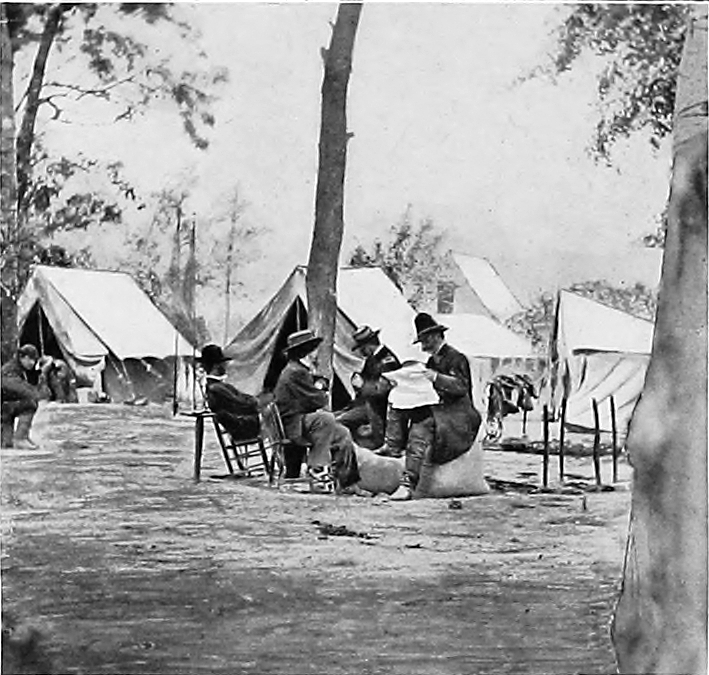
MATHEW BRADY, FIRST WAR PHOTOGRAPHER IN AMERICA
He followed the Armies during the Civil War and secured these remarkable
Negatives—In conference with Major-General Burnside at the Headquarters
of the Army of the Potomac near Richmond, Virginia—Brady
occupies the chair directly in front of the tree while General Burnside
is reading a newspaper—This picture was found amoSng his negatives
THIS is undoubtedly the most valuable collection
of historic photographs in America. It is believed
to be the first time that the camera was
used so extensively and practically on the battle-field.
It is the first known collection of its size on the Western
Continent and it is the only witness of the scenes enacted
during the greatest crisis in the annals of the American
nation. As a contribution to history it occupies a position
that the higher art of painting, or scholarly research and
literal description, can never usurp. It records a tragedy
that neither the imagination of the painter nor the skill
of the historian can so dramatically relate.
The existence of this collection is unknown by the
public at large. Even while this book has been in preparation
eminent photographers have pronounced it impossible,
declaring that photography was not sufficiently
advanced at that period to prove of such practical use
in War. Distinguished veterans of the Civil War have
informed me that they knew positively that there were
no cameras in the wake of the army. This incredulity
of men in a position to know the truth enhances the
value of the collection inasmuch that its genuineness
is officially proven by the testimony of those who saw
the pictures taken, by the personal statement of the man
who took them, and by the Government Records. For
forty-two years the original negatives have been in storage,
secreted from public view, except as an occasional proof
is drawn for some special use. How these negatives came
to be taken under most hazardous conditions in the storm
and stress of a War that threatened to change the entire
history of the world is itself an interesting historical incident.
Moreover, it is one of the tragedies of genius.
While the clouds were gathering, which finally broke
into the Civil War in the United States, there died in
London one named Scott-Archer, a man who had found
one of the great factors in civilization, but died poor and
before his time because he had overstrained his powers in
the cause of science. It was necessary to raise a subscription
for his widow, and the government settled upon
the children a pension of fifty pounds per annum on the
ground that their father was "the discoverer of a scientific
process of great value to the nation, from which the
inventor had reaped little or no benefit."
This was in 1857, and four years later, when the
American Republic became rent by a conflict of brother
against brother, Mathew B. Brady of Washington and
New York, asked the permission of the Government
and the protection of the Secret Service to demonstrate
the practicability of Scott-Archer's discovery in the severest
test that the invention had ever been given. Brady was
an artist by temperament and gained his technical knowledge
of portraiture in the rendezvous of Paris. He had
been interested in the discoveries of Niepce and
Daguerre and Fox-Talbot along the crude lines of
photography but with the introduction of the collodion
process of Scott-Archer he accepted the science as a profession
and, during twenty-five years of labor as a pioneer
photographer, took the likenesses of the political celebrities
of the epoch and of eminent men and women throughout
the country.
Brady's request was granted and he invested heavily in
cameras which were made specially for the hard usage of
warfare. These cameras were cumbersome and were
operated by what is known as the old wet-plate process,
requiring a dark room which was carried with them onto
the battle-fields. The experimental operations under
Brady proved so successful that they attracted the immediate
attention of President Lincoln, General Grant
and Allan Pinkerton, known as Major Allen and chief
of the Secret Service. Equipments were hurried to all
divisions of the great army and some of them found their
way into the Confederate ranks.
[pg 6]
"THE black art," by which
Brady secured these photographs,
was as mystifying
as the work of a
magician. It required a knowledge
of chemistry and, considering the difficulties,
one wonders how Brady had
courage to undertake it on the battle-field.
He first immersed eighty
grains of cotton-wool in a mixture of
one ounce each of nitric and sulphuric
acids for fifteen seconds, washing
them in running water. The pyroxylin
was dissolved in a mixture of
equal parts of sulphuric ether and absolute
alcohol. This solution gave
him the ordinary collodion to which
he added iodide of potassium and a
little potassium bromide. He then
poured the iodized collodion on a
clean piece of sheet glass and allowed
two or three minutes for the film to
set. The coated plate was taken into
a "dark room," which Brady carried
with him, and immersed for about a
minute in a bath of thirty grains of
silver nitrate to every ounce of water.
The plate was now sensitive to white
light and must be placed immediately
in the camera and exposed and developed
within five minutes to get good
results, especially in the South during
the summer months. It was returned
to the dark room at once and developed
by pouring over it a mixture of
water, one ounce; acetic acid, one
dram; pyrogallic acid, three grains,
and "fixed" by soaking in a strong
solution of hyposulphite of soda or
cyanide of potassium. This photograph
shows Brady's "dark room" in
the Confederate lines southeast of
Atlanta, Georgia, shortly before the
battle of July 22, 1864. It is a fine
example of wet-plate photography.
[pg 7]
THE secret never has been divulged. How Mr.
Brady gained the confidence of such men as Jefferson
Davis and General Robert E. Lee, and was
passed through the Confederate lines, may never be
known. It is certain that he never betrayed the confidence
reposed in him and that the negatives were not
used for secret service information, and this despite the
fact, that Allan Pinkerton and the Artist Brady were
intimate. Neither of these men had any idea of the
years which the conflict was to rage and Mr. Brady expended
all his available funds upon paraphernalia. The
government was strained to its utmost resources in keeping
its defenders in food and ammunition. It was not
concerned in the development of a new science nor the
preservation of historical record. It faced a mighty foe
of its own blood. It must either fall or rise in a decisive
blow.
It was indeed a sorry time for an aesthete. Mr.
Brady was unable to secure money. His only recourse
was credit. This he secured from Anthony, who was
importing photographic materials into America and was
a founder of the trade on this continent. The next
obstacle was the securing of men competent to operate a
camera. Nearly every able-bodied man was engaged in
warfare. The science was new and required a knowledge
of chemistry. Brady was a man of speculative disposition
and plunged into the apparently impossible undertaking
of preserving on glass the scenes of action during
one of the most tremendous conflicts that the world has
known. Pressing toward the firing-line, planting his
camera on the field almost before the smoke of artillery
and musket had cleared, he came out of the War
with his thousands of negatives, perpetuating scenes
that human eyes never expected to look upon again.
There can be but very few important movements that
failed to become imprinted on these glass records.
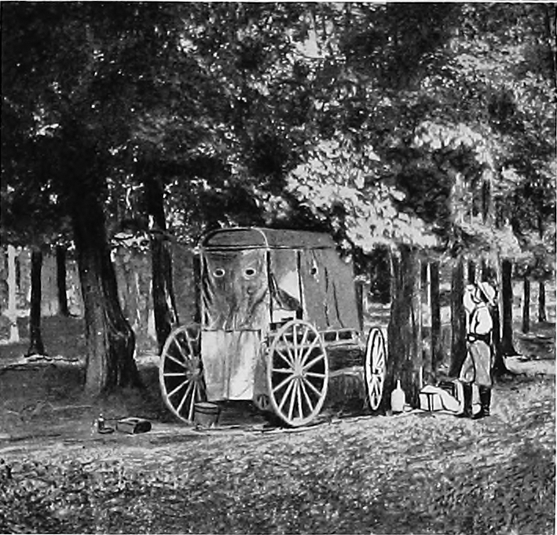
FIRST CAMERAS EVER USED ON THE BATTLEFIELD
One of Brady's Photograph Wagons in the wake of the Army at Manassas
on the Fourth of July, in 1862—These mysterious canvas-covered wagons,
traveling under the protection of the Secret Service, aroused the curiosity
of the soldiers whose frequent queries "What is it?" soon earned for them
the epithet of the "What is it?" wagon—Found among Brady's negatives
With the close of the War, Brady was in the direst
financial straits. He had spent every dollar of the
money accumulated in early portraiture and was heavily
in debt. Seven thousand of his negatives were sent to
New York as security for Anthony, his largest creditor.
The remaining six thousand negatives were placed in a
warehouse in Washington. Brady then began negotiations
for replenishing his funds by disposing of the property.
He exhibited proofs of his negatives in galleries
of the New York Historical Society the year following
the cessation of the conflict. On the twenty-ninth of
January of that same year, 1866, the Council of the
National Academy of Design adopted a resolution in
which it acknowledged the value of the Brady collection
as a reliable authority for art and an important contribution
to American history. It indorsed the proposal to
place the collection permanently with the New York
Historical Society. General Ulysses S. Grant had been
much interested in the work of Brady on the battlefield,
and in a letter written on February third, 1866, spoke of
it as "a collection of photographic views of battlefields
taken on the spot, while the occurrences represented were
taking place." General Grant added: "I knew when many
of these representations were being taken and I can say
that the scenes are not only spirited and correct, but also
well-chosen. The collection will be valuable to the
student and artist of the present generation, but how much
more valuable it will be to future generations?"
These were days of reconstruction. It was almost
impossible to interest men in matters not pertaining to
the re-establishment of Commerce and Trade. Brady
had spent twenty-five years in collecting the portraits of
distinguished personages and endeavored to dispose of
these to the Government. The joint committee on
libraries, on March third, 1871, recommended the purchase
of some two thousand portraits which they called:
"A National Collection of Portraits of Eminent Americans."
The congressmen, however, faced problems too
great to allow them to give attention to pictorial art and
took no final action on the subject. In the meantime
Brady was unable to meet the bill for storage and the
negatives in Washington were offered at auction. William
W. Belknap, the Secretary of War, was advised of
the conditions and in July, 1874, he paid the storage bill
and the negatives fell into possession of the Government.
The purchase was made at a public auction and the
Government bid was $2840 from money accumulated
by Provost Marshals and turned in to the Adjutant-General
at the close of the Civil War. The Government
Records fail to give a list of the negatives made either at
the time of the purchase or for many subsequent years.
The original voucher dated July 31st, 1874, is silent as
to the number of negatives received by the Government.
[pg 8]
THIS photograph is selected
from the seven thousand negatives
left by Mathew B.
Brady, the celebrated government
photographer, as one of the most
valuable in existence. It seems to be
the first instance on the Western Continent,
and possibly in the world, in
which a camera successfully imprinted
on glass the actual vision of a great
army in camp. While scenes such as
this are engraved on the memories of
the venerable warriors who participated
in the terrific struggle this remarkable
negative preserves for all
ages the magnificent pageant of men,
who have offered their lives in defense
of their country, waiting for the
call to the battle-line. The photograph
was taken on a day in the middle
of May in 1862 when the Army
of the Potomac was encamped at
Cumberland Landing on the Pamunky
River. A hundred thousand men rested
in this city of tents, in the seclusion
of the hills, eager to strike a blow for
the flag they loved, yet such was the
tragic stillness that one who recalls it
says that absolute quiet reigned
throughout the vast concourse like
the peace of the Sabbath-day. On
every side were immense fields of
wheat, promising an abundant harvest,
but trammeled under the feet of
the encroaching armies. Occasionally
the silence was broken by the strains
of a national song that swept from
tent to tent as the men smoked and
drowsed, fearless of the morrow.
The encampment covered many
square miles and this picture represents
but one brigade on the old Custis
place, near White House, which
became the estate of General Fitzhugh
Lee, the indomitable cavalry leader of
the Confederacy and an American patriot
during the later war with Spain.
The original negative, although now
forty-five years old, has required but
slight retouching in the background.
[pg 9]
GENERAL JAMES A. GARFIELD was fully
acquainted with the conditions under which
the negatives were taken and the subsequent
impoverishment of Mathew Brady. He insisted that
something should be done for the man who risked
all he had in the world and through misfortune lost the
results of his labors. General Benjamin Butler, Congressman
from Massachusetts, also felt the injustice, and on
his motion a paragraph was inserted in the Sundry Civil
Appropriation Bill for $25,000 "to enable the Secretary
of War to acquire a full and perfect title to the Brady
collection of photographs of the War." The business
element in Congress was inclined to question the material
value of the negatives. They were but little concerned
with the art value and the discussion became a matter of
business inventory. Generals Garfield and Butler in reply
to the economists declared: "The commercial value of the
entire collection is at least $150,000." Ten years after
the War, but too late to save him a vestige of business
credit, the Government came to Brady's relief and on
April 15, 1875, the sum of $25,000 was paid to him.
During these years of waiting, Brady had been unable to
satisfy the demands of his creditors and an attachment
was placed on the negatives in storage in New York.
Judgment was rendered to his creditor, Anthony, and the
negatives became his property.
Army officers who knew of the existence of the negatives
urged the Government to publish them as a part
of the Official Records of the War. The Government
stated in reply: "The photographic views of the War
showing the battlefields, military divisions, fortifications,
etc., are among the most authentic and valuable records
of the Rebellion. The preservation of these interesting
records of the War is too important to be intrusted in
glass plates so easily destroyed by accident or design and
no more effective means than printing can be devised to
save them from destruction." While a few proofs were
taken for the purpose of official records, the public still
remained unacquainted with the scenes so graphically
preserved. One who is acquainted with the conditions
says: "From different sources verbal and unofficial, it
was learned that quite a number of the negatives were
broken through careless handling by the employees of
the War Department." The negatives were transferred to
the War Records Office and placed under the careful supervision
of Colonel R. N. Scott.
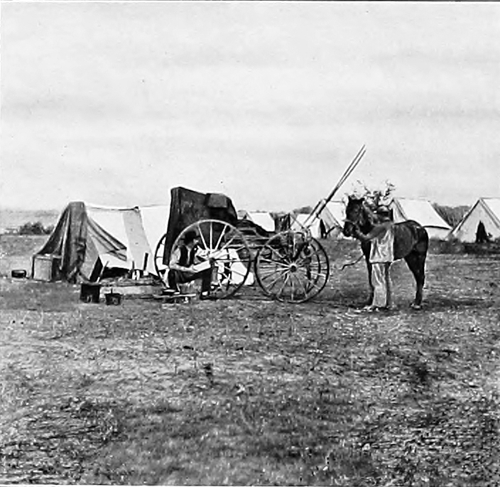
BRADY'S "WHAT IS IT?" IN THE CIVIL WAR
The Photographer's Headquarters at Cold Harbor, Virginia, in 1862,
where he had taken refuge to prepare his paraphernalia for a long
and hazardous journey—It was with much difficulty that the delicate glass
negatives were protected from breakage on these daring rides through
forests and fields and proofs were taken at the first opportunity that offered
Twenty-five years ago, in 1882, Bierstadt, a chemist,
informed the Government: "The breakableness of the
glass and the fugitive character of photograph chemicals
will in short time obliterate all traces of the scenes these
represent. Unless they are reproduced in some permanent
form they will soon be lost." Fifty-two negatives were
sent to him and he reproduced six of these by a photographic
mechanical process. The Government, however,
decided that the cost was prohibitive, the expense of
making the prints was seventy-five dollars a thousand
and would not allow any general circulation.
Honorable John C. Taylor, of Hartford, Connecticut,
a veteran of the Civil War, believed that the heroes of
the conflict should be allowed to look upon the scenes in
which they participated, and made a thorough investigation.
Mr. Taylor is now Secretary of the Connecticut
Prison Association and Past Commander of Post No. 50,
Grand Army of the Republic. In relating his experiences
to me a few days ago he said; "I found the seven
thousand negatives in New York stored in an old garret.
Anthony, the creditor, had drawn prints from some of
them and I purchased all that were in his possession. I
also made a deal with him to allow me to use the prints
exclusively. General Albert Ordway of the Loyal
Legion became acquainted with the conditions and, with
Colonel Rand of Boston, he purchased the negatives
from Anthony who had a clear title through court procedure.
I met these gentlemen and contracted to continue
my arrangement with them for the exclusive use of
the prints. I finally purchased the Brady negatives
from General Ordway and Colonel Rand with the intention
of bringing them before the eyes of all the old soldiers
so that they might see that the lens had forever perpetuated
their struggle for the Union. The Government
collection had for nine years remained comparatively
neglected but through ordinary breakage, lax supervision,
and disregard of orders, nearly three hundred of their
negatives were broken or lost. To assist them in securing
the prints for Government Records I loaned my seven
thousand negatives to the Navy Department and shipped
them to Washington where they were placed in a fireproof
warehouse at 920 E Street, North West. I did all
that was possible to facilitate the important work."
[pg 10]
THE lens here perpetuates the
interesting spectacle of an
army wagon train being
"parked" and guarded from
a raid by the enemy's cavalry. With
a million of the nation's strongest men
abandoning production to wage devastation
and destruction the problem
of providing them with food barely
sufficient to sustain life was an almost
incalculable enigma. The able-bodied
men of the North and the South had
turned from the fields and factories
to maintain what both conscientiously
believed to be their rights. Harvests
were left to the elements and
the wheels of industry fell into silence.
The good women and children
at home, aided by men willing
but unable to meet the hardships and
exposures of warfare, worked heroically
to hold their families together
and to send to their dear ones at the
battle-front whatever comforts came
within their humble power. The
supply trains of the great armies numbered
thousands of six-mule teams
and when on the march they would
stretch out for many miles. It was in
May, in 1863, that one of these wagon
trains safely reached Brandy Station,
Virginia. Its journey had been one
of imminent danger as both armies
were in dire need of provisions and
the capture of a wagon train was as
good fortune as victory in a skirmish.
To protect this train from a desperate
dash of the Confederate cavalry it
was "parked" on the outskirts of a
forest that protected it from envious
eyes and guarded by the Union lines.
One of Mr. Brady's cameras took
this photograph during this critical
moment. It shows but one division
of one corps. As there were three
divisions in each corps, and there
were many corps in the army, some
idea of the immense size of the
trains may be gained by this view.
The train succeeded in reaching its
destination at a time of much need.
[pg 11]
ENDEAVORS to reveal these negatives have been
futile as far as rank and file of the army
and the public at large are concerned. The
Government, as the years passed, became impressed
with the value of this wonderful record, but has now
officially stated with positive finality: "It is evident
that these invaluable
negatives
are rapidly
disappearing
and in order to
insure their preservation
it is
ordered that
hereafter negatives
shall not
be loaned to
private parties
for exploitation
or to subserve
private interest
in any manner."
The genius
Brady, in possession
of $25,000,
which,
came from the
Government
too late to save
his property,
entirely lost track of his collection. Misfortune seemed
to follow him and his Government money was soon exhausted.
In speaking of him a few days ago, John N.
Stewart, Past Vice Commander of the Department of
Illinois, Grand Army of the Republic, told me: "I was
with the Army of the Potomac as telegraph operator. I
knew that views of battlefields were taken by men with
a cumbersome outfit as compared with the modern field
photographer. I have often wondered what became of
their product. I saw Mr. Brady in Washington, shortly
before his death, and I made inquiry of him as to the
whereabouts of his war scenes. I asked him if the negatives
were still in existence and where proofs could be
procured. He replied: 'I do not know!' The vast collection
must possess great value and be of remarkable
historical interest at this late date."
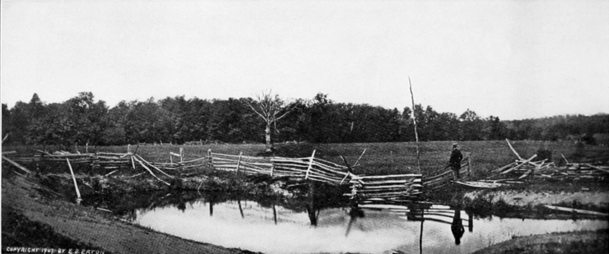
BRADY ON THE BATTLEFIELD OF GETTYSBURG IN JULY 1863—The smoke of the terrific conflict had hardly cleared away when Brady's "What is it" wagon rolled onto
the bloody "wheat field"—This picture shows Brady looking toward McPherson's woods on the left of the Chambersburg Pike at the point near which the Battle of Gettysburg began
In talking with Mr. Taylor, in his office at the
State Capitol at Hartford, Connecticut, recently he
recalled his acquaintance with Brady, and said: "I met
him frequently. He was a man of artistic appearance
and of very slight physique. I should judge that he was
about five feet, six inches tall. He generally wore a
broad-brimmed hat similar to those worn by the art
students in Paris. His hair was long and bushy. The
last time I met him was about twenty-five years after the
War and he appeared to be a man of about sixty-five
years of age.
Despite his financial
reverses
he was still true
to his love for
art. I told him
that I owned
seven thousand
of his negatives
and he seemed
to be pleased.
He became reminiscent
and
among the
things that he
told me I especially
remember
these
words: 'No
one will ever
know what I
went through
in securing
those negatives.
The
world can never appreciate it. It changed the whole
course of my life. By persistence and all the political
influence that I could control I finally secured permission
from Stanton, the Secretary of War, to go onto
the battlefields with my cameras. Some of those negatives
nearly cost me my life.'" Mr. Brady told Mr. Taylor
of his difficulty in finding men to operate his cameras.
[pg 12]
"PINKERTON" is a name
associated with the discovery
of crime the world
over. It is a word shrouded
in mystery and through it works
one of the most subtle forces on the
face of the earth to-day. Sixty-five
years ago an unassuming man fled
from Scotland to America. It was
charged against him that he was a
chartist. Eight years later he was in
Chicago established in the detection
of crime. While the distant rumbles
of a Civil War were warning the nation,
he went to Washington and became
closely attached to President
Lincoln. When a plot was organized
to assassinate Lincoln in his first days
of the presidency, this strange man
discovered the murderous compact. It
was he who, in 1861, hurriedly organized
the Secret Service of the National
Army and forestalled conspiracies
that threatened to overthrow the Republic.
In speaking of himself he
once said: "Now that it is all over I
am tempted to reveal the secret. I
have had many intimate friends in the
army and in the government. They
all know Major E. J. Allen, but many
of them will never know that their
friend, Major Allen and Allan Pinkerton,
are one and the same person."
To those who knew Major Allen this
picture is dedicated. It reveals Allan
Pinkerton divested of all mystery,
father of the great system that has
literally drawn a net around the world
into which all fugitive wrongdoers
must eventually fall. Under the
guise of Major Allen, chief of the Secret
Service in the Civil War, he was
passing through the camp at Antietam
one September day in 1862. He was
riding his favorite horse and carelessly
smoking a cigar when one of
Mr. Brady's men called to him to halt
a moment while he took this picture.
[pg 13]
BRADY said he always made two exposures of the
same scene, sometimes with a shift of the camera
which gave a slight change in the same general
view. He related several interesting incidents of his
early experiences in photography in America. It is
generally conceded that Mr. Brady should be recognized as
one of the great figures of the epoch in which he worked.
It is here my duty to record an
unfortunate incident that is not unusual
in the annals of art and literature.
Brady's life, which seems to have been
burdened with more ill luck than the
ordinary lot of man, found little relief in
its venerable years. Misfortune followed
him to the very threshold of his last hour.
He died about eight years ago in New
York, with a few staunch friends,
but without money, and without public
recognition for his services to mankind.
Since Brady's death some of those who
knew and esteemed him have been interested
in making a last endeavor to bring
his work before the world. Mr. Taylor has
worked unceasingly to accomplish this
result. The late Daniel S. Lamont, Secretary
of War in President Cleveland's
Cabinet, was much interested. Brigadier-General
A. W. Greeley, in supervisory
charge of the Government collection,
said: "This collection cost the United
States originally the sum of $27,840, and
it is a matter of general regret that these
invaluable reproductions of scenes and faces connected
with the late civil conflict should remain inaccessible to
the general public. The features of most of the permanent
actors connected with the War for the Union
have been preserved in these negatives, where also are
portrayed certain physical aspects of the War that
are of interest and of historic value ... graphic representations
of the greatest of American, if not of all, wars."
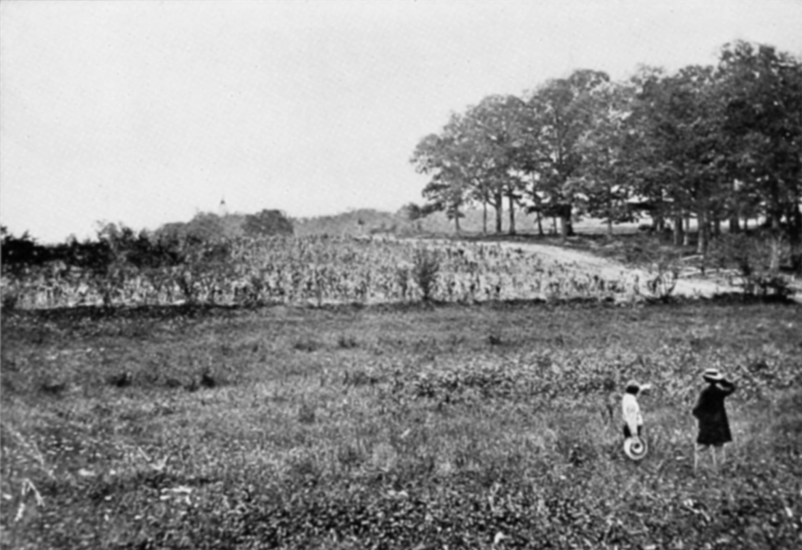
SECRET SERVICE GUIDE DIRECTING BRADY TO SCENE OF ACTION—Pointing toward the edge of the
woods where General Reynolds was killed at Gettysburg in July, 1863—Brady carried his cameras onto this field
The Government, however, has stated positively that
their negatives must not be exploited for commercial purposes.
They are the historic treasures of the whole
people and the Government has justly refused to establish
a dangerous system of "special privilege" by granting
permission for publication to individuals. As the property
of the people the Government negatives are held in
sacred trust.
Mr. Edward B. Eaton, the first president of the
Connecticut Magazine, one of the leading historical
publications in this country, became interested in the historical
significance of the Brady collection and conferred
with the War Department at Washington about the Brady
negatives. He found that the only possible way to bring
the scenes before the public was through the private collection
which not only includes practically all of the six
thousand Government negatives but is supplemented by
a thousand negatives not in the Government collection.
Mr. Johann Olsen of Hartford, who
was one of the first operators of the old
wet-plate process used by Brady, personally
examined many of the negatives in
storage in Washington and stated that some
action should be taken immediately. He
says: "Many of the negatives are undergoing
chemical action which will soon
destroy them. Others are in a remarkable
state of preservation. I have found
among them some of the finest specimens
of photography that this country has ever
seen. The modern development of the
art is placed at a disadvantage when compared
with some of these wonderful negatives.
I do not believe that General
Garfield overestimated their value when
he said they were worth $150,000. I do
not believe that their value to American
History can be estimated in dollars. I
was personally acquainted with one of
Brady's men at the time these pictures
were taken and I know something of
the tremendous difficulties in securing
them." A few months ago Mr. Eaton
secured a clear title to the seven thousand Brady negatives
owned by Mr. Taylor with a full understanding
that he would immediately place the scenes before the
public. The delicate glass plates were fully protected
and removed from Washington to Hartford, where they
are today in storage in a fire-proof vault.
[pg 14]
THIS is conceded to be the most
characteristic photograph of
Lincoln ever taken. It shows
him on the battle-field, towering
head and shoulders above his
army officers. It is said that Lincoln
once sent for this photograph and
after looking at it for several minutes
he remarked that it was the best full-length
picture that the camera had
ever "perpetrated." The original
negative is in a good state of preservation.
The greater significance of
this picture, however, is the incident
which it perpetuates. There had been
unfortunate differences between the
government and the Army of the
Potomac. The future of the Union
cause looked dark. A critical state
of the disorder had been reached; collapse
seemed imminent. On the first
day of October, in 1862, President
Lincoln went to the headquarters of
the Army of the Potomac and traversed
the scenes of action, walking
over the battlefields of South Mountain,
Crampton's Gap, and Antietam
with General McClellan. As Lincoln
was bidding good-bye to McClellan
and a group of officers at Antietam
on October 4, 1862, this photograph
was taken. Two days later
Lincoln ordered McClellan to cross
the Potomac and give battle to the
enemy. Misunderstandings followed,
and on the fifth of November, President
Lincoln, with his own hand,
wrote the historic order that deposed
the beloved commander of the
Potomac, and started controversies
which are still renewed and vigorously
argued by army officers and
historians. It is one of the sad incidents
of the passing of a hero, who
had endeared himself to his men as
have few generals in the annals of war.
[pg 15]
MODERN photographers have experienced some
difficulty in securing proofs from the collodion
negatives, due both to the years that the negatives
have been neglected and their inexperience with
the peculiar wet-plate process. Mr. Olsen is still working
over them and has succeeded in stopping the
chemical action that threatened to destroy many of them.
Six thousand of the negatives are pronounced to be in as
good condition today as on the day they were taken,
nearly a half-century ago. Accompanying the collection
is found an occasional negative that seems to
have been made by Alexander Gardner or
Samuel Cooley. Gardner was one of the photographers
employed by Brady, but he later left
him and entered into competition. Cooley
was an early photographer who conceived a
plan similar to Brady's, but operated on a very
limited scale. Most of his negatives were
taken in South Carolina.
From this remarkable collection, witnessing
the darkest days on the American continent
and the first days of modern American
photography, the prints are selected for these
pages and are here dedicated to the American
People. Until recent years there has been
no mechanical process by which these negatives
could be reproduced for general observation.
The negatives are here accurately
presented from the originals, by the modern half-tone process
with only the slightest retouching where chemical
action has made it absolutely necessary.
In selecting these prints it has been the desire of the
editor to present, as nearly as possible, a chronological
pictorial record of the Civil War in the United States.
At strategic points where the large cameras could not be
drawn into the conflict, Brady used a smaller and lighter
camera that allowed him to get very close to the field of
action. Many of the most critical moments in the long
siege are embodied in these small negatives. They link
the larger pictures into one strong chain of indisputable
evidence. It would require forty volumes to present the
entire collection. This book can be but a kaleidoscopic
vision of the great conflict. Thousands of remarkable
scenes must for the present, at least remain unveiled.
That the public may know just what these negatives conceal,
a partial record has been compiled in the closing
pages of this volume.
It has been estimated that since the beginning of authentic history war has destroyed
fifteen billions of human lives. I have seen the estimate put at twice that number. The
estimated loss of life by war in the past century is fourteen millions. Napoleon's campaigns
of twenty years cost Europe six millions of lives.
| The Crimean War |
1854 |
750,000 |
| The Italian War |
1859 |
63,000 |
| Our Civil War, North and South |
(killed and died in other ways) |
1,000,000 |
| The Prussian-Austrian War |
1866 |
45,000 |
| The expeditions to Mexico, China, Morocco, etc |
|
65,000 |
| The Franco-German War |
1870 |
250,000 |
| The Russo-Turkish War |
1877 |
225,000 |
| The Zulu and Afghan Wars |
1879 |
40,000 |
| The Chinese-Japanese War |
1894 |
10,000 |
| The Spanish-American War |
|
5,000 |
| The Philippine War |
1899 |
{ Americans 5,000
{ Filipinos 1,000,000 |
| The Boer War |
(killed and wounded) |
{ Boers 25,000
{ British 100,000 |
| The Russo-Japanese War |
|
450,500 |
These are probably all under the actual facts.
Benjamin F. Trueblood,
Secretary American Peace Society.
The drama here revealed by the lens is one of intense
realism. In it one can almost hear the beat of the drum
and the call of the bugle. It throbs with all the passions
known to humanity. It brings one face to face with the
madness of battle, the thrill of victory, the broken heart
of defeat. There is in it the loyalty of comradeship, the
tenderness of brotherhood, the pathos of the soldier's last
hour; the willingness to sacrifice, the fidelity to principle,
the love of country.
Far be it from the power of these old negatives to
bring back the memory of forgotten dissensions or long-gone
contentions. Whatever may have been the differences
that threw a million of America's strongest manhood
into bloody combat, each one offered his life for what he
believed to be the right. The American People today are
more strongly united then ever before—North, South,
East and West, all are working for the moral, the intellectual,
the industrial and political upbuilding of Our
Beloved Land.
The path of Progress has been blazed by fire. Strong
men with strong purposes have thrown their lives on the
altar of civilization that their children and their
children's children might live and work in the
light of a new epoch that found its birth in the
agonizing throes of human sacrifice. From the
beginning of all ages the soldier has been, and
always must be, a mighty man.
He who will step deliberately into the
demon's jaws to defend a principle or to save
his country must be among the greatest of men.
His is the heroic heart to whom the world must
look for the dawn of the Age of Universal
Peace. It is his courageous arm that must
force the world to halt. The citizenship of the
future must be moulded and dominated by the
men with the willingness to sacrifice for the
sake of Justice and such men are soldiers,
whether it be in War or Peace.
There is a longing in the hearts of men, and
especially those who have felt the ravages of battle,
for the day when there shall be no more War; when Force
will be dethroned and Reason will rule triumphant. The
Great Washington, who led the conflict for our National
Independence, longed for the epoch of Peace. "My first
wish," he exclaimed, "is to see this plague to mankind
banished from the earth."
The mission of these pages is one of Peace—that
all may look upon the horrors of War and pledge their
manhood to "Peace on Earth, Good Will toward Men!"
[pg 16]
"WAR is hell!" The daring
Sherman's familiar
truth is here witnessed
with all its horrors.
War is hell, and this is war! If it
were not for the service that this negative
should do for the great cause of
the world's Peace, this picture, which
has lain in a vault in Washington for
an epoch, would never be exposed to
public view. Its very gruesomeness
is a plea to men to lay down arms.
Its ghastliness is an admonition to the
coming generations. It is a silent
prayer for universal brotherhood.
The negative was taken after the
third day's battle at Gettysburg. The
din of the batteries had died away.
The clash of arms had ceased. The
tumult of men was hushed. The
clouds of smoke had lifted and the
morning sun engraved on the glass
plate this mute witness of the tragedy
that had made history. It was the
nation's holiday—the Fourth of July
in 1863. The camera was taken into
the wheat-field near the extreme left
of the Union line. The heroes had
been dead about nineteen hours. It
will be observed that their bodies are
already much bloated by exposure to
the sun. These men were killed on
July 3, 1863, by one discharge of
"canister" from a Confederate cannon
which they were attempting to capture.
Tin cans were filled with small
balls about the size of marbles and
when the cannon was fired the force
of the discharge burst open the can,
and the shower of canister balls swept
everything before it. When this photograph
was taken a detail had
already passed over the field, and
gathered the guns and accoutrements
of the dead and wounded. Shoes,
cartridge belts and canteens have
been removed from these dead heroes
as it was frequently necessary to appropriate
them to relieve the needs of
the living soldiers. From diamond at
extreme right of picture these men
are identified as belonging to the
second division of third army corps.
[pg 17]
IN the conflicts within the lifetime of men now
living, more than three billions of dollars sterling
have been thrown into the cannon's mouth, and
nearly five millions of human lives have fallen martyrs to
the battlefield. In the United States of America, a
government founded on the Brotherhood of Man, the
greatest expenditure since the beginning of the Republic
has been for bloodshed, over six billions for War,
nearly two billions for navy, and about three and one-half
billions for pensions—more than eleven billions out
of a total of something over nineteen billions of dollars.
In the last half century the population of the world has
doubled; its indebtedness, chiefly for war purposes, has
quadrupled. It was but eight billions fifty years ago;
it is thirty-two billions today.
America has never been a war-seeking nation. Its one
desire has been to "live and let live." When once
aroused, however, it is the greatest fighting force on the
face of the globe. It is in this peace-loving land that
civilization witnessed the most terrible and heart-rending
struggle that ever befell men of the same blood. "Men
speaking the same language, living for eighty-four years
under the same flag, stood as enemies in deadly combat.
Brother fighting against brother; father against son;
mothers praying for their boys—one in the uniform of
blue, and the other wearing the gray; and churches of the
same faith appealing to God, each for the other's overthrow."
There were 2,841,906 men and boys sworn into the
defence of their country during the Civil War in the
United States. The extreme youth of these patriots is
one of the most remarkable records in the annals of the
world's warfare. The average age of the soldier in the
army and navy was about nineteen years. Some of
them followed the marching armies on the impulse of the
moment; most of them were enlisted with the consent of
their parents or guardians. Thousands of them never
returned home; thousands more came back to the pursuits
of Peace and have contributed for nearly a half
century to the Good Citizenship of the Republic. Today
they are gray-haired patriarchs. One by one they
are stepping from the ranks to answer the call to the
Greater Army from which no soldier has ever returned.
This record has been compiled for this volume from an
authoritative source. The men who re-enlisted are
counted twice as there is no practical way to estimate
the number of individual persons:
682,117 were over 21 years of age;
1,159,789 were 21 years old and under;
1,151,438 were 18 years old and under;
844,891 were 17 years old and under;
231,051 were 16 years old and under;
104,987 were 15 years old and under;
1,523 were 14 years old and under;
300 were 13 years old and under;
278 were 12 years old and under.
When the Great Struggle began, the United States
was the home of less than thirty-two millions of people.
Today it has passed eighty millions and the peoples
from all the nations of the earth are flooding into our
open gates to the extent of more than a million a year.
A new community of more than three thousand inhabitants
could be founded every day from the men,
women and children who disembark from the sea of ships
charted to the American shores. There are among us
today more than forty-eight millions who have been born
here or immigrated into this country since the beginning of
the Civil War. These people have no personal knowledge
of it and their information is gathered from the narrations
of others. These Brady negatives will come as
a revelation to them and give a truer understanding
of the meaning of it all. The good service they may
do for the nation in this one respect cannot be overestimated.
With thirty-two millions of people aroused by an overpowering
impulse that dared them to follow the dictates
of conscience by pledging their loyalty to the states
they loved—whether it be under Southern suns or
Northern snows—it is almost beyond comprehension
that Brady came out of the chaos with even one photographic
record. While his extensive operations could not
begin until system and organization were accomplished, he
did secure many negatives in 1861.
Hardly had the news of the first gun passed around
the globe when a half million men were offering their
services to their country. Loyal Massachusetts was
the first to march her strong and willing sons to the protection
of the Government. The shrill notes of the fife
sounded throughout the land and battle-scarred old
Europe beheld in amazement the marshalling of great
armies from a nation of volunteer patriots wholly inexperienced
in military discipline—a miracle in the eyes of
older civilization that had been drenched in the blood of
centuries.
It was the simultaneous uprising of a Great People.
The first shot from South Carolina transformed Virginia,
the beloved mother of presidents, into a battleground.
The streets of Baltimore became a scene of riot. The
guns of the navy boomed on the North Carolina coast.
The men of the West moved on through Missouri, blazing
their way with shot and shell. Through Kentucky
and Tennessee the reign of fire swept on until it re-echoed
from Florida on the gulf to the wilderness of New Mexico
and the borderline of Texas.
The American Republic was in the clutches of terrific
conflict and in the first twelve months nearly a million
and a quarter of its manhood was fighting for the National
Flag. There was no turning from the struggle. It must
be waged to its deadliest end. From this moment, for four
dreadful years, fighting was taking place somewhere along
the line every day and more than seven thousand battles
and skirmishes were fought on land and sea.
Nearly three-fourths of the men who stood in the Union
ranks in the Civil War were native-born Americans. The
others were the best and bravest blood of fellow-nations.
[pg 18]
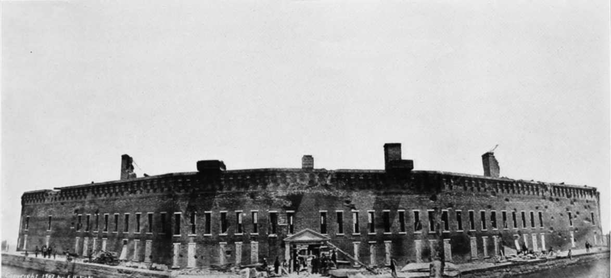
PHOTOGRAPH TAKEN AT FORT SUMTER IN 1861
"THEY have fired on Fort Sumter!"
These are the words that rang across
the continent on the morning of the
twelfth of April, in 1861, and the
echo was heard around the world. The shot that
began one of the fiercest conflicts that civilization
has ever seen was fired just before sunrise at
four in the morning. Special editions of newspapers
heralded the tidings through the land.
Thousands of excited men crowded the streets.
Trade was suspended. Night and day the people
thronged the thoroughfares, eager to hear the
latest word from the scene of action. Friday
and Saturday were the most anxious days that
the American people have ever experienced.
When the news came on Sunday morning that
Major Robert Anderson had evacuated the fort
with flags flying and drums beating "Yankee
Doodle," the North was electrified with patriotism.
The stars and stripes were thrown to the
breeze from spires of churches, windows of residences,
railway stations and public buildings.
The fife and drum were heard in the streets.
Recruiting offices were opened on public squares.
Men left their business and stepped into the
ranks. A few days later, when the brave defenders
of Fort Sumter reached New York, the
air was alive with floating banners. Flowers,
fruits and delicacies were showered upon the
one hundred and twenty-nine courageous men
who had so gallantly withstood the onslaught of
six thousand. Crowds seized the heroes and carried
them through the streets on their shoulders.
The South was mad with victory. It was believed
that its independence had been already gained.
Several days after the bombardment this picture
was secured of the historic fort in South Carolina,
about which centered the beginning of a
great war. It was taken in four sections and
this is a panoramic view of them all. The photograph
did not fall into the possession of the
Government, but was held for many years by a
Confederate naval officer, Daniel Ellis, commander
of the twenty-gun ram "Chicora" and at
one time in command of Fort Sumter. It is
now in possession of James W. Eldridge of Hartford.
It corrects the erroneous impression that
the fort was demolished in 1861. It stood the
bombardment with but slight damage, other than
a few holes knocked in the masonry as this picture
testifies. In saluting the American flag before
the evacuation on April 15, Private Daniel
Hough was killed and three men wounded by the
premature explosion of one of their own guns.
[pg 19]
"JOHN BROWN'S body lies
a-mouldering in the grave;
his soul is marching on!"
In every public meeting,
through village and town, along the
lines of recruits marching to the
front, around the army campfires, this
song became the battle-cry. It had
been but three years since John
Brown, with seventeen whites and
five negroes, seized the United States
Arsenal at Harper's Ferry, Virginia,
and began the freeing of slaves. It
required eighteen hours and 1,500
militia and marines to subdue the
ardent abolitionist. He took refuge
in the armory engine house. The
doors were battered down. Eight
of the insurgents were killed. Brown,
with three whites and a half dozen negroes,
was captured and hanged. The
Confederates planned its capture, but
upon their approach on the eighteenth
of April, in 1861, three days
after the firing on Fort Sumter, they
found only the burning arsenal. They
held the coveted position with 6,500
men, but fearing the attack of 20,000
Unionists, deserted it. It was held
by the Union troops until 1862, when,
on the fifteenth of September, Stonewall
Jackson bombarded the town
and forced its surrender. The Union
loss was 80 killed, 120 wounded,
11,583 captured. The Confederate
loss was 500. In this engagement
were the brave boys of the 12th New
York State Militia; 39th, 111th, 115th,
125th and 126th New York; 32nd,
60th and 87th Ohio; 9th Vermont;
65th Illinois; 1st and 3rd Maryland
"Home Brigade;" 15th Indiana Volunteers;
Phillips' Battery; 5th New
York; Graham's, Pott's and Rigby's
Batteries; 8th New York; 12th Illinois,
and 1st Maryland Cavalry. It
was during these days that the Army
of the Potomac engaged the Confederate
forces in bloody conflict at
Turner's and Crampton's Gap, South
Mountain, Maryland, leaving Harper's
Ferry again in the hands of the Union.
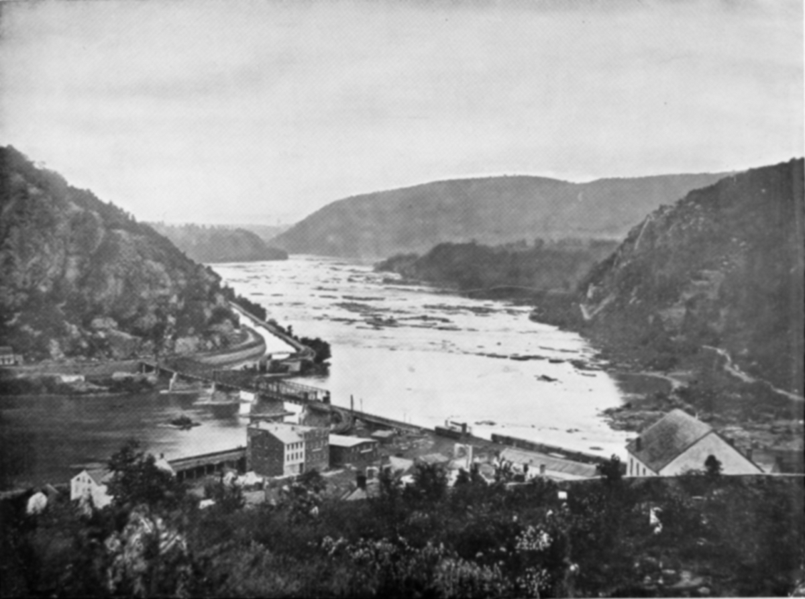
PHOTOGRAPH TAKEN AT HARPER'S FERRY
[pg 20]
THERE is not a fleet on the seas
that can withstand a modern
battery if kept under fire by
proper obstructions. Modern
sea-coast artillery can destroy a vessel
at a single shot. The watchdog that
guarded the waterway to the National
Capital in the Civil War was
Fortress Monroe. The old stone
fort, partially protected by masses of
earth that sheltered it from the view
and fire of the assailant, challenged
the ugliest iron-clads to pass through
Hampton Roads. Fortress Monroe
early became the base of operations
and under its protection volunteer
regiments were mobilized. When the
2nd New York Volunteers reached
the fort, about six weeks after the
firing on Fort Sumter, the 4th Massachusetts
Volunteers had come to the
assistance of the regular garrison of
four companies of artillery on duty
day and night over their guns. Something
of the conditions may be understood
by the statement of an officer
who says that his men had to appear
on parade with blankets wrapped
about them to conceal a lack of proper
garments, and sometimes stood sentinel
with naked feet and almost naked
bodies. The volunteers arrived
faster than provisions could be furnished
and there was a scarcity of
food. So great was the difficulty in
procuring small arms that some of the
soldiers were not really fitted for war
during the year of 1861. The Government
operations were centered
around Fortress Monroe and President
Lincoln personally visited the
headquarters to ascertain the actual
conditions. Brady was admitted behind
the parapets with his camera and
secured this photograph of one of the
heaviest guns in the great fortification.
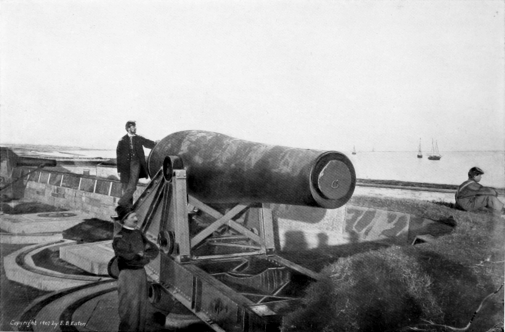
PHOTOGRAPH TAKEN AT FORTRESS MONROE
[pg 21]
TO feed the millions of fighting men in both armies during the years 1861 to 1865,
was an enigma equalled only by the problem of ammunition. After the diets of hardtack
on the long marches there is no memory dearer to the heart of the old veteran
than a good, old-fashioned "square meal" from the log-cabin kitchen in the camp.
This is a typical scene of one of these winter camps. They were substantially built of logs,
chinked in with mud and provided on one end with a generous mud chimney and fireplace.
The most "palatial" afforded a door and a window. Roaring fires burned on the hearths.
With the arrival of the soldiers, knapsacks and traps were unpacked. The canteen was hung
on its proper peg. The musket found its place on the wall. The old frying pan and tin cup
were hung near the fire. There was to be a real "old home feast." The soldiers crowded
around the sutler's tent dickering over canned goods and other luxuries which cost perhaps a
half-month's pay. The log settlement was all astir. Smoke issued from the mud chimneys.
Crackling fires and savory odors lightened the hearts of the warriors and the community of
huts rang with jovialty, laughter and song. Stories of the conflict were told as the soldiers
revelled over the hot and hearty meal and not until the late hours did the tired comrades
wrap themselves in their blankets and fall onto their beds of pine needles or hard board bunks.
THE charge of the cavalry is an intense moment on the battlefield. At the time of the
Civil War nothing was known of the snap-shot process in photography and Brady
tried frequently throughout the four years to secure negatives of the cavalry. It
seems to have been an impossibility under the long "time exposure process." He did,
however, succeed in securing negatives of horses. Frequent opportunity to try to secure a
photograph of the cavalry, is proven by the fact that there were 3,266 troops, or more than
272 regiments, in defense of the Government. This picture is found in Brady's collection
and shows the cavalry depot at Giesboro Point, Maryland, just outside of Washington. At
the beginning of the war the mounted men were used as scouts, orderlies, and in outpost duty.
General "Joe" Hooker finally turned a multitude of detachments into a compact army corps
of 12,000 horsemen. The gallant horseman, "Phil" Sheridan, under instructions from General
Grant, organized three divisions of 5,000 mounted men, each armed with repeating carbines
and sabers. It was with this force that Sheridan met the Confederate cavalry at Yellow
Tavern, near Richmond, and demonstrated the importance of mounted troops by great military
powers. One of the most magnificent scenes in the war was when 10,000 horsemen moved out
on the Telegraph Road leading from Fredericksburg to Richmond, and the column, as it stood in
"fours," well closed up, was thirteen miles long and required four hours to pass a given point.
[pg 22]
"CAPTURE the National
Capital, throw the city
into confusion and terror
by conflagration, seize the
President and his Cabinet, and secure
control of the Government." This
was the first cry of the Confederacy.
Thousands of volunteers were moving
toward the city in answer to the
call for men to save the Nation. Orders
were issued to hold back the enemy
from crossing the bridges that
entered Washington. Two batteries
were thrown up at the east end of the
Upper, or Chain Bridge, and a heavy
two-leaved gate covered with iron
plates pierced for musketry, was constructed
at the center of the bridge.
Blockhouses at Arlington Heights
and the battery at Georgetown
Heights, guarded the Aqueduct
Bridge. The largest approach to
Washington was the famous Long
Bridge, a mile in length, and connecting
the National Capital with
Alexandria, Virginia, the gateway to
the Confederacy. Three earthen forts
commanded its entrance. All soldiers
of the Army of the Potomac remember
Long Bridge. It was over
this structure that a hundred thousand
men passed in defense of their
country, many of them never to recross
it. This was one of the strategic
points in the first days of the war
and consequently one of the first pictures
taken by Brady, with its sentinel
on duty and the sergeant of the
guard ready to examine the pass. No
man ever crossed Long Bridge without
this written oath: "It is understood
that the within named and subscriber
accepts this pass on his word
of honor that he is and will be ever
loyal to the United States; and if
hereafter found in arms against the
Union, or in any way aiding her
enemies, the penalty will be death."
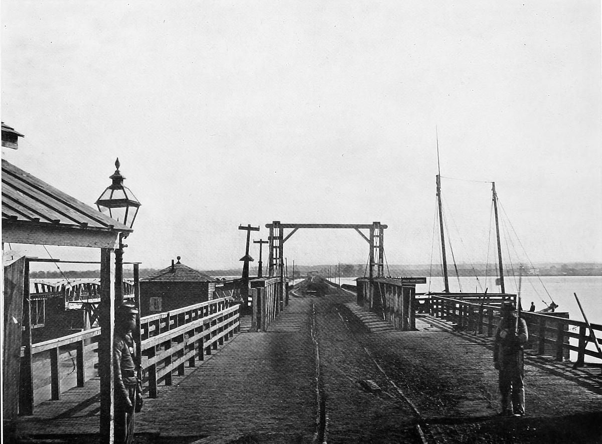
PHOTOGRAPH TAKEN AT LONG BRIDGE ENTRANCE TO WASHINGTON
[pg 23]
THERE is nothing impossible to
any army in time of war.
Bridges are thrown across
rivers in a night; roads are
constructed as the line advances; telegraph
wires are uncoiled in the wake
of the moving regiments. To protect
from a delay that might mean defeat,
the army frequently carried its own
"bridges" with it. These army or
pontoon bridges consisted of boats
over which planks were thrown to
span the waterways. This view shows
two of the boat's wheels ready for the
march. Each pontoon wagon is
drawn by six mules. These pontoons
were always getting stuck in
the mud, and the soldiers, struggling
along under their own burdens, were
obliged to haul on the drag ropes, and
raise the blockade. Probably no soldier
will see this picture without being
reminded of the time when he
helped to pull these pontoons out of
the mud, and comforted himself by
shouting at the mules. A view is also
shown of a pontoon bridge across the
James River ready for the approach
of the army. It was often necessary
to establish an immediate telegraph
service between different points in the
lines. This photograph shows one of
the characteristic field telegraph stations.
An old piece of canvas
stretched over some rails forms the
telegrapher's office, and a "hardtack"
box is his telegraph table; but
from such a rude station messages
were often sent which involved the
lives of hundreds and thousands of
soldiers. The building of corduroy
roads to allow ammunition and provision
trains to pass on their journeys
was of utmost importance. An hour's
delay might throw them into the
hands of the enemy. Many disasters
were averted by the ingenuity
of the engineers' corps.
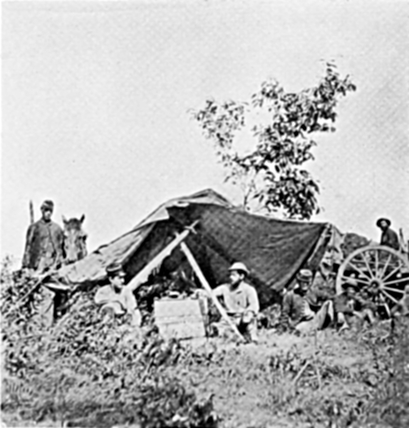
FIELD TELEGRAPH STATION IN OPERATION
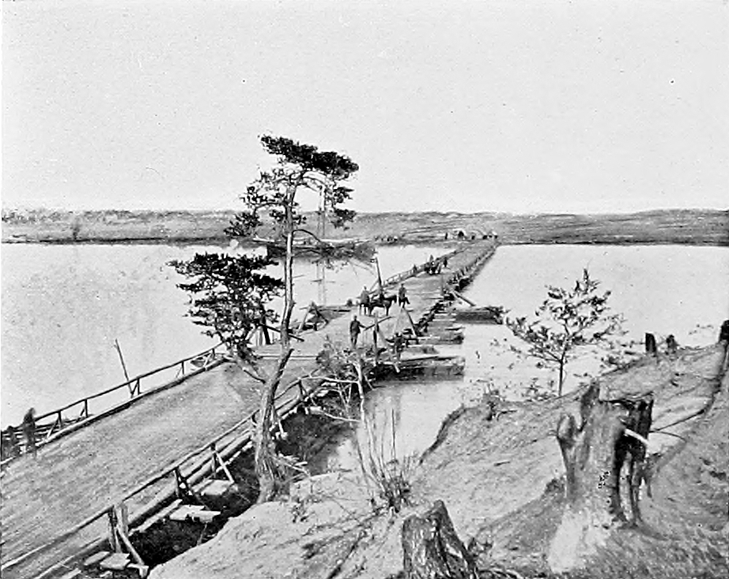
PONTOON BRIDGE ACROSS JAMES RIVER
[pg 24]
"IF any one attempts to haul
down the American flag,
shoot him on the spot!"
The order rang from town
to town. Old Glory waved in the
breeze defiantly. "The flag of the
Confederacy will be hoisted over
Washington within sixty days," came
the retort from the far South. "Only
over our dead bodies," replied the
men of the North. The National
Government discovered that a conspiracy
had been in operation to denude
its armories and weaken its defenses.
Political influences had secretly
disarmed the incoming administration,
scattering the regular army
in helpless and hopeless positions far
from the seat of the Government and
beyond its call in an emergency.
Northern forts had been dismantled
and the munitions from Northern
arsenals had been dispatched to
Southern vantage grounds to be used
in case of necessity. The treasury
had been depleted and the Government
was on the verge of bankruptcy.
Eleven of the historic old states of the
Union had withdrawn and formed a
new republic, the "Confederate States
of America." These were the conditions
that confronted Lincoln in his
first days of the Presidency. Plots
were rampant to take his life. His
steps were shadowed by Secret Service
detectives to safeguard him
against assassins, and he was practically
held a prisoner in the White
House. In further protection the defenses
around the city were strengthened.
From every hillside grim guns
turned their deep mouths into the valleys
until a chain of fortifications
made the city impregnable. Brady
secured permission to take his cameras
into these fortifications. This is
the best negative which he secured.
It is taken behind the breastworks
at Fort Lincoln, near Washington.
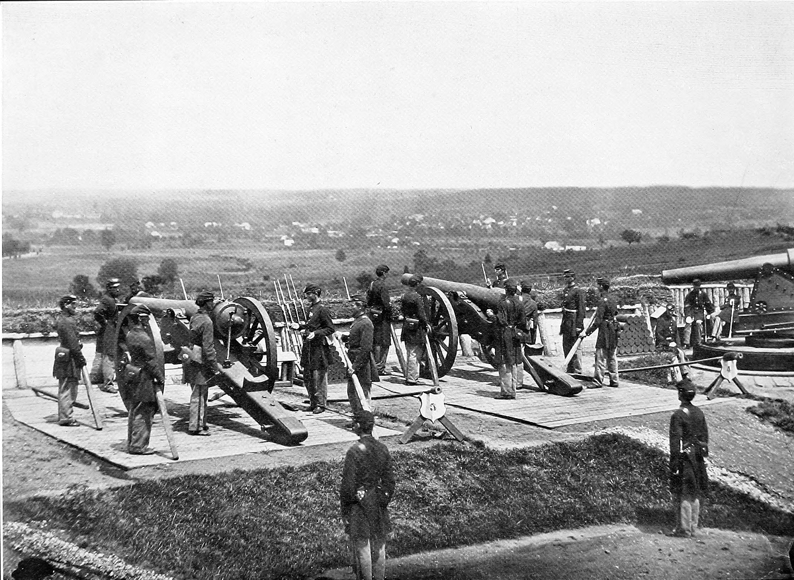
PHOTOGRAPH TAKEN AT FORT LINCOLN
[pg 25]
THE first serious collision of the
two great armies of divided
Americans took place at Bull
Run, in Virginia, on the
twenty-first of July, in 1861. The
Government had confined its operations
almost wholly to the protection
of Washington, and the public demand
for more aggressive action was
loud and alarming. The Confederate
pickets had become so confident that
they advanced within sight of the National
Capital. Accusations were
strong against the seeming desire of
the Government to evade the enemy.
Charges of deliberate delay and cowardice
came from the North. "On
to Richmond," the stronghold of the
Confederacy, was the demand. So
great became the public clamor that,
despite the judgment of military
authorities, 29,000 Federals under
McDowell advanced against the
32,000 Confederates under Beauregard,
driving them back only to be
repulsed, after one of the hardest
and strangest combats that military
history has ever recorded. The Union
ranks were so demoralized that they
retreated without orders and straggled
back to Washington, although a
strong stand might have turned the
tide of battle. The Union loss was 481
killed; 2,471 wounded and missing,
besides 27 cannon and 4,000 muskets.
The Confederate loss was 378 killed;
1,489 wounded and missing. Brady's
cameras were soon on the field. He
did not reach it in time, however, to
secure pictures of the fighting armies.
One of his negatives shows the historic
stream of Bull Run along which
the battle occurred. Another negative
shows the field over which the hardest
fighting took place. A third negative
is that of Sudley Church, which was
the main hospital after the conflict.
It was here that, after a long detour,
the Union forces found a vulnerable
point and crossed to meet the enemy.
Brady also secured a negative of Fairfax
Court House, one of the outposts
of the Confederacy, in this campaign.
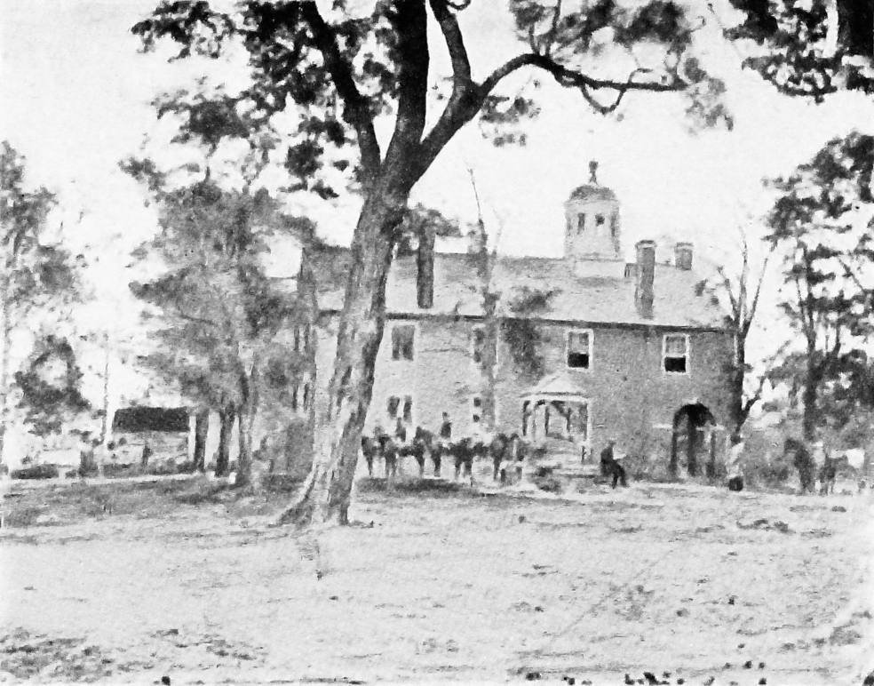
FAIRFAX COURT HOUSE IN 1861
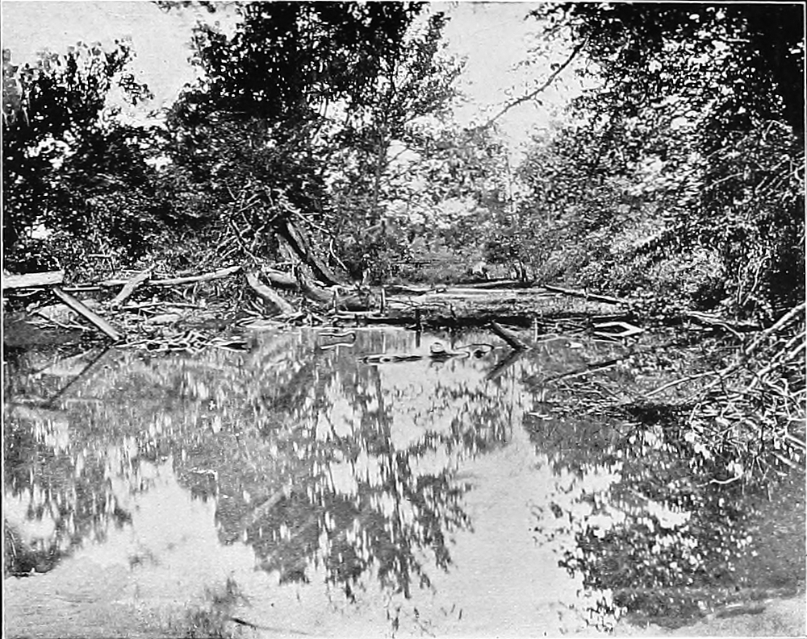
STREAM OF BULL RUN IN 1861
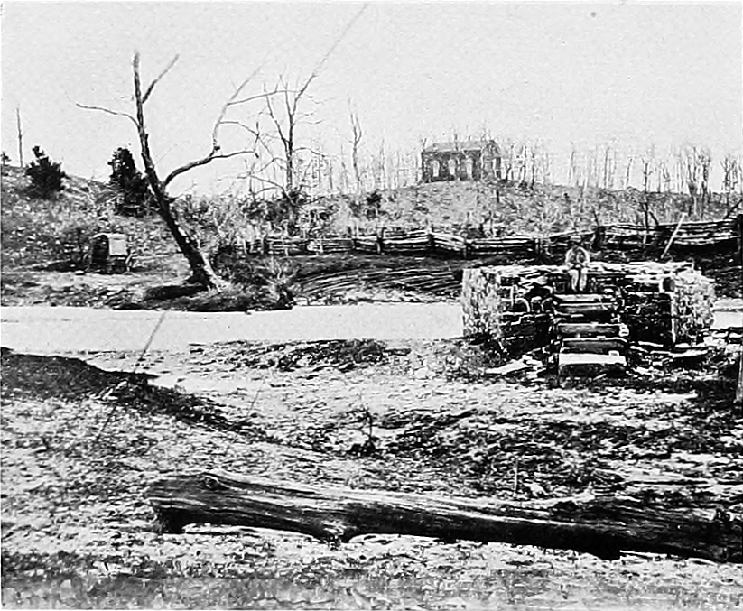
SUDLEY'S CHURCH AND FORD AT BULL RUN
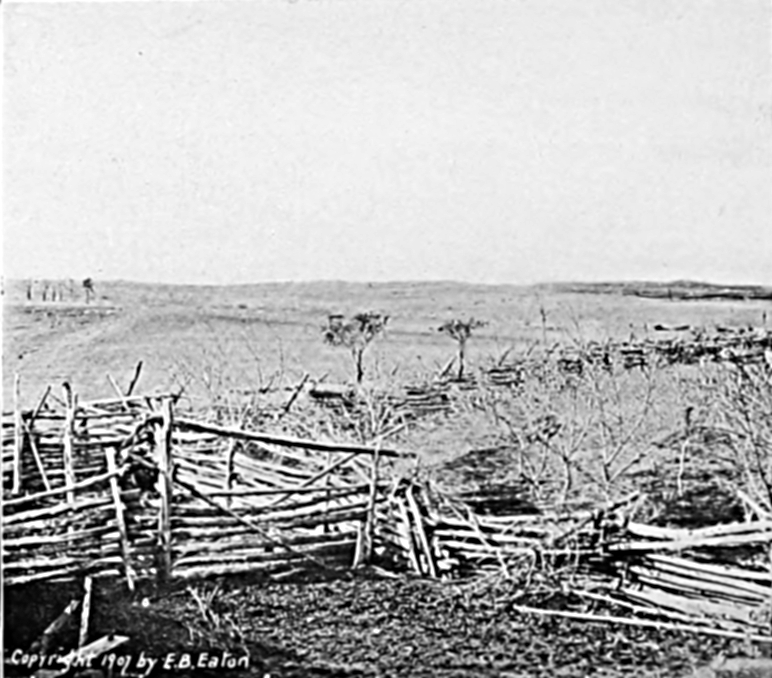
BATTLEFIELD OF BULL RUN IN 1861
[pg 26]
THE man behind the gun risks
his life on his faith in the ammunition
train to keep him
supplied with powder and
shell. An old warrior estimates that
an army of 60,000 men, comprising a
fair average of infantry, cavalry, artillery
and engineers must be provided
with no less than 18,000,000 ball cartridges
for small arms, rifles, muskets,
carbines and pistols for six months'
operation. In the field an infantry
soldier usually carries about sixty
rounds. The lives of the men depend
upon the promptness of the ammunition
trains. To supply these 60,000
men requires one thousand ammunition
wagons and 3,600 horses. The
wagon constructed for this service
will carry 20,000 rounds of small-arm
munition. The cartridges are packed
in boxes and the wagon is generally
drawn by four to six horses or mules.
Several wagons are organized into an
"equipment," moving under the
charge of an artillery, and there are
several such "equipments" for an
army of this magnitude, one for each
division of infantry, a small portion
for the cavalry, and the rest in reserve.
Early in the Civil War a
chemist suggested to General McClellan
that he could throw shells from a
mortar that would discharge streams
of fire "most fearfully in all directions."
McClellan replied: "Such
means of destruction are hardly within
the category of civilized warfare.
I could not recommend their employment
until we have exhausted the
ordinary means of warfare." The
Government preferred to depend
largely upon these silent, ghost-like
wagons, with their deadly loads of
millions of cartridges, pressing toward
the battle lines throughout the conflict.
This picture shows an ammunition
train of the Third Division Cavalry
Corps in motion with the
army encamped on the distant hills.
It is one of Brady's best negatives.
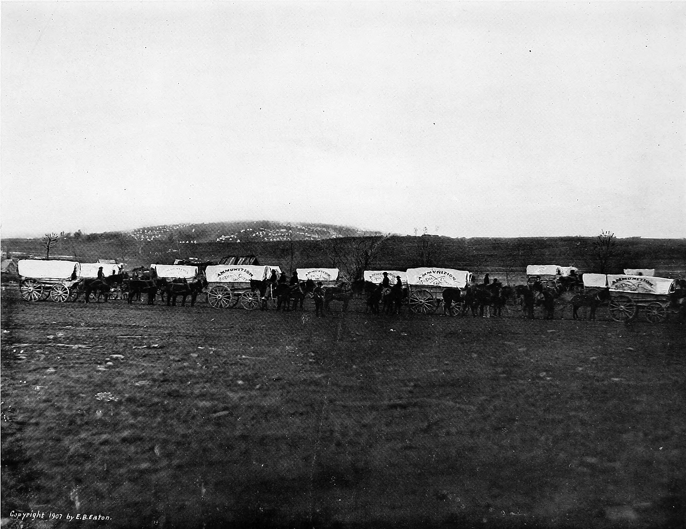
PHOTOGRAPH TAKEN AS AMMUNITION TRAINS WERE MOVING
[pg 27]
SLAVE pens were common institutions
in the days of negro
bondage in America. The
system had developed from
the early days of colonization and was
for many generations a legitimate
occupation throughout the country.
So many rumors, false and true, were
told of the "pens" that Brady schemed
to secure photographs of some of
them. Early in 1861 he succeeded
in gaining entrance to one of the typical
institutions in Alexandria, Virginia.
The results are here shown.
The cell rooms with their iron-barred
doors and small cage windows relate
their own story. While they were
installed by the larger slave traders
they were wholly unknown on most
of the old Southern plantations. A
picture is also here shown of the exterior
of the "slave pen" kept at Alexandria
with the inscription over the
door, "Price, Birch & Co., Dealers in
Slaves." This shows the proportions
to which the system had grown
in the greatest republic in the world.
Enormous fortunes were being accumulated
by some dealers who had
thrown aside sentiment and humanity
and were herding black men for
the market. With the outbreak of
the war many of the slaves sought
the protection of the Union Army,
while others, who had kind masters,
were willing to remain on the plantations.
Mr. Brady secured several
photographs of these typical slave
groups. The one here shown is a
party of "contrabands" that had fled
to the Union lines. Another familiar
scene in 1861 was the pilgrimage
of poor whites to the Union ranks.
When the troops passed through
many of the mountain villages, these
frightened white sympathizers would
hastily gather their scanty belongings,
pile them onto an old wagon, desert
their homes and follow the
army, to be passed on from line to
line until they reached the North.
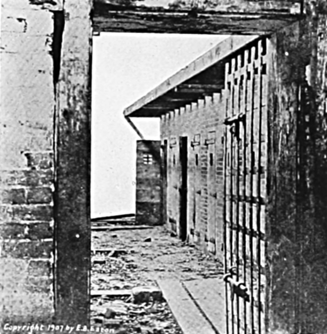
IRON-BARRED CELLS IN AN OLD SLAVE PEN
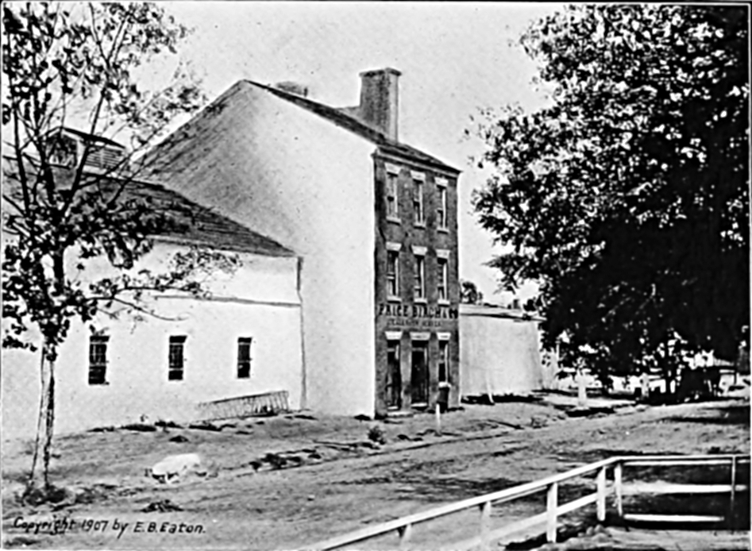
SLAVE DEALERS' HEADQUARTERS IN ALEXANDRIA, VIRGINIA

REFUGEES LEAVING THE OLD HOMESTEAD
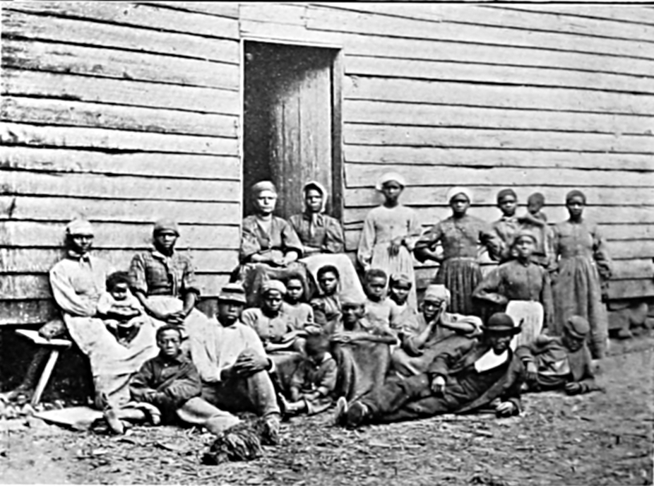
CONTRABANDS IN WAKE OF THE UNION ARMY
[pg 28]
ONE of the greatest secret
forces in the Civil War was
the electric telegraph. Wires
were uncoiled as the army
moved on its march toward the enemy
and over them passed the hurried
words that frequently saved hundreds
and thousands of lives. While England
was the first to experiment with
the new science on the battlefield, the
war in America demonstrated its permanent
importance in the maneuvers
of armies. Brady was much interested
in the development of telegraphy
as a factor in war and never
missed any opportunity to take a photograph
of the field telegraph corps
as they passed him on marches. This
picture shows one of the construction
corps in operation. The wires were
laid as each column advanced, keeping
the General in command fully informed
of every movement and enabling
him to communicate from his
headquarters in the rear of the army
with his officers in charge of the
wings. The military construction
corps laid and took up these wires as
fast as an infantry regiment marches.
An instant's intelligence may cause a
charge, a flank or a retreat. By connecting
with the semi-permanent lines
strung through woods and fields, into
which the enemy would have little
reason to venture unless aroused by
suspicion, the commander on the field
is kept informed of the transportation
of troops and supplies and the
approach of reinforcements. It was
also the duty of the military construction
corps to seize all wires discovered
by them and to utilize them for
their own army or tear them down.
Constant watch is kept for these
secret lines. Great care must also
be taken that false messages do not
pass over them. Their destruction
is generally left to the cavalry.
The heavy construction wagons, carrying
many miles of telegraph wire
in coils, were drawn by four horses.
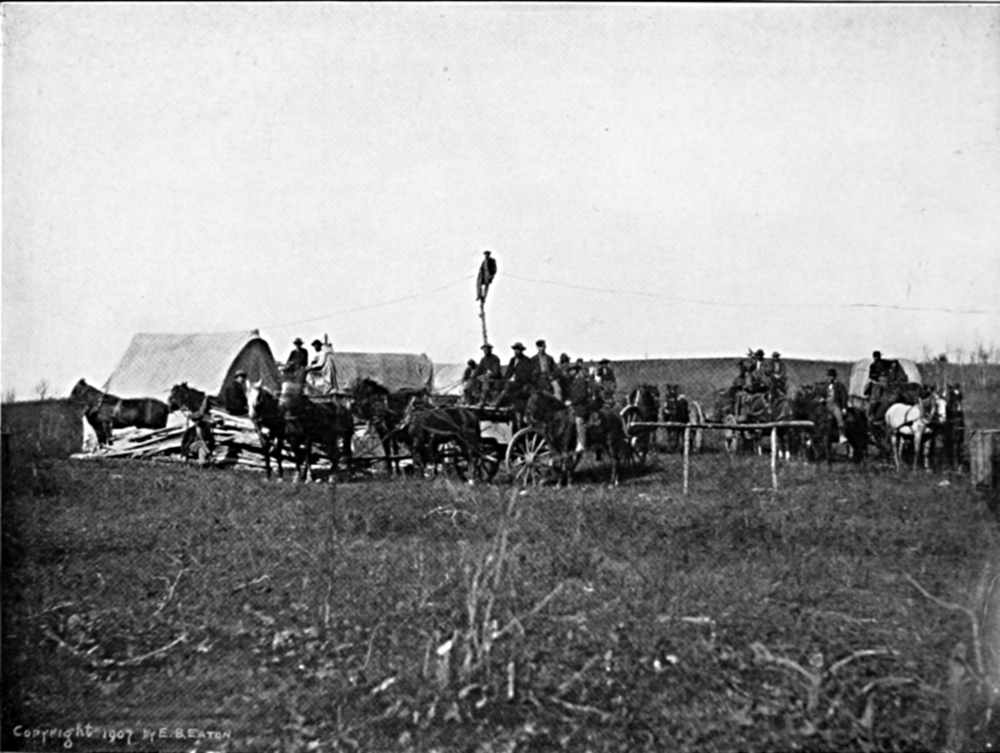
PHOTOGRAPH TAKEN AS MILITARY TELEGRAPH WAS BEING STRUNG
[pg 29]
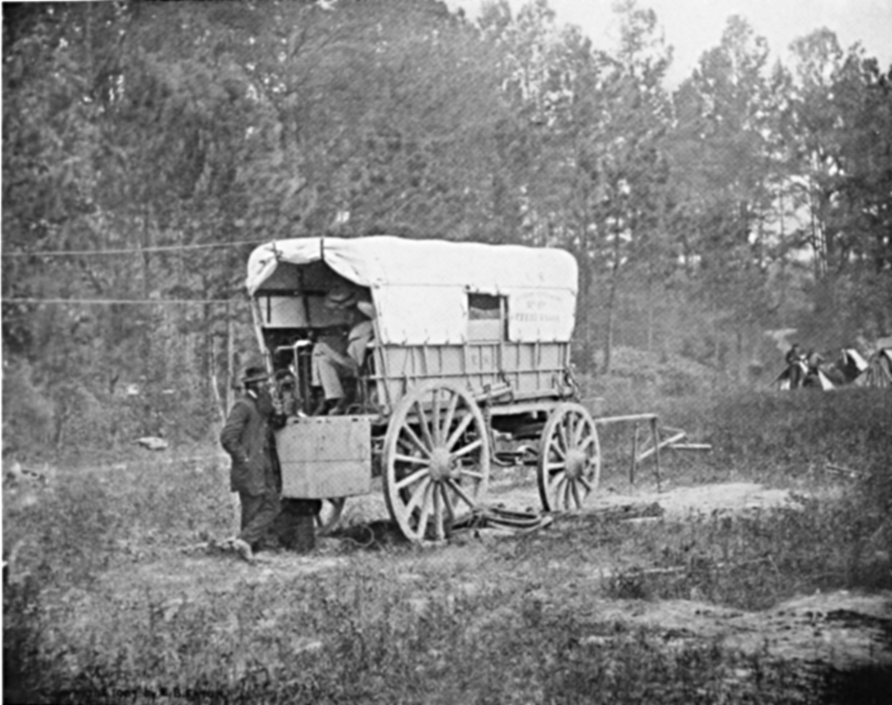
PHOTOGRAPH TAKEN AS FIELD TELEGRAPH WAGON WAS SENDING MESSAGE
TELEGRAPH stations in wagons
were not uncommon
sights to the soldiers between
the years of 1861 to 1865.
Great responsibility rested upon the
operators who halted alongside the
road to send a message back to headquarters
that might change the whole
course of events and defeat into victory.
The operators in the Civil War
stood by their posts like sentinels.
The confidential communications of
commanders and the movements of
the morrow were intrusted with them,
but not in a single instance is one
known to have proven false to that
trust. It was part of the duty of the
telegraph service to take messages
from the scouts sent out to ascertain
the resources of the country, the advantages
of certain routes, and the
general lay of the land. Every click
of the instrument transmitted secrets
upon which might depend the rise or
fall of the nation. These field telegraph
wagons, drawn by horses, carried
the instruments and batteries
which had but recently been invented
by an American scientist, and by
which an electric spark shot messages
through wire in the fraction of a second's
time. The War of 1861 proved
for all time the advantages of this
new science. It left the signal corps
to attend to only short-range communications
and lightened the duties of
mounted orderlies, conveying messages
in a flash of electricity that had
hitherto taken a day's reckless riding
on horseback. While it saved the
orderlies from many hazardous journeys
there were many more where the
telegraph wires did not penetrate and
dependence was still placed on the
dashing mounted messenger. The
chief service of the electric telegraph
was to maintain communication between
corps and divisions and headquarters.
It was also utilized in some
of the brilliant strokes of the Secret
Service in forestalling deep-laid plots.
[pg 30]
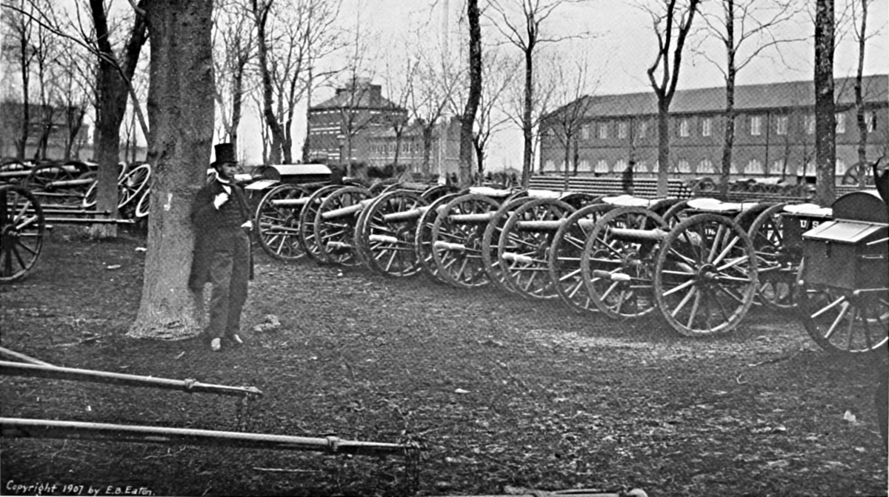
PHOTOGRAPH TAKEN IN AN ARSENAL AT WASHINGTON
THE downfall of Washington in the first
days of the war would have meant the
downfall of the Republic. What
changes this would have wrought in the
history of the Western Continent can never be
known. Its probabilities were such that the
Treasury Building was guarded by howitzers,
the Halls of Congress were occupied by soldiers,
the Capitol building became a garrisoned citadel.
Lincoln was virtually imprisoned by guards in
the White House, and the streets were patrolled
by armed men. Troops were quartered in the
Patent Building. The basement galleries of the
Capitol were converted into store-rooms for barrels
of pork, beef and rations for a long siege.
The vaults under the broad terrace on the western
front were turned into bakeries where sixteen
thousand loaves of bread were baked every
day. The chimneys of the ovens pierced the terrace
and smoke poured out in dense black clouds
like a smoldering volcano. Ammunition and
artillery were held in readiness to answer a moment's
call. So intense was the excitement that
one of the generals in command at the Government
arsenal exclaimed: "We are now in such a
state that a dog-fight might cause the gutters of
the Capital to run with blood." There was the
clank of cavalry on the pavements, the tramp,
tramp of regiments of men whose polished muskets
flashed in the sunlight as they moved over
Long Bridge. Cavalcades of teams and white-topped
army wagons carrying provisions, munitions
of war and baggage followed in weird procession.
Brady was then in Washington negotiating
with the Government and the Secret Service
for permission to follow the armies with his
cameras. This is one of the pictures that he
took at that time, showing the artillery and
cannon-balls parked at the National Capital.
[pg 31]
NO one, except the men who did
it, can ever know the tremendous
difficulties overcome
in preparing an army
for warfare. The transformation of
a nation of peaceful home-lovers to a
battle-thirsty, fighting populace is
almost beyond human understanding.
To arm them instantly with the implements
of war is a problem hardly conceivable.
When the first guns of the
Civil War were belching their death-fire,
all the man-killing weapons
known to civilization were being hurried
to the front. There were flint
and percussion and long-range muskets
and rifles; bayonets and cavalry
sabers; field and siege cannon; mortars
and sea-coast howitzers; projectiles,
shot, shell, grape and canister;
powder, balls, strap and buckshot;
minie balls and percussion caps;
fuses, wads and grenades; columbiads
and navy carronades; lances, pistols
and revolvers; heavy ordnance and
carriages. Europe was called upon
to send its explosives across the sea.
Caves were opened for the mining of
nitre, lead and sulphur. Factories
were run day and night for the manufacture
of saltpeter. On land and
sea the greatest activity prevailed.
This photograph was taken on the
twenty-sixth day of August in 1861,
when the ammunition schooners,
accompanying the fleet from Fortress
Monroe on the expedition to Fort
Hatteras, N. C., were passing through
Hampton Roads. The fleet, sailing
under sealed orders, in command of
Flag Officer Silas H. Stringham,
arrived before sunset. Two days
later, in conjunction with the troops
of the 9th, 20th, and 99th New York
Volunteers, under General Benjamin
F. Butler, it forced the surrender
of Fort Hatteras without the loss
of a man and took seven hundred
prisoners. The Confederates lost
about fifty killed and wounded.
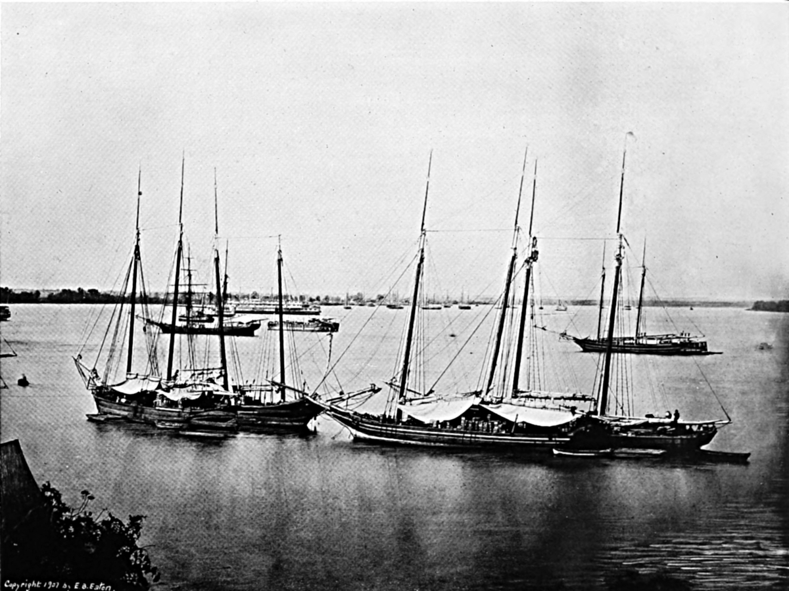
PHOTOGRAPH TAKEN IN HAMPTON ROADS—AMMUNITION SCHOONERS
[pg 32]
SPIES lived in the White House according to the rumors in 1861, and every council of the Administration
was reported to the enemy. Whether this is true or not has never been verified,
but by some mysterious channel the Administration's plans invariably fell into the hands of the
Confederates. One of the first instances of this is the expedition to Port Royal on the South
Carolina coast. This was one of the finest harbors along the South Atlantic and it was planned to
take it from the Confederates and use it as a base for future Union operations. The most careful
preparations were laid for two months. On the twenty-ninth of October, in 1861, fifty vessels under
sealed orders with secret destination sailed from Hampton Roads. The fleet had hardly left the
range of Fortress Monroe when the full details of its sealed orders reached the Confederates at Port
Royal. Off Cape Hatteras it ran into a severe gale; one transport was completely wrecked, with a
loss of seven lives; another transport threw over her cargo; a storeship went down in the storm, and
a gunboat was saved only by throwing her broadside battery into the sea. The fleet was so scattered
that when the storm cleared there was only a single gunboat in sight of the flagship. Undismayed
by the misfortune, within a few hours the vessels that had withstood the tremendous gale were moving
on to Port Royal. Several frigates that had been blockading Charleston Harbor joined them and
on the morning of the seventh of November the attack was made on Fort Walker at Hilton Head and
Fort Beauregard on St. Helena Island. The guns of the fleet wrought dreadful havoc. The stream
of fire was more than the entrenched men had expected or could endure. The troops fled across
Hilton Head in panic from Fort Walker. When the commander at Fort Beauregard looked upon
the fleeing soldiers he abandoned his position and joined the retreat. A flag of truce was sent ashore
but there was no one to receive it, and soon after two o'clock the National colors were floating over
the first permanent foothold of the Government in South Carolina, a Confederate stronghold.
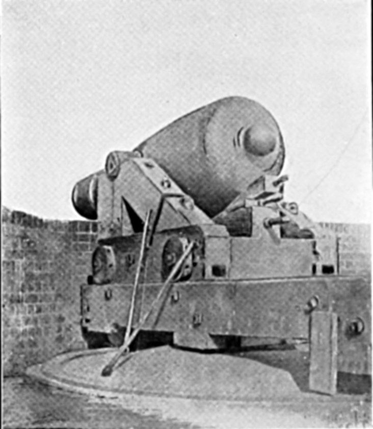
GUN IN BATTERY AT PORT ROYAL, S. C., 1861
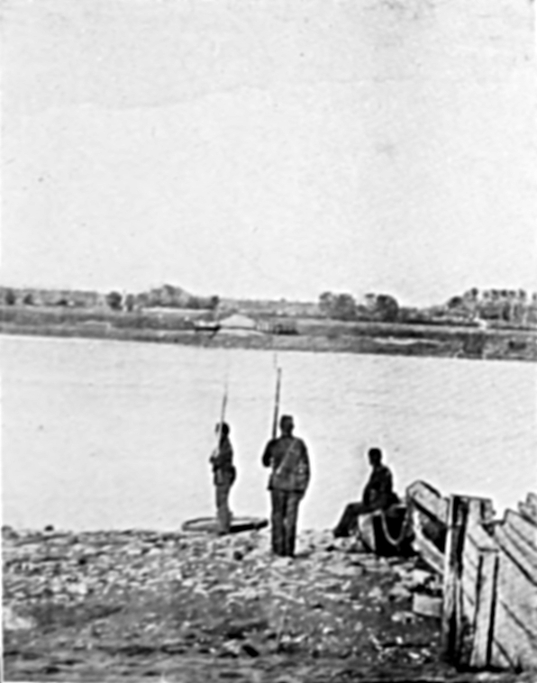
COOSAW FERRY, PORT ROYAL ISLAND, S. C.
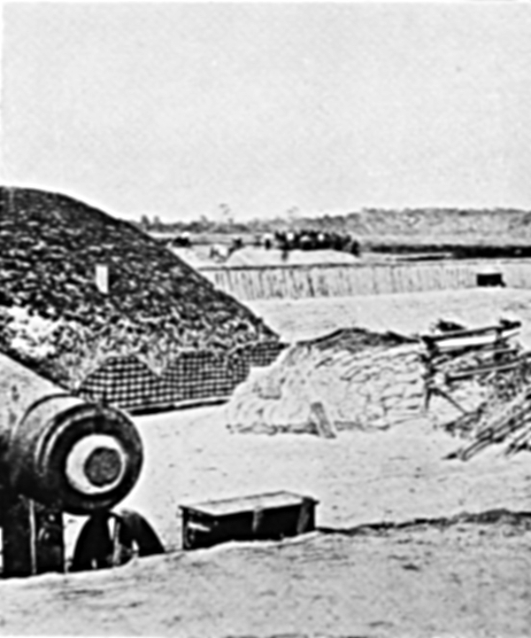
FORT BEAUREGARD, BAY POINT, S. C., 1861
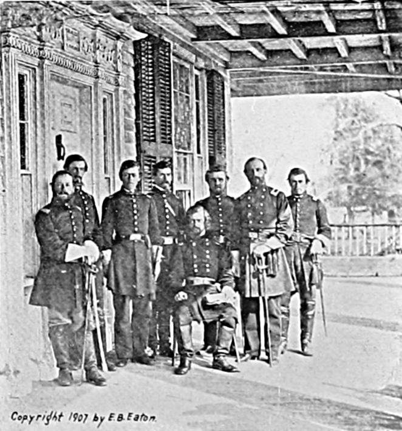
GENERAL ISAAC I. STEVENS' STAFF, BEAUFORT, S. C.
[pg 33]
THE AMERICAN PEOPLE, in their one hundred
and twenty years of "Life, Liberty and
the Pursuit of Happiness," have had but three
wars with the outside world. They have enjoyed a greater
immunity from armed encounter than any of their neighbors.
Other than the grievous struggle which we have
had with our own people, it may be fairly said that we
have been blessed by Peace.
As if by magic the hundreds of thousands of volunteers
were armed with the munitions of War and marched
to the battle-front. The great Lincoln, under the constitutional
provisions, was commander-in-chief of the citizen
armies, and worked in conjunction with his War Department
at Washington. The military genius of a trained
fighter was needed and from the outbreak of the War until
November 6, 1861, Brevet-Lieutenant Winfield Scott
was in command; then came Major-General George B.
McClellan, a man of great caution, until March 11, 1862.
From that time until July 12, 1862, the Government was
without a general commander until Major-General Henry
W. Halleck took control and continued till March 12,
1864. It was then that Lieutenant-General Ulysses S.
Grant was called upon to end the struggle. Under
these military leaders the great fighting force of volunteers
was organized into armies. The first of these patriot
legions was the Army of the Potomac.
Army of the Potomac was called into existence in July,
1861, and was organized by Major-General George B.
McClellan, its first commander; November 5, 1862,
Major-General A. E. Burnside took command of it; January
25, 1863, Major-General Joe Hooker was placed in
command, and June 27, 1863, Major-General George G.
Meade succeeded him.
Army of Virginia was organized August 12, 1862.
The forces under Major-Generals Fremont, Banks, and
McDowell, including the troops then under Brigadier-General
Sturgis at Washington, were consolidated under
the command of Major-General John Pope; and in the
first part of September, 1862, the troops forming this
army were transferred to other organizations, and the army
as such discontinued.
Army of the Ohio became a power, November 9,
1861. General Don Carlos Buell assumed command of
the Department of the Ohio. The troops serving in this
department were organized by him as the Army of the
Ohio, General Buell remaining in command until October
30, 1862, when he was succeeded by General W. S.
Rosecranz. This Army of the Ohio became, at the same
time, the Army of the Cumberland. A new Department
of the Ohio having been created, Major-General H. G.
Wright was assigned to the command thereof; he was
succeeded by Major-General Burnside, who was relieved
by Major-General J. G. Foster of the command of the
Department and Army. Major-General J. M. Schofield
took command January 28, 1864, and January 17, 1865,
the Department was merged into the Department of the
Cumberland.
Army of the Cumberland developed from the Army
of the Ohio, commanded by General Don Carlos Buell,
October 24, 1862, and was placed under the command
of Major-General W. S. Rosecranz; it was also organized
at the same time as the Fourteenth Corps. In January,
1863, it was divided into three corps, the Fourteenth,
Twentieth and Twenty-first; in September, 1863, the
Twentieth and Twenty-first Corps were consolidated into
the Fourth Corps. October, 1863, General George H.
Thomas took command of the army, and the Eleventh
and Twelfth Corps were added to it. In January, 1864,
the Eleventh and Twelfth Corps were consolidated and
known as the Twentieth Corps.
Army of the Tennessee was originally the Army of
the District of Western Tennessee, fighting as such at
Shiloh, Tennessee. It became the Army of the Tennessee
upon the concentration of troops at Pittsburg Landing,
under General Halleck; and when the Department of
the Tennessee was formed, October 16, 1862, the troops
serving therein were placed under the command of Major-General
U. S. Grant. October 24, 1862, the troops in
this Department were organized as the Thirteenth Corps;
December 18, 1862, they were divided into the Thirteenth,
Fifteenth, Sixteenth and Seventeenth Corps.
October 27, 1863, Major-General William T. Sherman
was appointed to the command of this army; March 12,
1864, Major-General J. B. McPherson succeeded him;
July 30, 1864, McPherson having been killed, Major-General
O. O. Howard was placed in command, and
May 19, 1865, Major-General John A. Logan succeeded
him.
Army of the Mississippi began operations on the
Mississippi River in Spring, 1862; before Corinth, Mississippi,
in May, 1862; Iuka and Corinth, Mississippi, in
September and October, 1862.
Army of the Gulf operated at Siege of Port Hudson,
Louisiana, May, June, and July, 1863.
Army of the James consisted of the Tenth and Eighteenth
Corps and Cavalry, Major-General Butler commanding
and operating in conjunction with Army of the
Potomac.
Army of West Virginia was active at Cloyd's Mountain,
May 9 and 10, 1864.
Army of the Middle Military Division operated at
Opepuan and Cedar Creek, September and October, 1864.
During the year 1862, Brady's men followed these
legions. Both armies were maneuvering to strike a
decisive blow at the National Capital of either foe—one
aiming at Washington and the other at Richmond. The
scenes enacted in these campaigns are remarkable in
military strategy, and Brady's men succeeded in perpetuating
nearly every important event.
Cameras were also hurried to the far South and West
where great leaders with great soldiers were doing great
things. Several of these cameras arrived in time to bear
witness to the bravery of the men of the Mississippi, who
were waging battle along the greatest waterway in North
America—the stronghold of the Confederacy and the
control of the inland commerce of the Continent.
[pg 34]
THE first naval conflicts of the
Civil War took place early in
1862. On the ninth of
March, the revolving turret
iron-clad "Monitor" met the enormous
Confederate ram, "Merrimac,"
in Hampton Roads. Both powerful
vessels forced the attack and stood
under the fiercest bombardment only
to again invite assault. After four
hours of the nerviest fighting that the
seas had ever known, the adversaries
withdrew, undefeated, to repair their
respective damages. Brady secured
several photographs of these vessels
immediately after the engagement.
One of them on this page shows part
of the deck and turret of the "Monitor;"
near the port-hole can be seen
the dents made by the heavy steel-pointed
shot from the guns of the
"Merrimac." While the news of this
conflict was amazing even old Europe,
naval operations along the
American coast were creating consternation.
On the first anniversary
of the Fall of Fort Sumter the National
navy, in an attempt to sweep
the Confederates from the Atlantic
coast, bombarded Fort Pulaski in
Georgia. All day long the bombardment
was terrific and firing did
not cease until nightfall, when five
of the guns of the fortress were silent.
All night long four of Gillmore's
guns fired at intervals of fifteen or
twenty minutes and at daybreak the
onslaught became furious. At two
in the afternoon a white flag appeared
from its walls. The spoils of victory
were the fort, forty-seven heavy
guns, a large supply of fixed ammunition,
forty thousand pounds of gun
powder, a large quantity of commissary
stores; three hundred prisoners
and the port of Savannah was sealed
against blockade runners—all this
with the loss of but one killed on each
side. Brady seems to have had unusual
foresight. He was nearly
always in the right place at the
right time and these negatives picture
the ruins of Fort Pulaski.
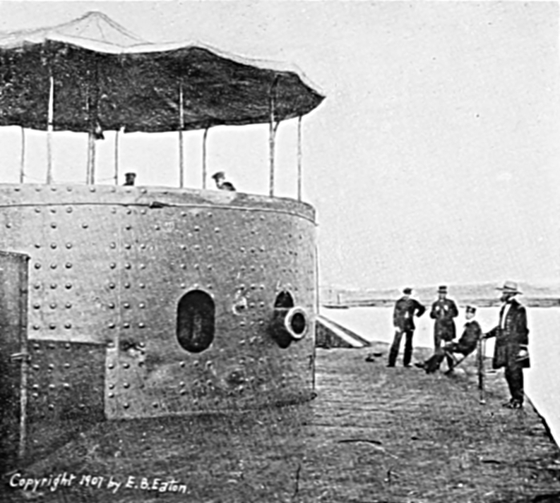
ORIGINAL "MONITOR" AFTER HER FIGHT WITH THE "MERRIMAC"
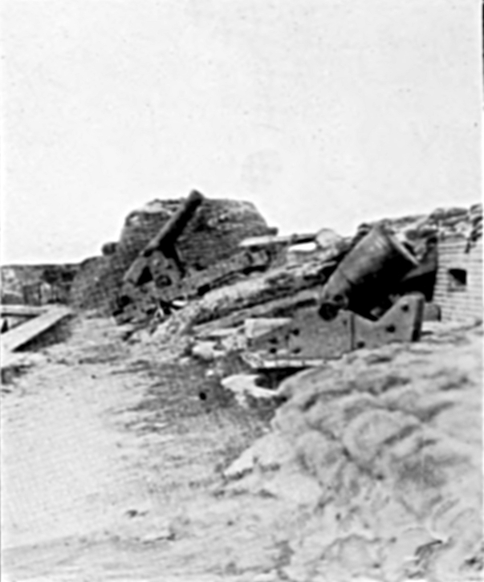
RUINS OF FORT PULASKI, GA., APRIL, 1862
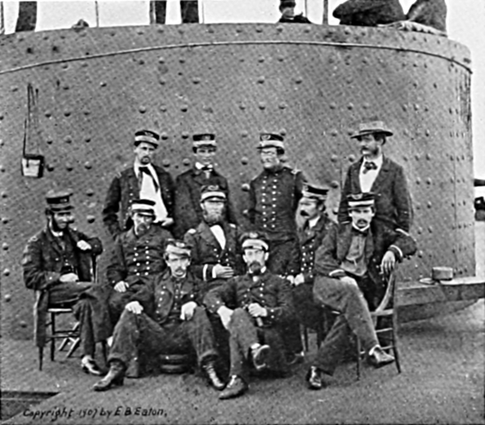
OFFICERS ON BOARD "MONITOR," JULY 9, 1862, AT HAMPTON ROADS
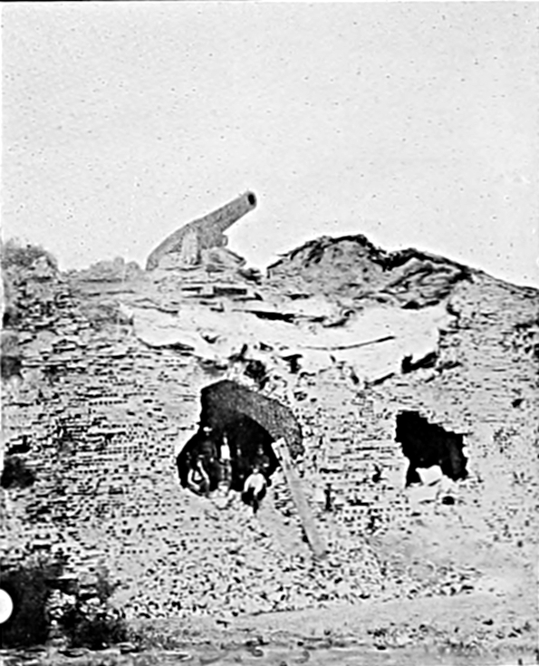
THE BREACHFORT AT PULASKI AFTER BATTLE
[pg 35]
The most powerful fleet that had ever sailed under the American Flag
entered the deltas of the Mississippi River on the eighteenth day of April,
in 1862, to force the surrender of the largest and richest city of the Confederacy.
The strategic value of New Orleans was greater than that of
any other point in the Southern States. Its export trade in cotton and sugar was
larger than any city in the world. The great fleet had sailed from Hampton
Roads on the second of February under the command of a man sixty years old,
who was born in Tennessee, but offered himself to the Union cause—David G.
Farragut. This photograph was taken as he stood on the deck of his flagship
"Hartford." From the firing of the first gun on New Orleans a rain of iron fell
upon the forts. During the first twenty-four hours Captain David Porter's gunners
dropped fifteen hundred bombs in and around the forts. The night was hideous
with fiery meteors and the day dense with smoke and flame. The roar of the
artillery was deafening and shattered the windows in the houses for many miles.
For six days and nights the terrific bombardment raged. When Farragut
attempted to run the gauntlet to the metropolis of the gulf he swept the shores
with a continuous fire of twenty-six thousand shells—a million and a half pounds
of metal. The Confederates pushed a fire raft down the river to the daring
admiral's flagship and the "Hartford" burst into flame. While one part of the
crew fought the fire, the others poured metal from her guns onto the enemy.
On the twenty-sixth day of April, Farragut entered the harbor to New
Orleans and on the twenty-ninth unfurled the Stars and Stripes in the city.
WITH flags flying and bands playing "The Star Spangled
Banner," the troops from the transports, which
brought fifteen thousand men under command of
General Benjamin F. Butler, marched into New
Orleans on the first day of May in 1862. Crowds of men and
women surged the sidewalks cursing the Yankees and hurrahing
for Beauregard, Bull Run and Shiloh. When Butler established
military government over New Orleans the city had a population
of about 140,000. About 13,000 of these were slaves. Nearly
30,000 of the best citizenship were fighting in the Confederate
ranks. The city was on the verge of starvation. More than a
third of the population had no money and no means of earning it.
Prices rose enormously. Butler contributed a thousand dollars
of his own money to relieve the suffering. Supplies were hurried
from all sources and sold under Butler's orders at cost to
those who had funds. The price of flour fell from sixty to
twenty-four dollars a barrel. Butler proved to be a great organizer.
The people were set to work cleaning and improving their
city. His administration was always humane. The execution
of a gambler who tore down the American Flag from the mint,
and the condemning of a gang of thugs was his only show of the
iron hand. This photograph shows Major-General Butler, with his
staff, as he appeared in his fighting days. When leaving Lincoln
and his cabinet to start on his expedition, Butler exclaimed:
"Good-bye, Mr. President; we shall take New Orleans or you
will never see me again!" With Farragut he kept his promise.
[pg 36]
THE heaviest battery of artillery
ever mounted in the world,
up to 1862, was before Yorktown
when the Union army
was maneuvering to enter Richmond
from the south. The intention was to
shell the Confederates out of a
strongly intrenched position by overwhelming
fire. This photograph was
taken inside of the fortification that
threatened to annihilate an entire
army. In it were huge demons of
death—that were hitherto unknown
in warfare—capable of throwing 900
pounds of iron at one broadside into
the lines of the enemy. There were
five 100-pounder and two 200-pounder
Parrot rifled cannon. The topography
of the country would not admit of
engagements with unfortified lines.
The Confederates concentrated their
forces in the woods. The Union
commanders at first despised picks
and shovels. They insisted that all
defenses except those naturally available
were beneath a soldier's dignity.
The battles of the East and West
were being fought on open ground.
The campaign against Richmond,
however, proved the necessity of defenses
to protect the lines from unexpected
attacks from the hidden enemy.
The Confederates became uneasy
over this shift of fighting front
and the magnitude of the preparations
at Yorktown so astounded them
that they abandoned the position. On
May third the great battery threw a
charge into the Confederate stronghold.
It was intended to open the
bombardment on the following morning,
but at dawn it was found that the
Confederates had evacuated. The
heavy artillery was known as Battery
No. 1, and manned by Company
B, First Connecticut Heavy Artillery.
It became a matter of discussion
throughout the world. Military
attachés from many foreign powers
visited the breastworks to report
the situation to their governments.
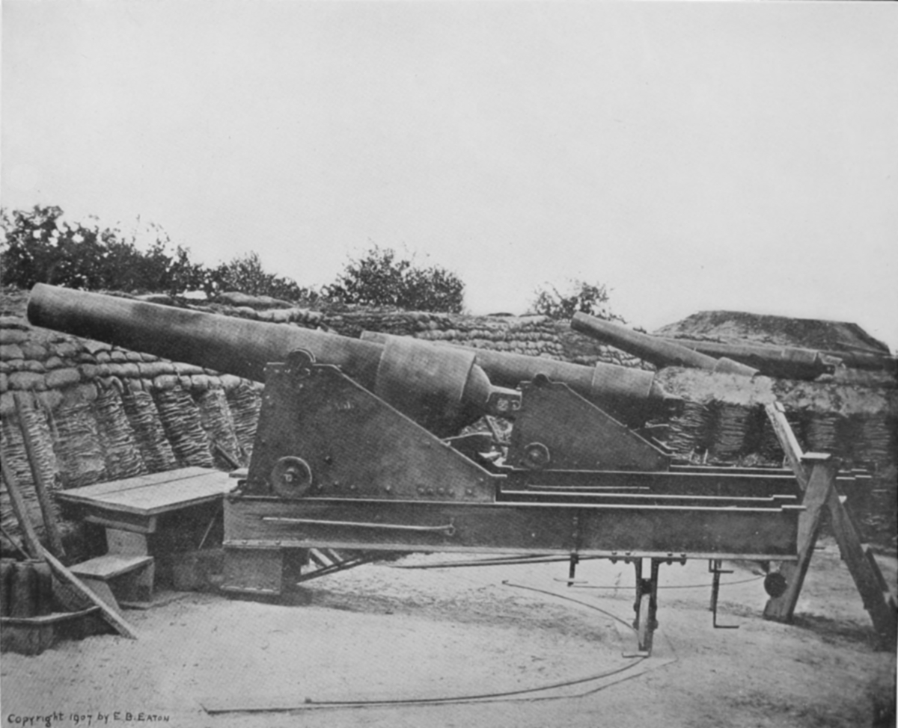
PHOTOGRAPH TAKEN BEHIND THE BREASTWORKS AT YORKTOWN, VA., IN 1862
[pg 37]
AT sunrise of the fourth of May,
in 1862, the Union troops entered
the deserted Confederate
works at Yorktown and
found seventy-one heavy guns, a
large number of tents, with ammunition
and materials of war. The
works were found to be of scientific
construction and great strength and
undoubtedly could have withstood
the heavy fire from the heaviest battery
in the world. This photograph
shows the remains of one of the heavy
Confederate guns blown into atoms
rather than leave it to the Union
forces. Fragments of the gun strew
the ground, together with shell and
grape-shot. The soldiers seen in
works are Union Zouaves. The Confederate
forces of 50,000 men under
Magruder were pursued by McClellan's
85,000 Union soldiers to Williamsburg,
after which the enemy retired
unmolested behind the lines of
Richmond. While Brady was taking
his photographs at Yorktown, he met
the distinguished Prince de Joinville
and his royal companions of the
House of Orleans, who, for pure love
of adventure, had come from France
and were following the Army of the
Potomac as aides-de-camp, being permitted
to serve without taking the
oath of allegiance, and without pay.
The noblemen were eating dinner in
camp when Brady secured this picture.
A few days later Brady met
the Battery C, 3rd U.S. Flying Artillery,
on the road to Fair Oaks and
secured a remarkable photograph.
Another picture in this campaign is
the ruins of the Norfolk navy-yard.
It had been the chief naval depot of
the Confederates, but on the tenth of
May, 1862, General John E. Wool,
with 5,000 men, entered the city. The
navy-yard, with its workshops, storehouses
and other buildings had been
wrecked, but two hundred cannon fell
into the hands of the Union forces.
The Confederate ironclad "Merrimac"
tried to escape up the James,
but grounded and was blown up.
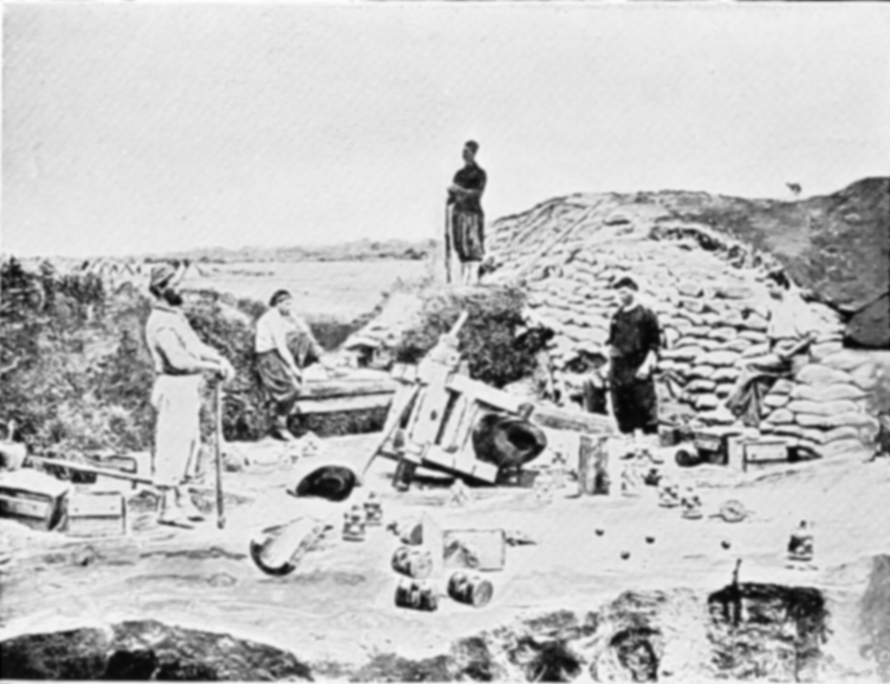
CONFEDERATE WORKS AFTER EVACUATION OF YORKTOWN
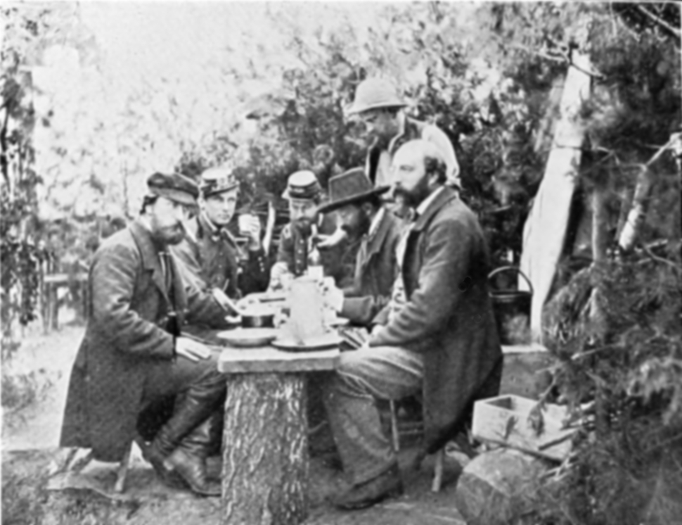
ADVENTUROUS EUROPEAN NOBLEMEN WITH ARMY OF THE POTOMAC IN 1862
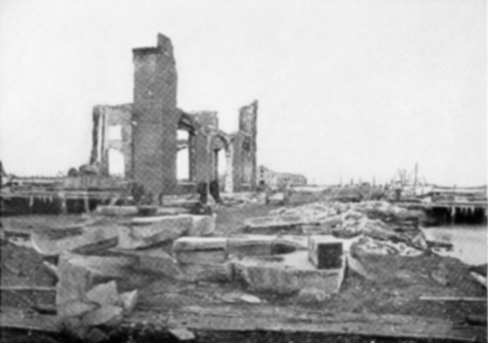
RUINS OF NORFOLK NAVY YARD IN 1862
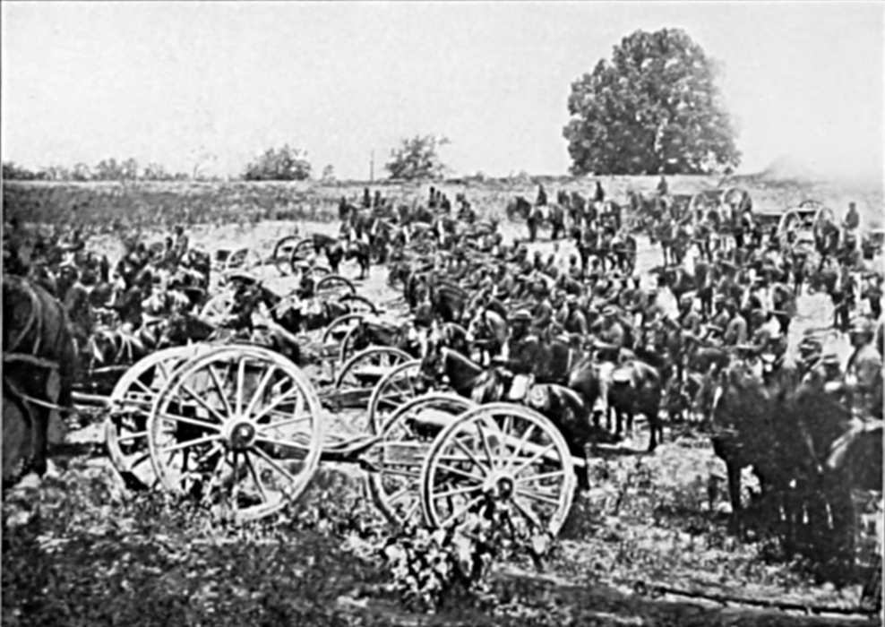
FLYING ARTILLERY ON ROAD TO FAIR OAKS
[pg 38]
AFTER the evacuation of Yorktown
on the fourth of May,
in 1862, this picture was
taken. It shows the generals
of the Army of the Potomac in
full uniforms after the hard siege,
and at the very time when they were
maneuvering to drive back the Confederates,
forcing them to stand in
defense of the Capital of the Confederacy—Richmond.
It was through
the personal friendship of Major-General
McClellan that Brady was
allowed to take this rare photograph.
The warriors lined up in front of the
camera on the field at Yorktown. In
the center is General McClellan—a
man in whose veins flowed the blood
of Scotch cautiousness—"Be sure
you're right, then go ahead!" He
was but thirty-six years of age when
he held the great army under his control.
From boyhood he had been a
military tactician. When twenty
years old he was graduated from
West Point, standing second in his
class, and distinguished himself for
gallantry in the Mexican War. Six
years before the outbreak of the Civil
War, when only thirty years old,
McClellan was in Crimea and two
years later he submitted his report to
the Government and resigned from
the army to become vice-president
and chief engineer of the Illinois
Central Railroad. In 1860, he was
general superintendent of the Ohio
and Mississippi Railroad. When the
call swept across the continent for
troops to preserve the Nation, the old
war spirit was aroused and McClellan
was one of the first to respond.
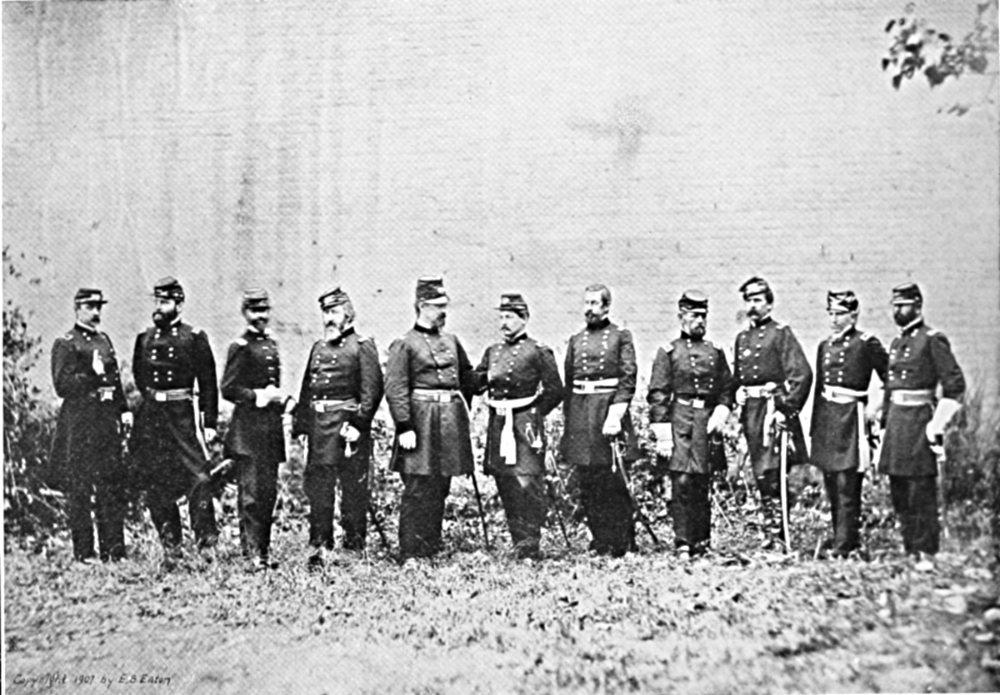
PHOTOGRAPH TAKEN AT YORKTOWN OF MCCLELLAN AND HIS OFFICERS IN 1862
[pg 39]
BRADY'S cameras took an
active part in the campaign
about Richmond, the Capital
of the Confederacy. Four
of the old negatives are here reproduced.
The first is a view of
light field-works on the Chickahominy,
near Fair Oaks. The men are
at the guns ready to receive the attack
and the infantry are hurrying into
line on the right and left of the battery.
The second photograph is
where the battle raged hottest in
June, 1862. In the rear of the battery
of howitzers in the foreground,
is the left of Sickle's brigade in line
of battle. Near the twin houses,
seen still further in the rear, the bodies
of over 400 Union soldiers were
buried after the battle. The Confederate
loss was 7,997 men killed,
wounded and missing; the Union
loss, 5,739. The headquarters of the
army, at the opening of the seven
days' fight, was at Savage Station,
where vast amounts of rations,
forage, ammunition and hospital
stores were distributed for the use of
the troops. This station fell into the
hands of the enemy together with
many of our sick and wounded soldiers
during the seven days' battles.
One of these views gives a glimpse of
the field hospital at Savage Station
during the battle. The wounded were
brought in by the hundreds and laid
on the ground and the surgeons may
be seen leaning over them. During
the Peninsula Campaign in 1862, the
army balloon was a valuable aid in
the signal service. This view shows
Professor T. S. C. Lowe in his balloon
watching the battle of Fair
Oaks. He can easily discern the
movements of the enemy's troops and
give warning to the generals. The
balloon rises to the desired elevation
and is anchored to a tree.
ARTILLERY IN LINE AT FAIR OAKS IN 1862
BATTERY OF HOWITZERS IN BATTLE OF FAIR OAKS
WATCHING BATTLE OF FAIR OAKS FROM BALLOON
THE WOUNDED AT SAVAGE STATION AFTER THE BATTLE
[pg 40]
DESPERATE battles day and
night crimsoned the fields in
the siege about Richmond.
McClellan called for reinforcements
to force his way into the
city, but they failed to arrive. So
dismayed was he that he sent this
warning to Stanton at Washington:
"If I save this army now, I tell you
plainly that I owe no thanks to you,
or any other person in Washington."
This photograph shows the Grapevine
Bridge on the Chickahominy over
which McClellan passed his army.
This bridge was built by the 15th
New York Engineer Corps. All the
supplies that could be taken in the
wagon trains were hurried over
Grapevine Bridge and the remainder
were burned or abandoned. Hundreds
of artillery charges were
opened. Powder was scattered over
the pile and barrels of oil poured on.
At Savage Station a railroad train
loaded with ammunition was set
on fire, then sent, with the locomotive
throttle wide open, to plunge from the
broken tracks into the river, each car
exploding as it reached the surface
of the stream. Grapevine Bridge
was destroyed and Jackson held away
from the Battle of Gaines' Mill,
which undoubtedly saved the Army
of the Potomac from capture.
Through Mechanicville, Gaines' Mill,
Savage Station, Peach Orchard,
White Oak Swamp and Malvern
Hill the Union soldiers fought their
way from the twenty-sixth of June
to the first of July, finally escaping
to Harrison's Landing on the James
River after a loss of 15,249 men. The
Confederates had beaten them back
from Richmond at a cost of 17,583
men. McClellan set up his base of
operations at Harrison's Landing and
remained a menace to Richmond.
PHOTOGRAPH TAKEN AT GRAPEVINE BRIDGE OVER THE CHICKAHOMINY
[pg 41]
BRILLIANT strokes came like
flashes of lightning. With
McClellan still setting his
heart on taking Richmond,
"Stonewall" Jackson was making
threatening moves towards Washington.
Demonstrations were begun to
plant fear in the Government and
cause sufficient alarm to order the
withdrawal of McClellan to the defense
of Washington. This daring
ruse was successful inasmuch as it
completely upset the plans to take
Richmond, and the seat of battle was
almost instantly transferred to the
North. There was no denying it;
Washington stood in abject fear of
the brilliant Jackson. His presence
in the vicinity of the National Capital
caused much uneasiness. The
stand against him came at Cedar
Mountain, known from its hard fight
as Slaughter Mountain, on the ninth
of August, 1862. At a cost of about
1,400 men, the Union army frustrated
Jackson and depleted his forces to the
extent of 1,307. Brady's cameras
were with the army at Cedar Mountain.
The first photograph was taken
just as one of the batteries was fording
a tributary of the Rappahannock.
Another picture was taken of the
Union camp on the battlefield. The
Confederate general, Charles S.
Winder, was struck by a shell while
leading his division on the field. He
was taken to the house shown in one
of these photographs where he died.
The marks of the shells can easily be
seen in the roof. It was about this
time, at Harrison's Landing, that
Brady met the famous Irish Brigade
which was then fighting in the defense
of Washington, under Brigadier-General
Thomas Francis Meagher,
who had taken prominent part in
a recent rebellion in Ireland. A group
of officers of the sturdy Irish Brigade
sat before one of Brady's cameras.
The charges of this brigade are
among the most daring in warfare.
OFFICERS OF IRISH BRIGADE AT HARRISON'S LANDING IN 1862
HOUSE AT CEDAR MOUNTAIN WHERE GENERAL WINDER DIED
CAMP AND BATTLEFIELD ON CEDAR MOUNTAIN IN 1862
BATTERY FORDING STREAM NEAR CEDAR MOUNTAIN IN 1862
[pg 42]
ONE hundred and sixty thousand
men fought in the
Union lines in the Peninsula
campaign. When Lincoln
reviewed the army at Harrison's
Landing, in 1862, he saw only eighty-six
thousand men. The remainder
had been removed by casualties on the
field or disease. Fifty thousand had
fallen victims to fever or malaria.
The president and his cabinet were
dissatisfied with the conditions and
General Henry Wager Halleck, who
had been showing much ability in the
West, was summoned to Washington
and appointed commander-in-chief.
McClellan was practically deposed
from the Potomac. The Army of
Virginia, under command of General
John Pope, was instructed to
cover Washington and guard the
Shenandoah entrance to Maryland.
In taking command of this division,
Pope said to his men: "I have come
to you from the West, where we have
always seen the backs of our enemies."
The Confederates were mapping
routes on a large scale. Bragg
was to advance on Louisville and Cincinnati;
Lee was to invade Maryland
and march upon Washington, Baltimore
and Philadelphia. The capture
of these three cities was to assure
the Independence of the Confederacy.
Lee had 150,000 men and two-thirds
of them were to be taken on this invasion.
This is the scheme that was
being worked out when the two armies
met on the thirtieth day of August
at Manassas. The Confederate troops
poured onto the Federal lines and
forced them back beyond Bull Run
until the darkness of the night stopped
the pursuit. Bridges were burned and
railroads destroyed by the Union
Army as they withdrew toward Washington,
making brave stands to hold
back the enemy, only to be driven
back to the banks of the Potomac with
7,800 missing and dead, while the
Confederate lines had 3,700 vacancies.
PHOTOGRAPH TAKEN BEHIND CONFEDERATE FORTIFICATIONS AT MANASSAS IN 1862
[pg 43]
GENERAL IRVIN MCDOWELL AND OFFICERS IN 1862
RUINED BRIDGE AT MANASSAS
CONSTERNATION was caused in Washington by the terrible slaughter at Manassas, on the thirtieth
of August, in 1862. The Federal Army was driven from the Virginia valley. The mighty Confederate
generals Lee, Jackson, and Longstreet, renewed their hopes of entering the National
Capital and pushing into Pennsylvania and Maryland, and as one enthusiastic Southerner exclaimed: "The
Confederate flag will yet wave over Faneuil Hall in Boston." It was but thirteen months since the Union
Army met a fearful defeat along this same stream of Bull Run. After a three weeks' campaign, the Federals,
under Major-General John Pope, were forced to retire and hastened to the defense of Washington which they
believed to be in instant danger of attack. It was in a volley of heavy fire that General Phil Kearney fell
dead from his saddle. Kearney and Lee had been personal friends before the war and Lee sent the body of
his old friend back to the Union headquarters under a flag of truce. During this campaign, Brady secured
an excellent photograph of Major-General Irvin McDowell and staff, who had been in the first battle of Bull
Run and now commanded the Third Army Corps. He also made the acquaintance of General Robert E. Lee,
who had assumed command of the Confederate Army in Virginia in the second battle, two months before.
Standing at Lee's right is Major-General G. W. C. Lee and on his left Colonel Walter Taylor of the Confederates.
GENERAL ROBERT E. LEE AT MANASSAS
[pg 44]
TIRED and hungry, the Federal
soldiers were driven from the
Virginia Valley. The cutting
off of supplies had
placed them in a precarious condition.
There was nothing left for them to do
but retreat to the nearest provisions.
Even the 4,000 horses in the cavalry
were so broken down and footsore
that not more than 500 of them were
fit for riding. The only considerable
depot of supplies was at Manassas
Junction and it had fallen into the
hands of the Confederates. A strong
body of cavalry under "Jeb" Stuart,
with 500 infantry, had raided it during
the night three days before the
battle. These stores were destroyed
by the Confederates as a safer way to
force back the Federals by starvation.
While they brought little succor to the
rank and file of the Confederate army
they left the Union soldiers without
food. One of Brady's cameras
reached Manassas Junction shortly
after the destruction and this is the
negative that was taken. The railroad
train is wrecked, the engine is
derailed, and the cars have been looted.
50,000 pounds of bacon, 1,000
barrels of corned beef, 2,000 barrels
of salt pork, 2,000 barrels of flour,
two train loads with stores and clothing,
large quantities of forage, 42
wagons and ambulances, 200 tents,
300 prisoners, 200 negroes, eight
pieces of artillery with their horses
and equipments, and 175 horses other
than those belonging to the artillery
fell into the possession of the enemy.
Immense quantities of quartermasters'
and commissaries' stores were
burned. Only rations enough for a
single day were saved by the captors.
The conflict was too hot and the action
too swift to allow carrying them
along on the movement into the
North. With these provisions gone
the Union army was in dire want.
PHOTOGRAPH TAKEN AT RUINS OF MANASSAS JUNCTION, VIRGINIA, IN 1862
[pg 45]
THE pursuit by the Confederates
toward the very gates of
Washington, after the route
of the Union army along Bull
Run, was stopped only by the thoughtfulness
of the retreating Federals in
destroying their bridges. Lee, in his
report after the battle, says: "After a
fierce combat, which raged until after
nine o'clock, Pope's Union Army
was completely defeated and driven
beyond Bull Run. The darkness of
the night, his destruction of the Stone
Bridge after crossing, and the uncertainty
of the fords, stopped the pursuit."
This photograph is an actual
verification of the truth of Lee's excuse.
Brady arrived on the following
day and this picture shows the
ruins as he found them. It would
have been foolhardy for an army in
the blackness of night to have attempted
to tramp through wreckage,
the extent of which they knew nothing,
and water the depth of which was
questionable. Bull Run was a treacherous
stream with its rocks and holes.
Moreover, the Confederate soldiers,
after the fearful struggle through
which they had passed, were not in a
condition to travel through the night
in drenched and mud-soaked clothing.
The Union forces at the fierce
battle of Manassas were: Army of
Virginia, under Pope—1st Corps
under Major-General Franz Sigel;
Third Corps under Major-General
Irvin McDowell; Second Corps under
Major-General Nathaniel P. Banks;
Army of the Potomac—Third Corps
under Major-General S. P. Heintzelman;
Fifth Corps under Major-General
Fitz John Porter; Ninth Corps
under Major-General Jesse L. Reno.
PHOTOGRAPH TAKEN AT RUINS OF STONE BRIDGE OVER BULL RUN IN 1862
[pg 46]
THE DEAD ALONG HAGERSTOWN ROAD AFTER BATTLE OF ANTIETAM
SIGNAL CORPS WATCHING BATTLE FROM HILLSIDE AT ANTIETAM
THRILLED with the victory at Manassas, the second Bull Run, the leader of the
Confederacy, Jefferson Davis, ordered an immediate movement to the North with
all the chances of glorious triumph in his favor. It was conceded even by the
military tacticians of the Government that Lee could march to Washington with
probabilities of entrance. He was aware that a direct attack was feasible, but he desired
to cross the Potomac into Maryland and enter the National Capital from the north, thus
giving him a free route to the great municipalities of the North. It is probable that he
even had visions of the capture of New York. While developing this military stratagem
he met the Federals in the open at Antietam. It was the seventeenth of September in 1862.
General McClellan was in command and Lee's fondest dreams were blasted. The men of
both armies fought as they never fought before. Brady's cameras were soon on the scene
and secured many negatives of this bloody day. The one above reveals the west side of
Hagerstown Road after the battle. The bodies of the dead are strewn thickly beside the
fence, just as they fell. The guns succeeded in getting an excellent range of this road,
and slaughtered the enemy like sheep. This view of some of the men just as they fell, is
only a glimpse of many groups of dead in that terrible combat. Brady "caught" the Independent
Pennsylvania Battery E, well known as Knapp's Battery, shortly after the battle.
ARTILLERY AFTER THE BATTLE OF ANTIETAM
[pg 47]
THIS is believed to be the first
photograph ever taken of
armies in battle on the Western
Continent. The historic
negative was taken from the hill overlooking
the battle of Antietam. It
shows the artillery in terrific conflict
and the fire belching from the cannon's
mouth. The clouds of smoke
rising from the valley tell the fearful
story of that seventeenth day of September,
in 1862, when 25,899 Confederates
were killed, wounded and captured
at the cost of 12,469 Union
men. On the left of the lines stand
the reserve artillery waiting for the
call to action. One can almost hear
the voice of "Little Mac" urging his
men on to victory. The defeat at
Manassas, and the destruction of
Pope's trains, with the hot haste in
which the troops had passed through
Washington, gave no time for the
issuance of shoes, socks or other necessaries.
The men who had tramped
through the Chickahominy swamps
and down the Virginia Valley were
ragged and bleeding, but when the
order rose above the tumult: "Give
ground to the right," a mighty cheer
swept along the lines as a cavalry
of horsemen galloped madly to the
front, for the men in the ranks knew
that McClellan was coming. There
was not a man at Antietam who did
not know that it was a last desperate
chance to thwart the great Lee from
marching on to Washington, and possibly
Baltimore and Philadelphia.
The people in the North eagerly
awaited the news. The National Capital
was almost in a state of panic.
It was the hardest fought and bloodiest
single day's battle of the war and
more men were killed than in any
single day's fight during the conflict.
PHOTOGRAPH TAKEN DURING THE BATTLE OF ANTIETAM IN 1862
[pg 48]
SCOUTS AND GUIDES WITH THE ARMY OF THE POTOMAC
GENERAL JOSEPH HOOKER AND HIS FAVORITE HORSE AT ANTIETAM

PICKETS IN THE LEAD OF THE ARMY IN 1862
THE scouts and guides of the Civil War saved the armies from many
defeats by their shrewdness and bravery. Upon them rested the
great responsibility of leading the soldiers through the unknown
country to advantageous and safe positions. During the Peninsula
campaign in 1862 a group of these men sat before one of Brady's
cameras. A photograph was also secured at a reserve picket station near
the Potomac. The advance picket was a short distance ahead and upon
the approach of the enemy began firing, and gradually fell back on these
reserves, who keep up a continuous fire as they retire slowly, fighting as
they go, giving time for the army to form into line for battle. About
this same time an excellent picture was secured of "Fighting Joe" Hooker
standing beside his horse. Hooker was seriously wounded at Antietam
and borne from the field. Still another photograph shown here is the
"Sunken Road" or "Bloody Lane" at Antietam, in which the Confederate
dead lay three deep for a distance of half a mile. This ditch was used
by the Confederates as a rifle pit. A Union battery succeeded in getting
an excellent range of the road and this view, taken the day after the battle,
shows the dead just as they fell. It is a scene of slaughter that few men
have ever seen and its horrors are here preserved in detail by the camera.
DEAD IN SUNKEN ROAD AFTER BATTLE OF ANTIETAM
[pg 49]
STONEWALL JACKSON, in
speaking of the battle of Antietam,
said: "The carnage on
both sides was terrific. The
hottest fight seemed to center about
Dunker Church, where there were no
less than four charges and counter-charges.
Each army had taken and
retaken the ground until it was literally
carpeted with dead and dying
men." The Confederates posted a
battery of light artillery outside of the
little building used for religious services
by the sect known as the Dunkers.
This photograph shows where
one gun of the battery stood. The
dead artillerymen and horses, and the
shell-holes through the little church,
prove how terrible a fire was rained
onto this spot by the Union batteries.
Another view on this page shows the
dead collected for burial after the battle
of Antietam. The wounded were
taken from the battlefield to an improvised
hospital which consisted of
canvas stretched over stakes driven
into the ground. A view is here
given of one of these hospitals in
which wounded Confederate prisoners
are being relieved of their suffering.
One of the most interesting of
these photographs is Burnside Bridge.
With fixed bayonets the Union soldiers
started on their mission of death,
rushing over the slope leading to the
bridge, and engaging in fierce combat
with the enemy. The fire that swept
it was more than they could stand
and they were obliged to retire. Two
heavy guns were placed in position
and aimed upon the Confederates. In
a maddening charge, the bayonets
again flashed in the light and the
Union soldiers swept everything before
them, planting the Stars and
Stripes on the opposite bank. Five
hundred of their men lay dead behind
them. By this time Burnside had
crossed the stream and after a quick
encounter the battle was ended with
both armies severely punished and
neither inclined to resume the fight.
BURNSIDE BRIDGE AT ANTIETAM IN 1862
THE DEAD COLLECTED FOR BURIAL AFTER BATTLE OF ANTIETAM
FIELD HOSPITAL AT ANTIETAM BATTLEFIELD IN 1862
DEAD ARTILLERYMEN AT DUNKER'S CHURCH, ANTIETAM
[pg 50]
THE last echo of the guns of
Antietam had hardly died
away when the great Lincoln
and the cautious McClellan
stood literally at swords' points at the
very instant when the Confederacy
was repulsed and weakened. Lincoln
was positive that this was the
opportune moment to take the offensive
and drive the Confederates into
the South. McClellan insisted that
his soldiers were suffering; that they
needed shoes and supplies; that the
cavalry horses were fatigued. He felt
that the Government had been saved
by his men and that the administration
should now provide them with
proper clothing and food before they
plunged again into the wilderness.
President Lincoln hurried to the battlefield
of Antietam on the first of
October, in 1862, to learn the real
condition. While the president and
"Little Mac" were seated in General
McClellan's tent about noon on the
third of October, with maps and plans
on the table before them, discussing
the situation, Lincoln submitted to
having this photograph taken. The
silk hat of the president lies on the table
over which is thrown an American
flag. It is a remarkable likeness of
the great American and the negative
is treasured as one of the most valuable
contributions to our National
records. In speaking of this visit,
McClellan said: "We spent some time
on the battlefield and conversed fully
on the state of affairs. He told me
that he was entirely satisfied with me
and with all that I had done; that he
would stand by me. He parted from
me with the utmost cordiality. We
never met again on this earth." On
the following morning Lincoln returned
to Washington. Two days
later McClellan received an order
from Washington to immediately
move onto the enemy and engage
them in battle. The breach between
the two men was now irreparable.
McClellan believed that it was the influence
of Stanton whom he had
accused of working deliberately
against him. It was nineteen days
before he began the movement and on
the fifth of November, Lincoln issued
this order: "By direction of the president
it is ordered that Major-General
McClellan be relieved from the command
of the Army of the Potomac,
and that Major-General Burnside
take command of that army."

PHOTOGRAPH TAKEN WHILE LINCOLN WAS CONFERRING WITH McCLELLAN ON BATTLEFIELD OF ANTIETAM
[pg 51]
WHEN Lincoln visited the
battlefield of Antietam,
he was accompanied by
Allan Pinkerton, chief of
the Secret Service, known under the
alias of Major Allen. On the morning
of the third of October, 1862,
when he was leaving McClellan's tent
to look over the army in camp, he
again stood before one of the war
cameras and this rare photograph is
the witness. Comparatively few of
this generation have any clear idea
of how the real Lincoln looked as he
passed through the heart-rending ordeal
from 1861 to 1865. This photograph
shows him in his characteristic
attitude. At his right stands Pinkerton,
one of the shrewdest detectives
that the world has produced. The
officer in uniform is Major John A.
McClernand, who was appointed to
command the Army of the West and
fought at Fort Donelson, Shiloh and
Vicksburg, but who was in the East
at this time. From Lincoln's visit resulted
McClellan's deposal. Never before
or since has such a scene been
witnessed in any army as the one
when McClellan took leave of his officers
and soldiers. Seated on a magnificent
steed, at the head of his brilliant
staff, he rode down the lines,
lifting his cap as the regimental colors
fell into salute. Whole regiments
dropped their muskets to cheer their
hero. The tears came to McClellan's
eyes and the vast army shook with
emotion. As he was boarding the
train troops fired a salute. Impassioned
soldiers wildly insisted that he
should not leave them, and uttered
bitter imprecations against those who
had deprived them of their beloved
commander. It was a moment of
fearful excitement. A word, or a
look of encouragement, would have
been the signal for a revolt, the consequences
of which no man can measure.
McClellan stepped to the platform
of the car. He spoke slowly
but appealingly: "Stand by General
Burnside as you have stood by me,
and all will be well!" A calm fell
over the soldiers and they bade
farewell to their idolized commander.
McClellan, upon reaching Washington,
remained less than an hour and
proceeded at once to Trenton. From
that time he never again saw
Lincoln, or Stanton, or Halleck.
PHOTOGRAPH TAKEN WHILE LINCOLN WAS PASSING THROUGH CAMP AT ANTIETAM IN 1862
[pg 52]
A FEW days after Burnside replaced
McClellan in command
of the Army of the
Potomac, this photograph
was taken while he was with his
staff at Warrenton, Virginia, in the
middle of November, in 1862. Burnside
is here seen in the midst of his
officers, with one hand characteristically
tucked into his coat and the
other holding a written military order.
Burnside was a graduate of
West Point and when twenty-four
years old helped to take the Capital
in the Mexican War. He had also
been an Indian fighter and during
those days made a journey of over a
thousand miles across the plains in
seventeen days, accompanied by only
three men, to carry dispatches to
President Filmore. At twenty-nine
years of age he resigned from the
United States Army and invented the
Burnside rifle. He was one of McClellan's
intimate friends, and while a
civilian he was engaged with him on
the Illinois Central Railroad. Burnside
was in New York when the Civil
War broke out and hurried to the
front in command of the First Rhode
Island Volunteers. He fought at the
first battle of Bull Run and commanded
an expedition that stormed
the North Carolina coast. He was in
the famous Battle of Roanoke Island
and Newbern and as a reward for
these successes he was given the rank
of major-general. He later fought
the Battle of Camden, attacked and
reduced Fort Macon, and during the
Peninsula Campaign fought at the
Battle of South Mountain and Antietam.
When Lincoln first offered
Burnside the command held by
McClellan it is said that he refused
it three times. Not until he knew
that his friend must go did he concede
to the wishes of the president.
When Burnside took command of the
Union forces he was but thirty-nine
years old, but an experienced warrior.
PHOTOGRAPH TAKEN WHILE MAJOR-GENERAL AMBROSE E. BURNSIDE WAS ENCAMPED WITH HIS STAFF IN 1862
[pg 53]
GENERAL EDWIN V. SUMNER AND STAFF IN PENINSULA CAMPAIGN IN 1862
SHORTLY after the battle of Antietam this photograph was taken of General Sumner,
who was distinguished for gallantry on that bloody field. Sumner is seen standing on
the steps in the center of a group of officers. At this time he was a warrior sixty-six
years of age and had seen a long life of hard fighting. He was born during the first days of
the American Republic, in the year 1796. When twenty-three years old he became a second
lieutenant in the United States Infantry and served with distinction during the Black Hawk
War. He later had command of a cavalry school and at the outbreak of the Mexican War he
led an attack against five thousand lancers and was breveted colonel. With the cessation of this
conflict he took charge of the Department of New Mexico, and was later ordered to Europe
on official business. Upon his return he entered into border warfare and defeated the
Cheyenne Indians. When Lincoln was elected president, Sumner was selected to accompany
him from Springfield to Washington and was promoted brigadier-general. Sumner was
active in the Peninsula Campaign and was promoted to major-general. He fought through
the Maryland Campaign, and at Antietam his corps made one of the fiercest charges over
the field, carrying destruction and death. He commanded the right wing at the battle of
Fredericksburg and was ordered to the West, but while preparing to depart he died suddenly.
WHILE the campaigns against Richmond and Washington were being waged, hard
fighting was taking place in the Southwest. Grant was in command of the Army
of the Tennessee. Buell was near Chattanooga, facing Bragg who threatened Louisville.
Rosecranz was at the head of the Army of the Mississippi and occupied Alabama and
Northern Mississippi. Terrific engagements had taken place at Fort Donelson and Shiloh,
Tennessee. The Guerilla Campaign was being waged in Missouri. There were frequent
clashes in Kentucky and Arkansas, but Mississippi seemed to be the battle-ground. Corinth,
in that state, was considered the military key to Tennessee. It was in the conflict for the control
of this coveted position that the Confederates made one of their bravest charges. A
photograph is here shown of Fort Robinette which was protected by Federal guns. The Southerners
charged almost to the cannon's mouth, only to be swept back by the murderous shower
of lead. The second charge stands as a wonderful example of human courage. Colonel Rogers
of Texas, led the column, and scaled the breastwork, falling inside. Three charges were
made, but the Confederates were finally forced to retreat. The Federal loss at this battle of
Corinth in killed, wounded and missing was 2,359; the Confederates left behind them 9,423.
IN FRONT OF THE EARTHWORKS AT FORT ROBINETTE IN CORINTH, MISSISSIPPI
[pg 54]
WITH colors flying, armament
in first-class condition,
and soldiers well-clothed
and fed, the
Union lines under the new command
of Burnside began offensive operations
against Virginia. This had
been Lincoln's long desire. The
scene of action was now to be forced
away from the National Capital. On
a bright morning in November, the
men who had served under McClellan
marched in three grand divisions
to their new campaign. The Rappahannock
was reached on the seventeenth,
but the bridge across the river
had been destroyed by the Confederates
who were intrenched in Fredericksburg
on the opposite bank.
Pontoons promised by the Government
had not yet arrived. "Where
are my pontoons?" wired Burnside.
"They will start to-morrow," came
the reply from the War Department.
It was the tenth of December before
the engineers could build their bridges
and in the meantime ill-feeling had
arisen between Burnside and the Government.
The fatal delay had enabled
Lee to concentrate his army on
Marye's Heights, overlooking Fredericksburg.
The work of building
five bridges across the Rappahannock
was begun under a drawn musketry
fire from the opposite bank of the
river. Nearly every blow of a hammer
cost a human life. Burnside
ordered his artillerymen to open fire
on the city. Fredericksburg became
a mass of ruins. This photograph
shows abutments of the destroyed
bridge. The trees are cropped short
by the artillery fire from the Union
guns. The Confederate sharpshooters
were concealed in the buildings on
the opposite river front. Burnside
ordered his men to cross the river on
a line of pontoon boats. The sharpshooters
were driven from their shelter
while the bridge building was
completed. The river was crossed.
At dawn, the twelfth of September,
both armies stood ready for combat.
PHOTOGRAPH TAKEN ON THE RAPPAHANNOCK RIVER AFTER DESTRUCTION OF BRIDGE TO FREDERICKSBURG IN 1862
[pg 55]
PHOTOGRAPH TAKEN ALONG THE SUNKEN ROAD AT FREDERICKSBURG AFTER THE BATTLE IN 1862
CONFRONTED by sheets of
flame, the Union Army made
its attack on Fredericksburg
on the morning of the thirteenth
of December, in 1862. The
Confederates occupied the Heights
with a line five and a half miles long
and fortified with earthworks and
artillery. The Federals moved
through the town under a heavy fire
of Confederate batteries. Marye's
Hill was protected at its base by a
stone wall, back of which was a
sunken road, occupied by two brigades
of Confederate infantry. The
charging columns of the Union Army
were rushing across the open ground
under a fierce artillery fire when suddenly
they were confronted by a rain
of lead from the sunken road back of
the stone wall. Nearly half of the
charging column was shot down and
the remainder fell back. Five thousand
more charged in the same manner.
Some of them approached within
twenty yards of the wall, but fell
back, leaving two thousand of their
number on the field. Twelve thousand
men were again charged against
Marye's Heights, but scarcely four
thousand returned. The Union ranks
were depleted by 12,355, while the
Confederates held their position with
a loss of but 4,576, and the Federal
Army withdrew across the Rappahannock
and Lee held Fredericksburg.
[pg 56]
ARTILLERY DEFENSES ON THE BATTLEFIELD OF FREDERICKSBURG IN 1862
FIGHTING GROUND ALONG THE CHICKASAW BAYOU
POISONED SPRING OF CHICKASAW BAYOU
MEDICAL CORPS OF ARMY OF POTOMAC IN CAMP UNDER SURGEON JONATHAN LETTERMAN
THE end of 1862, in the Civil War, found the army in the East in
camp at Falmouth, Virginia, after severe reverses. In the
Southwest a vigorous campaign was being waged by the heroes
of Iuka and Corinth, Mississippi. Grant was in supreme command
of the Federal corps in northern Mississippi. A movement was
in operation against Vicksburg. Sherman was attempting to get into the
rear of the city by the Chickasaw Bayou road which ran from the Yazoo
battlefield to the Walnut Hills, six miles above the city. His column of
thirty thousand men was defeated and driven back with dreadful slaughter
on the twenty-eighth and twenty-ninth of December. Rosecranz was
established at Nashville, while Bragg was putting his men into winter
huts at Murfreesboro, Tennessee. The Federal troops enjoyed Christmas
in camp and on the following morning, in a cold rain, the Army of the
Cumberland advanced to Stone River where it enters the Cumberland
River just above Nashville. At sunrise on the last day of 1862, Rosecranz's
army met Bragg's forces with a deafening roar of artillery and
musketry that fairly caused the earth to tremble. The fighting on both
sides was of a determined character. The fields were literally covered
with dead and dying men. Victory was claimed by both the Federals and
the Confederates. Photographs are here shown of Chickasaw Bayou
and the deadly Poison Spring on the battlefield; also an excellent portrait
of the medical corps of the Army of the Potomac, in camp under
charge of Dr. Jonathan Letterman, a prominent battlefield surgeon.
[pg 57]
EVERY AMERICAN citizen pledges his "life,
fortune and sacred honor" to the truth that "all
men are created free and equal," and that they
are endowed by their Creator, with certain "unalienable
rights." It was fidelity to this oath, as sacred as life
itself, that led the American people to rush "to arms" to
defend it.
The mobilization of a volunteer
army, of freemen born and bred in the
arts of peace, never was known until
the new Republic of the Western Hemisphere
championed the cause of Liberty
and common manhood. Battle-trained
monarchies declared that it could not
be maintained; that the hundreds of
thousands of men who were offering
their services to their country could
never stand the severe exposures and
deprivations of warfare. The tongues
of the Nations knew not what they were
talking. These men were fighters, not
by training or nature, but by an honest
impulse of the heart they were patriots.
It was not love of adventure that urged
the strongest men of the North to leave
home and family and shoulder a
musket under the Stars and Stripes; nor
was it a brutal love of combat that marshalled
the best manhood of the South
to the flag of the Confederacy. It was
an impulse that no people had ever before
felt. It was a sense of justice that
was early kindled in the American Heart
with the first tidings of the Declaration of Independence.
MAJOR-GENERAL AMBROSE EVERETT BURNSIDE ON HIS HORSE ON THE BATTLEFIELD IN 1863
One day during the interval between the defeat at Fredericksburg, Virginia, and the siege at Knoxville, Tennessee, General
Burnside was mounted on his favorite charger, viewing his army maneuvers in the distance, when one of the Brady cameras was
brought into focus and, with the General's permission, the negative was secured—General Burnside valued this photograph highly
While the anguish of the Civil War was brooding
over the Nation, mountain and valley, plain and forest,
farm and factory—from ocean to ocean—offered its strongest
manhood in defense of the country. New York, the
largest state in the Western World, sent the greatest
number of men to the line of battle—448,850; then came
Pennsylvania with 337,936; Ohio with 313,180, and
Illinois with 259,092. Indiana came to the front with
196,363; Massachusetts with 146,730, and Missouri
brought 109,111.
Wisconsin offered 61,327 of her sons; Michigan,
87,364; New Jersey, 76,814; Iowa, 76,242; Kentucky,
75,760; Maine, 70,107, and Connecticut, 55,864.
Maryland marched under the Stars and Stripes with
46,638; New Hampshire with 33,937, Vermont with
33,288; West Virginia, 32,068; Tennessee, 31,092; Minnesota
with 24,020; Rhode Island, 23,236, and Kansas,
20,149.
From the Pacific Coast, California answered with
15,725; District of Columbia contributed 16,534 to the
support of the Government; Delaware furnished 12,284
men; Arkansas, 8,289; New Mexico,
6,561. The Southern State of Louisiana,
dear to the heart of the Confederacy,
came to the support of the Union with
5,224; Colorado with 4,903; Nebraska,
3,157; North Carolina, 3,156; Alabama,
2,576. The border state of Texas sent
1,965; far-away Oregon, 1,810; Florida,
1,290; Nevada, 1,080; Washington gave
964; Mississippi, 545, and Dakota, 206.
These are the contributions of the states.
The Negro Race, the freedom of which
was one of the results of the War, supported
their cause with 186,097 troops,
while the Indian Nation sent 3,530.
In the regular army there were enlisted
during the War about 67,000 men.
There were thousands of brave soldiers
who fought in the Civil War, claiming
no Commonwealth as their home, but
who joined the ranks as Common Americans.
The spirit which animated the
American People is shown by several
occasions when troops were needed to
avert impending disaster, and they
poured into the army from remote states
with incredible speed. The year 1863 witnessed the
battles of Chancellorsville and Gettysburg, of Vicksburg
and Chickamauga and Chattanooga. It was the turning
point in the struggle and Brady's cameras caught many
of the most dramatic scenes worthy of reproduction.
[pg 58]
"FIGHTING Joe" Hooker is
one of the notable figures
of the Civil War. When
a boy of fourteen years,
he entered West Point and served in
the Mexican War in the same regiment
with "Stonewall" Jackson. His
early life was crowded with hard
fighting and when thirty-nine years
of age he resigned from the army and
went to California, where he became
superintendent of the National Road
and also entered into agriculture. He
answered the call to arms in 1861 and
entered into the defense of Washington.
During the battles around Fair
Oaks, Hooker led his men courageously
into many daring positions. His
bravery at Malvern Hill gave him the
rank of major-general, and at Antietam
he fell wounded before the Confederate
guns while trying to force
the army into a complete surrender.
He commanded the center at Fredericksburg.
On the twenty-sixth of
January, 1863, he was appointed to
the command of the Army of the Potomac
and began its thorough reorganization.
On the twenty-eighth of
April he crossed the Rappahannock
and arrived at Chancellorsville two
days later. On the second of May,
a fearful onslaught was made by
"Stonewall" Jackson—his old comrade
of the Mexican War as a foe.
"Stonewall" Jackson was wounded by
one of his own sentinels. His men,
who were devoted to him, lost heart,
and, after a battle of three days,
Hooker succeeded in withdrawing his
army in safety, after losses in killed,
wounded and missing of 16,030
against a Confederate loss of 12,281.
This photograph of Hooker and his
staff was taken shortly after this battle
at Chancellorsville. Hooker may
be seen sitting in the second chair
from the right. This is considered an
excellent likeness of the warrior.
PHOTOGRAPH TAKEN SHORTLY AFTER THE BATTLE OF CHANCELLORSVILLE IN 1863—MAJOR-GENERAL JOSEPH HOOKER AND STAFF
[pg 59]
PHOTOGRAPH TAKEN ALONG LINE OF CONFEDERATE PRISONERS AFTER CAVALRY CHARGE IN 1863
THE retreat from Chancellorsville
began on the fourth of
May, in 1863. In the midst
of a pouring rain, with ammunition
wagons and cavalry struggling
hub-deep through the mud, the
Federals moved back to the Rappahannock.
The ponderous batteries,
with heavy wheels wrapped in blankets,
passed over the road. Then
came the ordnance supply trains,
swathed in strips of cloth, followed
by columns of hurrying infantry.
During the remainder of May, neither
of the armies assumed an offensive
attitude. Lee, now in high hopes, began
preparations for a second invasion
in Maryland. Panic again seized
the people of the North. Lincoln
called on Pennsylvania for 50,000
militia; Ohio, 30,000; New York,
20,000; Maryland and Virginia,
10,000 each. The Army of the Potomac
had lost all of its two years' service
men and its strength did not
reach 100,000. The Confederacy had
been endeavoring for months to induce
England to recognize it as a separate
nation, but learned that it must
first conquer Northern territory.
Lee's movements began early in June
and resulted in frequent skirmishes as
he approached the Potomac. This
photograph was taken immediately
after one of these encounters at Aldie,
Virginia, on the seventeenth of June,
1863. The Confederate cavalry, under
"Jeb" Stuart, was guarding the
passes of the Bull Run mountains and
watching Hooker's Army. There was
a succession of cavalry combats and
many Confederates were taken prisoners.
This view shows a group of
Confederates under a Union guard
composed largely of negro soldiers.
[pg 60]
IN the stirring scenes of war there
is nothing more exciting than to
see a battery take position in
battle. On the sixth of June,
in 1863, this picture was secured by
the government photographers just as
the artillery was going into action on
the south bank of the Rappahannock
River. It is one of the earliest
attempts to secure a photograph at
the instant of motion and was taken
at a strategic moment during Sedgwick's
reconnaissance. An artilleryman
who remembers the day says that
while a battery has not the thrill of
the cavalry charge, nor the grimness
of a line of bayonets moving to
slaughter, there is an intense emotion
about it that brings the tears to the
eyes and the cheers to the throats of
battle-scarred veterans. Every horse
on the gallop, every rider lashing his
team and yelling; through ugly
clumps of bushes; over fallen logs
and falling men—the sight is one that
can never be forgotten. The guns
jump from the ground as the heavy
wheels strike a rock or lunge from a
ditch, but not a horse slackens his
pace, not a cannoneer loses his seat.
Six guns, six caissons, sixty horses,
eighty men race for the brow of the
hill. Boom! Boom! The ground
shakes and trembles. The roar shuts
out all sound from a line several miles
long. Shells shriek through the
swamps, cutting down great trees,
mowing deep gaps in regiments of
men. It is like a tornado howling
through the forest, followed by billows
of fire. There are men to-day
who will look upon this picture and
live again the scenes which it recalls.
Artillery is the great support of armies
and often saves them from defeat.
PHOTOGRAPH TAKEN AS ARTILLERY WAS GOING INTO ACTION ON THE RAPPAHANNOCK IN 1863
[pg 61]
PHOTOGRAPH TAKEN WHILE CAPTAIN GEORGE A. CUSTER AND MAJOR-GENERAL ALFRED PLEASONTON WERE AT BRANDY STATION, VIRGINIA, IN 1863
THERE have been few men in
American wars more daring
than General George A. Custer.
As a cavalryman, he
won a place in military history by his
bravery. Custer was a captain on the
staff of General Pleasonton during
the operations early in 1863. This
photograph was taken near Brandy
Station, Virginia, in June, 1863. It
shows Custer on his black war-horse
conferring with Pleasonton who is
astride a gray charger. The Confederate
cavalry had succeeded in breaking
a part of the Federal rank.
Pleasonton turned in his saddle and
called to Custer: "Ride to our right
and get the battery in position to reply
to these infernal guns." Custer spurred
his horse into the thunder of cannon
and the crash of musket and carbine
volleys. "The man is lost," muttered
Pleasonton. Suddenly, emerging
from the bank of smoke, the
Union batteries wheeled into view
under the rapid fire. Custer dashed
across the field. From that moment
he became a notable figure in the
war. He was then but twenty-three
years of age, but was immediately
appointed by Lincoln a brigadier-general
of volunteers. In speaking of
him, General Pleasonton said: "I regard
Custer as one of the finest cavalry
officers in the world, and, therefore,
have placed him in command of
what is no doubt the best cavalry brigade
in the world." Custer was
about six feet tall, with sharp blue
eyes, and light hair hanging over his
shoulders. He had a slight impediment
in his speech and uttered a shrill
yell as he rushed like an avalanche at
his foe. He wore a black velvet jacket,
slouched hat and a red scarf cravat.
[pg 62]
THE Army of the Potomac lay
massed about the city of
Frederick. Lee was rushing
toward the Susquehanna.
Hooker disagreed with Halleck at
Washington regarding his method of
attack and resigned his command, requesting
instant release from further
responsibility. Lincoln accepted the
resignation and appointed General
George G. Meade to the chief command.
In the midst of this momentous
campaign the great army changed
leaders. This photograph was taken
shortly after Meade began his operations.
It shows him with his generals
of the Army of the Potomac. Meade
occupies the chair in the center of the
picture. At this time he was about
forty-eight years of age. He had
graduated from West Point when
nineteen years old, but resigned the
following year and remained out of
the army for the next six years, but
returned in the period preceding the
Mexican War, after which he was engaged
in the survey of the northern
lakes. He was one of the first to respond
to the call in 1861. He took
part in the early engagements of the
Army of the Potomac and was in the
Battle of Mechanicsville and Gaine's
Mills and the Battle of Newmarket
Crossroads. When Hooker was
wounded at Antietam, Meade took
charge of a corps and continued the
brave fight during the remainder of
the day. He had two horses killed
under him and was slightly wounded,
but did not leave the field. At Fredericksburg
he led his men boldly to
the Confederate works. In the Battle
of Chancellorsville, Meade's corps
carried the earth-works and fought
fearlessly. On the twenty-eighth
day of June, in 1863, Meade
assumed command of the Army of the
Potomac. The tide of battle seemed
to turn with his appointment and his
victories are almost unparalleled.
PHOTOGRAPH TAKEN WHEN MAJOR-GENERAL GEORGE G. MEADE COMMANDED THE ARMY OF THE POTOMAC
[pg 63]
PHOTOGRAPH TAKEN ON THE FIELD OF GETTYSBURG AFTER THE BATTLE IN 1863
THE turning point of the Civil
War is the Battle of Gettysburg.
From that day the
Confederate cause began to
wane. Few battles of modern times
show such great percentage of loss.
Out of the one hundred and sixty
thousand men engaged on both sides,
forty-four thousand were killed or
wounded. Brady's cameras reached
the field of battle in time to perpetuate
some of its scenes. The ghastliness
of the pictures is such that it is with
some hesitation that any of them are
presented in these pages. It is on the
horrors of war, however, that all pleas
of peace are based. Only by depicting
its gruesomeness can the age of
arbitration be hastened. It is with
this in mind that this photograph is
here revealed. There is probably not
another in existence that witnesses
more fearful tragedy. The photograph
is taken on the field of Gettysburg
about nineteen hours after the
last day's battle. It shows a Union
soldier terribly mutilated by a shell of
a Confederate gun. His arm is torn
off and may be seen on the ground
near his musket. The shell that killed
this soldier disemboweled him in its
fiendishness. This picture is as wonderful
as it is horrible and should do
more in the interest of peace than
any possible argument. Something
of the bloodshed on the battlefield of
Gettysburg may be understood when
it is considered that the battlefield,
which covered nearly twenty-five
square miles, was literally strewn with
dead bodies, many of them mutilated
even worse than the one in this picture.
The surviving veterans of Gettysburg
have seen war's most horrible
aspects. Gallant and daring commanders
led those brave men in that
three days' inferno, from the first
to the third of July, in 1863.
[pg 64]
BOROUGH OF GETTYSBURG IN 1863—SCENE OF ONE OF WORLD'S GREATEST CONFLICTS
MEADE'S HEADQUARTERS ON CEMETERY RIDGE
GETTYSBURG witnessed
some of the hardest fighting
that the world has ever
seen. This photograph was
taken a short time after the battle in
1863. This little borough became a
field of carnage. In the surrounding
hills occurred the terrific conflict of
Big Round Top and Little Round
Top, Seminary Ridge and Cemetery
Ridge, and Culp's Hill, the Bloody
Wheatfield and Peach Orchard. A
view is given of the little house in
which General Meade made his headquarters.
On the first day of battle
this house was in direct range of the
artillery fire rained by the Confederates
on the Union lines just before
Pickett's great charge. The horses
of General Meade's aides were
hitched to the fence and trees near the
house. Sixteen of these horses were
killed during the artillery fire, and
their dead bodies are seen in the road.
LEE'S HEADQUARTERS ON SEMINARY RIDGE
[pg 65]
DEAD ARTILLERY HORSES AFTER FIGHT AT TROSTLE'S HOUSE AND BARN IN GETTYSBURG
CONFEDERATE DEAD ON GETTYSBURG "WHEATFIELD"
SOME knowledge of the slaughter
of Gettysburg may be
gained by this picture of Trostle's
house and barn at which
was stationed a Union battery of light
artillery. This view shows where
the guns stood. Sixty-five of the
eighty-eight artillery horses were left
dead on the field. About this time,
on the last day of the greatest battle
of the war, Pickett made his fierce
charge, which is one of the mightiest
in history. It was witnessed by the
two great armies in the middle of the
afternoon of a summer day—a most
spectacular tragedy of magnificent
courage. It has been said that Gettysburg
was the common soldier's battle
and that its great results were due,
not so much to military strategy as to
the intelligent courage and the magnificent
heroism of the brave soldiers.

SHATTERED CAISSON—GETTYSBURG "PEACH ORCHARD"
[pg 66]
DEAD AMONG THE ROCKS OF LITTLE ROUND TOP ON GETTYSBURG BATTLEFIELD
DEAD SHARPSHOOTER IN "DEVIL'S DEN" ON LITTLE ROUND TOP AT GETTYSBURG
UNCOVERED CONFEDERATE GRAVE AT GETTYSBURG
GETTYSBURG is the "Waterloo
of the American Continent."
A photograph is
here shown of the dead soldiers
lying on the battlefield. To silence
Hazlett's Battery, which was
posted on the summit of Little Round
Top, the Confederates pushed their
sharpshooters among the rocks in the
mountain. A few hours before these
photographs were taken one of these
sharpshooters mortally wounded General
Weed, who was directing the
movement of his troops from the summit.
Lieutenant Hazlett, who was an
old schoolmate of the fallen general,
was commanding the battery and hastened
to take the dying words of his
friend and comrade, when he, too, fell
dead, pierced by a bullet from the
dread sharpshooters. Like a flash the
guns of the battery were turned on
the "Devil's Den" from which came
the fatal shots as this picture attests.
CONFEDERATE DEAD IN "WHEATFIELD" AT GETTYSBURG
[pg 67]
EARTHWORKS AT CULP'S HILL AT GETTYSBURG IN 1863
TENTS ALONG RIVER FRONT AT VICKSBURG, MISSISSIPPI, IN 1863
BATTLEFIELD OF BIG BLACK RIVER IN MISSISSIPPI IN 1863
AS the tide of battle drifted to the West in 1863, the war photographers hurried to the region
of the Mississippi. Grant had been pursuing his operations toward Vicksburg. With
Sherman and McClernand, he was maneuvering to take the key to the South by storm.
A photograph is here shown of Champion Hills near Big Black River territory, on the outskirts
of Vicksburg, where the armies first met. The Confederates held a strong line of earthworks
on the eastern bank of the river. The Federals, before a heavy fire of musketry, crossed a
ditch, delivered a terrific volley, and clambered over the breastworks with empty muskets.
The Confederates, in falling back, found that their comrades had set fire to both of the bridges
and were compelled to surrender. Two thousand prisoners, eighteen pieces of artillery, six
thousand stand of small arms, and many commissary stores were captured. General Lawler's
Brigade led the charge. The battle lasted four hours. On the eighteenth of May, 1863, the
Federals began crossing the Big Black by felling trees on both banks so that they tumbled
into the river and interlaced, using bales of cotton instead of boats. On the morning of
the twenty-second, with furious cannonading, the last assault on the defences of Vicksburg was
made. This campaign is a remarkable military exploit. In twenty days Grant crossed the
Mississippi River with his entire force, moved into the rear of Vicksburg, fought and won four
distinct battles, captured the State Capitol, and destroyed the Confederate arsenals and manufactories.
His troops marched one hundred eighty miles with only five days' rations from the
quartermaster, and captured over six thousand prisoners, twenty-seven cannon and sixty-one
field pieces. All this was accomplished by forty thousand brave men against sixty thousand.
[pg 68]
BOMB-PROOF CAMP IN UNION LINES IN FRONT OF VICKSBURG
BEHIND THE ENTRENCHMENT AT BATTERY SHERMAN BEFORE VICKSBURG
THE Confederate works held by Pemberton at Vicksburg
were seven miles long. Grant's lines about the city
extended over fifteen miles. Commander Porter brought
down all his mortar boats on the Mississippi and began a
fusilade of six thousand mortar shells a day, while the land
batteries threw four thousand. In the meantime, famine stalked
through Vicksburg on the thirty-sixth day of the siege. Mule
and dog meat, with bean flour and corn coffee formed the daily
fare. The earth trembled under the concussions from the Army
and Navy cannon and the entire forest was set on fire. The Confederate
general, on the morning of July third, proposed an armistice,
preparatory to recapitulation. Grant met the Confederate
commander under an oak tree. At ten o'clock on the morning of
July fourth, General Logan began a march into Vicksburg and
hoisted the American ensign over the court-house. The fall of
Vicksburg and the defeat of Lee at Gettysburg occurred on the
same day and lifted the hearts of the Northern people to a sense
of thanksgiving, for it was believed that the war was now over.
During the siege the Confederate loss was fifty-six thousand men.
Grant captured more than sixty thousand muskets, light and
heavy artillery, with a vast amount of other property, such as
locomotives, cars, steamboats and cotton. The Federal loss during
the siege was about 9,000 killed, wounded and missing.
The war cameras followed the Union Army into the captured city
and the old negatives vividly picture the conditions. A camera
was taken to the bomb-proof quarters of Logan's Division and
into Battery Sherman. These negatives are here reproduced.
About this same time several cameras were taken into the far
South and one of the first negatives was taken at Big Black River
Station in Mississippi and another at New Orleans when the commissioned
officers of the 19th Iowa Infantry were being brought
in from Camp Ford, Texas, as exchanged prisoners of war.
PRISONERS OF WAR FROM TEXAS
BIG BLACK RIVER STATION IN MISSISSIPPI
[pg 69]
BOMB-PROOF AT FORT WAGNER UNDER HEAVY FIRE IN 1863
THE Government at Washington believed that it was now time to
secure the reparation for the firing on Fort Sumter which had
precipitated the War. Sumter, during the entire conflict had
been the center of a radius of forts which now had over three
hundred guns mostly of the heaviest caliber. It held a strong position
on the Atlantic Coast and protected the land movements about
South Carolina. Fort Sumter barred the main channel. On Sullivan's
Island were Fort Moultrie, Fort Beauregard, Battery Bee
and sand bag batteries at the extremity. On James Island stood
Fort Johnson, Fort Ripley and smaller forts. Castle Pinckney lay
in front of the city, and on Morris Island there were Battery Gregg,
Fort Wagner, and a battery on Lighthouse Inlet. All the channels
were blocked with huge iron chains, and an immense hawser buoyed
with empty casks, extended from Fort Sumter to Fort Ripley, the
entire harbor being blocked with torpedoes. Brady's cameras lay in
the Union lines and occasionally were ventured toward the Confederate
fortifications. Many negatives of exteriors were obtained at a distance.
After the forts fell into the Government control the cameras
were taken behind the breast-works. These remarkable negatives are
now exhibited and reveal the secrets of the Confederates. The picture
of the bomb-proof at Fort Wagner, under heavy fire in 1863,
reveals the ingenuity of the engineers in both armies in utilizing
every available substance in protecting the soldiers. The Confederates
constructed many strong fortifications and they fell only under the
severest bombardment from the heaviest guns of the Federal troops.
FORT JOHNSON ON JAMES' ISLAND IN 1863
FORT MARSHALL ON SULLIVAN'S ISLAND IN 1863
INTERIOR OF FORT MOULTRIE ON SULLIVAN'S ISLAND
[pg 70]
300-POUNDER PARROTT GUN IN BATTERY STRONG AFTER BURSTING OF MUZZLE
BATTERY BROWN—TWO 8-INCH PARROTT RIFLES, ONE OF WHICH BURST DURING BOMBARDMENT
FIVE 10-INCH SIEGE MORTARS IN BATTERY REYNOLDS FIRING AGAINST FORT SUMTER
NAVAL BATTERY OF TWO 80-P0UNDER WHITWORTH'S—BREECHING BATTERY AGAINST FORT SUMTER
[pg 71]
SECTION OF BIRCHMEYER'S BATTERY IN SECOND PARALLEL
FORT SUMTER IN RUINS AFTER BOMBARDMENT IN 1863
MAJOR-GENERAL QUINCY A. GILLMORE AND STAFF IN 1863
EARLY in 1863 the Government decided that Fort Sumter must be reduced. Admiral Dahlgren
was given full charge of the undertaking. On the eighteenth of July, the land forces
under General Quincy A. Gillmore began siege. He erected batteries across Morris Island
and commenced fire on Fort Wagner while Dahlgren attacked both Fort Wagner and Fort Sumter.
Fort Wagner responded with only two guns which led Gillmore to believe that the Confederates
were demoralized. The Federal troops were within two hundred yards of the fort before the
Confederates opened grape fire. A flash of musketry blazed from the parapet. The daring Federals
rushed at the fort and clambered up the exterior slope. It was here that Joseph Alvan
Wooster, color bearer for the Sixth Connecticut, performed the valiant deed that cost him his life.
He climbed along in advance of the line and triumphantly placed his flag on the parapet. A Confederate
soldier sprang forward and placed the muzzle of his musket on Wooster's heart and fired.
General Putnam rushed to the rescue with a brigade, only to be killed, with nearly every commissioned
officer in his command. The remnants of Strong's and Putnam's command retired,
having lost over half of their strength. General Gillmore, and his staff, in charge of the land
forces at Charleston allowed the war photographers to turn the lens on them in camp. The
general was born in Black River, Loraine County, Ohio, and had graduated from West Point. In
1861 he was placed on General W. T. Sherman's staff on the South Carolina Expedition. During
February, 1862, he commenced operations for the attack of Fort Pulaski, on the Savannah River,
Georgia. On April 28, 1862, he was promoted to a brigadier-generalship of volunteers. In September,
1862, he was ordered to the West as Commander of the District of Western Virginia, of the
Department of the Ohio. He was afterwards assigned to the command of one of the Divisions of
the Army of Kentucky. He assumed command of Department of South Carolina June 12, 1863.
[pg 72]
THE 8-INCH PARROTT RIFLE GUN. "SWAMP ANGEL" AFTER BURSTING
ON the ninth of August the Federal cannon were within three hundred and thirty yards
of Fort Wagner and the guns were trained on Fort Sumter and Battery Gregg. General
Gillmore had a small battery placed in a marsh west of Morris Island, on which was an
eight-inch Parrott Gun nick-named the "Swamp Angel." It had a range of five miles and threw
its enormous shells into the city of Charleston. The Confederate fortifications were reinforced by
General Beauregard and maintained a continuous fire from over two hundred guns. On the
seventeenth of August, Gillmore had twelve heavy guns on Morris Island, and the simultaneous
assault by batteries and infantry was directed against Fort Sumter. For seven days this terrible
fusilade continued. Over one hundred thousand shells and shot were thrown into the fort which
was battered into ruins. The bombardment of Fort Sumter was begun on the fifth of September
and continued for forty-two hours. An assault was planned for the ninth, but when daylight
came it was found that several forts were abandoned. It was supposed that Fort Sumter was
tenantless. A boat load of soldiers was sent to take possession. As they landed, a terrific volley
of musketry was fired. The Confederates fought like tigers from covered positions in the ruins of
the fort. The Federals abandoned the attempt without further molestation, satisfied with the
destruction they had wrought and the successful blockade of Charleston Harbor. The views engraved
by the lens on these pages lay the actual scenes of destruction before the eyes of the world.
The "Swamp Angel" was one of the demons of war. Piles were driven, a platform was laid upon
them, and a parapet was built with bags of sand, fifteen thousand being required. All this had to
be done after dark, and occupied fourteen nights. Then, with great labor, the eight-inch rifled
gun was dragged across the swamp and mounted on this platform. It was nearly five miles from
Charleston, but by firing with a high elevation was able to reach the lower part of the city. The
soldiers named this gun the "Swamp Angel." Late in August it was ready for work, and, after
giving notice for the removal of non-combatants, General Gillmore opened fire, and produced great
consternation, but at the thirty-sixth discharge the "Swamp Angel" burst, and was never replaced.
BATTERED EXTERIOR OF FORT SUMTER
DESTRUCTION AFTER BOMBARDMENT OF SUMTER
WRECKED INTERIOR OF FORT SUMTER
DISMOUNTED CANNON AT FORT SUMTER
[pg 73]
DESTROYED RAILROAD BRIDGE, BRIDGEPORT, ALABAMA—PONTOON IN COURSE OF CONSTRUCTION
BLOCKHOUSES AND ARMY BRIDGE ACROSS TENNESSEE RIVER NEAR CHATTANOOGA
ON BATTLEFIELD OF CHICKAMAUGA CREEK—LEE AND GORDON'S MILLS
WHEN Vicksburg fell, the cheering along the Federal lines in the Mississippi
Campaign aroused the attention of the Confederate pickets until
it was carried clear through to Louisiana, where the Confederate
forces were concentrated at Port Hudson. General Banks had succeeded
Butler at New Orleans and was co-operating with Grant on the Mississippi
to take possession of the Red River region and expel the Confederate forces from
Louisiana and Texas. The siege of Port Hudson had been hard fought. The
Confederates under General Gardner agreed that if Vicksburg had fallen their
surrender was the only thing left for them. On the ninth of July, in 1863, the
Confederate general at Port Hudson with visible emotion tendered his sword.
It was declined because his bravery entitled him to retain it. The Federals were
now in the entire possession of the Mississippi. While Grant's Army had been
pounding at the gates of Vicksburg, Rosecranz was maneuvering with Bragg at
Murfreesboro, Tennessee. For six months these two armies stood confronted,
but met only in severe skirmishes. Rosecranz compelled Bragg to fall back from
one place to another. He was driven through middle Tennessee, to Bridgeport,
Alabama, where he crossed the Tennessee River, burned the bridge behind him
and entered Chattanooga. The Brady cameras were in the Union lines and
arrived in time to secure this negative of the ruined bridge and the pontoon bridge
that was being built by the Union forces in pursuit of Bragg. A clash came at
Chickamauga, a point about twelve miles from Chattanooga, on the nineteenth
and twentieth of September, in 1863. It has been called the greatest battle of the
West. The cannonading and the musketry was at close range and the Federal
lines were being swept back when General Thomas and his men made the heroic
stand that saved the Federal Army from destruction, after a loss of 15,851, killed,
wounded and missing. The Confederate victory was gained at the cost of 17,804.
[pg 74]
BATTLEGROUND OF MISSIONARY RIDGE NEAR CHATTANOOGA, TENNESSEE, TWO DAYS AFTER BATTLE
CONFEDERATE PRISONERS AT CHATTANOOGA
CHICKAMAUGA has been
called the greatest battle in
the West. When the smoke
of the conflict had lifted, the
war photographers found the Federal
Army closed up in Chattanooga. The
Confederate general moved to cut off
all communication to the Federal
lines, seizing roads, destroying the
bridges and preventing access to
Nashville where the base of supplies
had been located. The Army of the
Cumberland was reduced to the verge
of starvation. Not less than 10,000
horses and mules perished. Grant
was given command of the department
of the Mississippi, comprising
the armies and departments of the
Ohio, Tennessee and Cumberland.
He telegraphed to Thomas: "Hold
Chattanooga at all hazards." The
hero of Chattanooga replied: "I will
hold the town until we starve."
BLOCKHOUSES NEAR CHATTANOOGA
[pg 75]
GENERAL ULYSSES S. GRANT IN MISSISSIPPI CAMPAIGN, 1863
"BATTLE ABOVE THE CLOUDS" ON LOOKOUT MOUNTAIN IN TENNESSEE—ENGINEERS OF ARMY OF THE CUMBERLAND IN CAMP
THE war cameras reached Nashville on the same day that
Grant entered the city, October 21, 1863, and followed
him closely throughout the campaign. Grant hurried to
Chattanooga and found the troops without shoes or clothing,
and all food exhausted. He telegraphed to Burnside to hold
Knoxville and appealed to Admiral Porter at Cairo to send gunboats
to convey transports carrying rations from St. Louis for
Sherman's Army, which was moving up from the Mississippi.
Bragg was entrenched on Missionary Ridge, extending along the
crest and across Chattanooga Valley to Lookout Mountain. The
Confederate fortifications were very strong and their lines
reached over the Raccoon Mountain. The war cameras were
taken to the foothills of Lookout Mountain, where an engineers'
brigade of the Army of the Cumberland was encamped. Grant
succumbed to appeals to stand before the camera and the negative
is here reproduced. The haggard expression on his face
shows the tremendous responsibility that rested upon him. On
the twenty-third of November, in 1863, long lines of infantry
moved forward and the heavy guns opened fire. The Federal
lines flashed across the valley sweeping everything before them,
pushing the Confederate skirmish line from their rifle pits, to
the foothills of Lookout Mountain. On the twenty-fourth,
Grant stood on the top of Orchard Knob, watching Hooker's men
rush to the side of Lookout Mountain, leaping from one rocky
ledge to another, scrambling over huge boulders, and through deep
chasms in a rain of solid shot and shell. They charged almost
to the muzzle of the enemy's cannon, gaining ground foot by
foot, until at last they reached the foot of the Palisades, and were
finally lost in the mist that veiled the mountain. For three hours
the battle raged above the clouds. At sunset the mist disappeared
and moonlight fell on old Lookout. The Confederate
forces could be seen occupying the summit. Hooker's men scaled
the Palisades. The Confederates withdrew into the woods and
sought the protection of the night. At sunrise, on the twenty-fifth
of November, these Kentucky soldiers unfurled the Stars
and Stripes. A great cheer arose from the army in the valley.
[pg 76]
THE Battle of Lookout Mountain is the most spectacular in history. It was
impossible to carry the war camera over its rugged heights. Had they
succeeded in getting to the summit, the mist that enveloped the valley
would have made it impossible to have secured a single scene of the great
conflict. The Federals occupied a strong position on the mountain, looking across
the Chattanooga Valley to Missionary Ridge, where Bragg had concentrated his
entire army. The twenty-fifth of November was a magnificent day. Seldom has
a battle begun under a brighter sun. The Confederate artillery frowned from
the summit of Missionary Ridge. The glittering steel of Hooker's men flashed
on Lookout Mountain. The Cumberland veterans under Thomas were a solemn
phalanx in the valley while Sherman's compact lines were eager for the
charge. On the top of Orchard Knob stood Grant's bugler and the echoes of the
"Forward" signal fell into the valley, being taken up by the other buglers in melodious
refrain. Hooker's men moved down the eastern slope of Lookout Mountain,
sweeping across the valley in grand lines. Bragg's batteries were centered
on Sherman, who swept his men heroically forward over a succession of low hills.
GENERALS GRANT, SHERMAN, SHERIDAN, HOOKER, HARNEY, DODGE, GIBBON, POTTER, AT FORT SANDERS
CONFEDERATE ARTILLERY CAPTURED AT MISSIONARY RIDGE—PARKED NEAR CHATTANOOGA
UNDER fire from the Confederates, Corse's Brigade struggled desperately
for an hour and a half without gaining advantage, while Generals Loomis
and Smith took possession of Missionary Ridge. At two in the afternoon
occurred one of the most impressing spectacles ever witnessed on a battlefield.
Union soldiers with fixed bayonets rushed into the storm of shell without
firing a shot until after the skirmish line had been taken and the Sixth Brigade
swept over the Confederate rifle pits. The men flung themselves to the earth to
avoid the volleys of canister, grape and musketry that were hurled upon them. At
sunset Sherman held Bragg's right in check; Hooker was driving at his left. The
final assault on his center was begun and in twenty minutes Missionary Ridge was
belching flames. Every Confederate gun and cannon was in action. The Federal
soldiers rushed into the very mouth of death, reaching the crest, breaching the
Confederate lines until they gave way and retreated. The cannon which they abandoned
were swung and turned upon them. The victory had cost the Union Army
5,616, killed, wounded and missing, against a Confederate loss of 8,684.
[pg 77]
THE siege of Knoxville, Tennessee,
was raised late in 1863.
When the news of Bragg's
defeat at Chattanooga
reached Longstreet, who was besieging
Knoxville, he knew that Grant
would now send Burnside relief.
Bragg decided to carry the city by
storm. The attack was to be made
on Fort Sanders, a Federal fort of
great strength, containing twenty-six
guns. The Confederate columns
forced their way through a network
of wire that had been wound
from stump to stump, until they
finally reached the parapet. A Confederate
officer sprang to the summit
with the flag of his regiment and demanded
surrender. Pierced by a
shower of bullets, his body rolled into
the ditch, his hand clutching the flagstaff.
The Confederates charged
again only to be repulsed. Under a
flag of truce the fighting ceased
while Longstreet's men carried away
their dead, dying and wounded. Grant
had ordered twenty thousand men under
General Granger to the rescue of
the besieged city, but they failed to
start, and Sherman hurried to the
relief. He reached Knoxville on the
fifth of December and found the siege
reduced and Longstreet had started
for Virginia. Sherman's troops
had marched four hundred miles to
fight at Chattanooga, then marched
one hundred and two miles to compel
the Confederates to retire from Knoxville.
When the news reached the
North, Grant was hailed as the Nation's
saviour. Congress bestowed
upon him a gold medal, while Bragg,
the Confederate general, went down
before a storm of indignation in the
South. One of the war cameras
shortly after the battle was placed on
the parapet of Fort Sanders, and
this negative of the ruins was taken,
showing the University of Tennessee.
PHOTOGRAPH TAKEN OVER THE RUINS AT KNOXVILLE, TENNESSEE, IN 1863, FROM FORT SANDERS
[pg 78]
LIBBY PRISON AT RICHMOND CROWDED WITH UNION PRISONERS IN 1864
ANDERSONVILLE PRISON WITH ITS "DEAD LINE" AND "BROOK"
IT is estimated that 188,000 Union soldiers and sailors endured the hardships of
the sixteen Confederate prisons during the Civil War. In the prison yards are
36,401 graves. 11,599 of those released from prisons died before reaching their
homes, and 12,000 after reaching home—making 60,000 lives sacrificed in Confederate
prisons. Several estimates place the deaths as high as 80,000. Strange as it
may seem, the war photographers succeeded in taking their cameras behind prison
walls. Three of these remarkable negatives are here revealed. The first one was taken
at Libby prison, Richmond, where most of the commissioned officers were confined.
In Libby, men were often shot for approaching near enough to a window for a sentry
to see their heads. The other two were secured within the "dead line" at Andersonville
prison in Georgia. It was an open stockade with little or no shelter, covering
about 30 acres. The palisade was of pine logs 15 feet high, closely set together.
Outside of this, at a distance of 120 feet, was another palisade, and between the two
were the guards. About 20 feet from the inner stockade was a railing known as the
"dead line," and any prisoner who passed it was instantly shot. A small stream
flowed through the enclosure and furnished the prisoners their only supply of water.
The cook houses and camp of the guards were placed on this stream, above the
stockade. Starvation and disease drove many of the prisoners mad and they wandered
across the "dead line" to end their misery. Fugitives were followed by horsemen
and tracked by a large pack of blood hounds. The crowded condition of the prisons
at the beginning of 1864 was appalling. There were as many as 33,000 hungry and
dying men confined in Andersonville at one time, which gave a space of about four
feet square to each man. Some of the other Confederate prisons were at Salisbury,
North Carolina, at Florence, South Carolina, on Belle Island in the James River, at
Tyler, Texas, at Millen, Georgia, and at Columbia, South Carolina. At Belle Isle
the prisoners were packed so close that when they lay sleeping no one could turn over
until the whole line agreed to turn simultaneously. While many imaginary pictures
have been drawn from descriptions of Andersonville, it has remained for the lens to
to engrave the actual scenes, and they are here perpetuated by the negatives.
ANDERSONVILLE PRISON WITH ITS STOCKADE AND GUARD TOWERS
[pg 79]
AMERICANS are the most loyal people on the face
of the earth. Self-government encourages
fidelity to Home and Country. In a nation
where the citizens are the Government, patriotism cannot
die. Unfurl the flag of a monarchy and there will be
a dutiful reverence to it. Unfurl the Stars and Stripes of
the Republic and there will arise a mighty ovation that
thrills from the hearts of men—a spontaneous outburst
that has never been heard except under the Emblem of
Freedom. Liberty is everywhere the mother of patriots.
SURGEONS ADMINISTERING TO THE WOUNDED
LIVES SACRIFICED FOR THEIR COUNTRY
BURIAL OF THE DEAD HEROES
PHOTOGRAPHS TAKEN ON THE BATTLEFIELDS DURING THE CIVIL WAR IN THE UNITED STATES
In the Civil War the heart of American Citizenship
was put to the test and it was found "tried and true."
The first call for volunteers came on April 15, 1861 for
75,000 militia for three months, and 91,816 men answered.
The second call was on May 3, 1861, when
Lincoln asked for 500,000 men and the reply was 700,680.
The third call on July 2, 1862 for 300,000 troops
for three years' service to their country brought 421,465.
The fourth call on August 4, 1862, for nine months' service
met the response of 87,588 men. Under the fifth
proclamation, on June 15, 1863, for militia for six months'
service, the ranks were recruited by 16,361 men. The
calls of October 17, 1863, and February 1, 1864, brought
369,380 men. Under the call of March 14, 1864, came
292,193 men; between April 23 and July 18, 1864, there
were 83,612 mustered into the United States' service.
Lincoln's appeal to the manhood of the Nation on July
18, 1864 was met by 386,461 men. The last call for
volunteers came on December 19, 1864, and 212,212
patriots marched to the battle ground to help strike the
last blow of the conflict. The willingness with which
these men offered their lives to their country is the
greatest tribute that can ever be paid to American patriotism.
After the disasters on the Peninsula over 80,000
troops were enlisted, organized, armed, and marched to
the battleground within four weeks. An army of 90,000
infantry came to the front from the five states of Ohio,
Indiana, Illinois, Iowa, and Wisconsin, within twenty
days. In many instances over 60,000 recruits fell into
line in less than a month. At the last moment of the
War, and to the very scene of surrender, thousands of
men were pouring into the field.
If the world could have looked upon the marvelous
spectacle of all the men who took part in the Civil War,
marching five abreast, the triumphant procession would
have stretched from the Atlantic, across the Continent, to
the Pacific—a grand pageant of 1,696 regiments, six
companies infantry; 272 regiments, two companies
cavalry; 78 regiments, two companies artillery. The
boys who wore the Gray could have intercepted this procession
by another magnificent pageant reaching from the
Canadian borders to the mountains of Mexico.
The war cameras during 1864 were taxed to their
utmost. It was the hardest test that had ever been given
the new science of photography. The thrilling story of
this closing year is told in the rare old negatives in these
pages—actual photographs taken at the scene of battle.
[pg 80]
THE last days of 1863 were inactive.
The armies in the
East were going into winter
quarters. Brady's men had
experienced a hard year with their
cameras, but had perpetuated many
tragic incidents. One of the cameras
was held in winter quarters
at Rappahannock Station until early
in 1864. It was used in recording
conditions in camp and one of its negatives
is here reproduced. This camp
was occupied by the 50th New York
Engineers. It was the duty of these
engineers to construct roads, bridges
and fortifications, and their services in
the Civil War were of great importance.
An interesting feature of this
photograph is the row of pontoon
boats on wheels. These pontoons are
vessels, used to support the roadway
of floating bridges. The boats were
a small, substantial frame of wood,
light of weight, and easily transported
overland. By stretching them across
a river an army could begin its movement
to the other side within half an
hour on reaching the banks. A pontoon
train of the army carries about
one hundred yards of pontoon bridge
for each army corps, including the
boats, roadway planks, etc. Early in
the spring of 1864 the skirmishing began
for what promised to be the deadliest
year of the Civil War. Sherman
organized his expedition in February
against Meridian, Mississippi, a position
of great importance to the Confederacy,
as it controlled the railroad
communications with Mobile and
Wilmington. Banks began his Red
River expedition in March. Meade's
columns crossed the Rapidan River,
in Virginia, in May. Grant was
placed in command of all the United
States armies in the field on March 1,
1864, while Sherman was given command
of Federal armies in the West.
PHOTOGRAPH TAKEN IN WINTER QUARTERS AT RAPPAHANNOCK STATION, VIRGINIA, IN 1864
[pg 81]
THE first great conflict of 1864
occurred on the fifth of May
when the Army of the Potomac
met Lee's forces in the
Battle of the Wilderness. It was a
virgin forest of oak and pine, choked
with dense undergrowth. The Federal
soldiers knew nothing of its entanglements,
but the Confederates had
full knowledge of the roads and
wagon paths intersecting the woods.
It was so dense that the troops found
it necessary at times to move in single
file. The artillery and cavalry had
great difficulty in getting into the encounter,
and in one of the sallies
nearly all the men and horses were
killed. The battle was deadly. Regiments
shot into their own ranks as
they fled through forest and undergrowth,
becoming separated from the
main line. General Longstreet, of
the Confederate Army, was shot and
severely wounded by his own men.
Tremendous volleys of musketry rang
through the woods. Dead leaves
and branches were swept with flames.
Men lost their way and wandered
into the enemy's lines. So rapid was
the fire that the muskets became hot
and blistered the fingers of the soldiers.
The losses in this great two-days'
battle cannot be stated accurately.
One estimate places the Union
killed, wounded and missing at 18,387
and the Confederate, 11,400. On
the afternoon of the seventh of May,
Grant moved his army toward Spottsylvania
Court House, fifteen miles
southeast of the Wilderness Battlefield,
with the intent of getting between
the enemy and Richmond and
compelling Lee to fight at a disadvantage.
It was during these maneuvers
that this photograph was taken
while the artillery was stationed at the
edge of the forest. The negative was
taken in the full light of the noonday
sun in the Spring of 1864.
PHOTOGRAPH TAKEN WHILE ARTILLERY WAS AT EDGE OF WOODS NEAR BATTLE OF WILDERNESS IN 1864
[pg 82]
GENERAL MEADE AND GENERAL SEDGWICK WITH STAFF OFFICERS AT
RAPPAHANNOCK STATION, MARCH, 1864
MAJOR-GENERAL G. K. WARREN AND STAFF AT BEVERLY HOUSE,
SPOTTSYLVANIA
LOOKING TOWARDS SPOTTSYLVANIA COURT HOUSE FROM BEVERLY
HOUSE, HEADQUARTERS OF GENERAL WARREN IN MAY, 1864
GERMANIA FORD, RAPIDAN RIVER, WHERE TROOPS CROSSED IN GRANT'S CAMPAIGN AGAINST
RICHMOND BEFORE BATTLE OF THE WILDERNESS
[pg 83]
MAJOR-GENERAL JOHN SEDGWICK AND STAFF—SEDGWICK WAS KILLED AT SPOTTSYLVANIA IN 1864
GENERALS OF THE CAVALRY CORPS—SHERIDAN, MERRITT, DAVIS, GREGG, TORBERT AND WILSON
CONFEDERATE DEAD ON THE BATTLEFIELD OF SPOTTSYLVANIA COURT
HOUSE IN 1864
BOTH armies faced each other in full force at
Spottsylvania Court House in the forenoon of
the ninth of May, 1864. The Brady cameras
arrived with the Government supply trains
and perpetuated the historic scenes. While the Union
lines were placing their batteries, they were annoyed
by sharpshooters, and General Sedgwick was killed. His
death was a great loss to the Federals, just as Jackson's
had crippled the Confederacy. During the first
day at Spottsylvania the Federals lost fully 10,000
men, while the Confederates' loss was very nearly
9,000. The unburied bodies of 3,000 men lay scattered
along the slopes of the ridges and under the
trees. Out of the 200,000 Federals and Confederates
who rushed into battle on the fifth of May, 43,000
were either dead, wounded, or prisoners, after three
days of fighting. During the week the fighting extended
along the Fredericksburg road, Laurel Hill
and Ny River, reaching to Swift Creek and Cloyd's
Mountain. The Army of the Potomac, since it crossed
the Rapidan River, had lost nearly one-fourth of
its men in the brief space of eight days, and now had
a fighting force of only 87,000. The photograph of
the Confederate dead was taken near Spottsylvania
Court House, May 12, 1864, after Ewell's attack.
SLING CART USED IN HAULING CAPTURED CONFEDERATE ARTILLERY
AT DREWRY'S BLUFF ON THE JAMES RIVER IN 1864
[pg 84]
DUTCH GAP CANAL ENTERING JAMES RIVER IN VIRGINIA—BUILT UNDER SEVERE FIRE
OBSTRUCTIONS IN JAMES RIVER NEAR DREWRY'S BLUFF
CONFEDERATE FORT DARLING AT DREWRY'S BLUFF
AIKEN'S LANDING, WHERE PRISONERS WERE EXCHANGED
WHILE Grant was moving
toward Richmond from
the north, Butler was
forcing his way from
Yorktown on the south, threatening
Richmond from the peninsula as
McClellan had done two years before.
It was at this time that the
photographs here shown were taken
in May, 1864. Butler succeeded in
destroying part of the road from
Petersburg to Richmond. He received
word that Lee was in full retreat
for Richmond, with Grant close
upon his heels. One of the extreme
southern positions in the defense of
Richmond was Fort Darling at
Drewry's Bluff. On the thirteenth
of May, Butler succeeded in carrying
a portion of the outer lines, capturing
a considerable amount of artillery,
but on the sixteenth he was repulsed
and fell back upon Bermuda Hundred.
A powerful Confederate battery
on the James River barred the
bridge toward Richmond. Butler
conceived the idea of cutting a canal
through the narrow neck of land
known as Dutch Gap for the passage
of the monitors. A photograph was
taken of this canal, which was constructed
under a severe and continuous
fire. The dredge and steam
pump used were bomb-proof. The
greater part of the excavation was
done by colored troops, who sought
cover, from the bombardment of the
enemy, in earthen dugouts that covered
the site of the work. The canal
was only 174 yards long, 43 yards
wide at the top, 27 yards at the water
level, and 13 5/10 yards at a depth of
15 feet below water level. It cut off
4-3/4 miles of river navigation and the
excavation was nearly 67,000 cubic
yards. The war photographers secured
many negatives of these operations
and several of the most important
ones are shown on these pages.
One of them was taken at Aiken's
Landing, where the flag-of-truce boat
from Richmond came to discharge
her cargo of poor, starved, and often
dying Union prisoners, and received
in exchange the same number of
healthy, well-fed rebels from our
guards. Two or three rough old
canal boats, and the grim old monitor
there at anchor, but above all the
glorious old Stars and Stripes, and on
the shore the loving hearts and kindly
hands of friends. The soldiers called
it "the gate into God's country."
[pg 85]
PONTOON BRIDGE AT JERICHO MILLS ON NORTH ANNA RIVER, VIRGINIA
COUNCIL OF WAR AT MASSAPONAX CHURCH, VIRGINIA, IN 1864—GENERALS GRANT AND MEADE, ASSISTANT SECRETARY
OF WAR DANA AND STAFF OFFICERS
HEADQUARTERS OF GRANT AND MEADE AT MASSAPONAX CHURCH, VIRGINIA
AFTER the battle of Spottsylvania Court House the war photographers exposed many negatives,
during the five days that the relative positions of the two armies remained unchanged. Grant
and Lee were engaged in brilliant strategy. Grant had thrown out his left until it rested on Massaponax
Church. While the great General was in council of war at this place on the twenty-first
of May, 1864, a remarkable photograph was taken. In the reproduction on this page it will be
seen that the pews have been brought out under the trees and the officers are gathered to discuss the
situation. Grant is sitting on the bench against the trees. With him are General Meade, Assistant
Secretary of War, Charles A. Dana, and the staff officers. This was a critical time. The Union losses
had been heavy and Lee had not yet been outwitted. This photograph is of much historic significance.
In advance of Grant's movements, General Sheridan had started on a raid, with 10,000 sabres, and
reaching the North Anna River, captured Beaver Dam Station, destroyed ten miles of railroad track
and three freight trains containing a million and a half Confederate rations. Here he was fiercely
assaulted by "Jeb" Stuart, but he succeeded in crossing the North Anna River by Ground-Squirrel
Bridge and proceeded toward Richmond as far as Yellow Tavern, six miles from the Confederate
Capital. Stuart fell mortally wounded and died in the city of Richmond. Sheridan then attempted to
capture the works around Richmond, and Custer crossed the first line and seized two pieces of artillery
and one hundred prisoners. Lee had fallen back from the North Anna River and assumed a position
still covering Richmond. A photograph was taken of the pontoon bridge constructed across the
North Anna River at Jericho Mills, where General Warren's five corps crossed on the twenty-third of
May. The Federal base of supplies was shifted to the White House on the Pamunkey River where the
remainder of the Federal Army crossed on the twenty-eighth of May, followed by the war cameras.
[pg 86]
BATTLEFIELD AT RESACA, IN GEORGIA, MAY 13-16, 1864
BATTLEGROUND ON KENESAW MOUNTAIN, GEORGIA, IN JULY, 1864
BATTLEFIELD OF NEW HOPE CHURCH, IN GEORGIA, MAY 25 TO JUNE 4, 1864
WHILE Grant was moving on toward Richmond, Sherman's armies of Arkansas, Cumberland,
Ohio and Tennessee, with 352,000 men distributed in many garrisons over this wide expanse
of territory, was moving against Atlanta, Georgia. Opposed to Sherman was Lieutenant-General
Joseph E. Johnston, who commanded all the Confederate troops in the West,
including the men of Bragg's old army. Atlanta was of equal importance with Richmond.
It was a great railroad center and it contained the Confederate depots, mills, foundries and the
manufactories of military supplies. Sherman had moved simultaneously with the Army of the
Potomac, on the second day of the Battle of the Wilderness. On the thirteenth of May, Sherman's
men met the Confederates at Resaca, Georgia. There was brisk, sharp fighting all along the lines.
On the night of the fifteenth the Confederates abandoned the town and crossed the Oostenaula River,
setting fire to the bridges. At dawn of the sixteenth the Federals entered Resaca and began a
vigorous pursuit, and the camera recorded the scene of the abandoned entrenchments. The fields
across which the Confederates withdrew may be seen in the distance. The Confederates concentrated
their forces near New Hope Church on the twenty-fifth, and attacked the advancing Union
troops but were driven back with heavy loss. The war photographers here secured a photograph of
the entrenchments in the woods where there was continuous fighting for six days. The Federal
Army forced its way through the mountainous country to the towering peaks of Kenesaw Mountain,
Lost Mountain, and Pine Mountain. On all these heights the Confederates had signal towers.
The outlying hills were occupied by batteries. The cameras were carried to the heights of Kenesaw
Mountain and taken into its entrenchments. Sherman's troops climbed this slope, through its
tangled wood and rifle pits, in the face of a steady musketry and artillery fire. This really ended the
first movement of Sherman's campaign against Atlanta. Sherman's losses during May and June were
over 2,000 killed and 13,000 wounded. Johnston's losses were about 1,200 killed and nearly 14,000
wounded. During the fifty-four days, both armies were depleted by 3,200 killed, 27,000 wounded.
[pg 87]
PHOTOGRAPH TAKEN WHILE SKELETONS OF DEAD SOLDIERS WERE BEING REMOVED SEVERAL MONTHS AFTER BATTLE OF COLD HARBOR
GRANT and Lee met at Cold
Harbor in a desperate struggle
on the first day of June
in 1864. The following day
was occupied by a general massing
for the deadly encounter. Meade's
army moved silently on the enemy at
daylight on the third and the result
was the fiercest battle of the entire
war. There was a drizzling rain.
The armies could hardly see the faces
of their antagonists. Not a shot was
fired until they were upon each other.
One hundred thousand muskets simultaneously
began their murderous
work at a range of sixty to seventy
yards. Two hundred pieces of artillery
added to the deafening roar. It
was the tragedy of Fredericksburg
and Gettysburg re-enacted. The
Union soldiers pressed toward the
solid mass of lead and flame from the
Confederate entrenchments only to be
forced back. At times they swept to
the breastworks against the torrents
of musketry and mounted the parapets.
The assault lasted but twenty
minutes and the Union Army lost in
killed, wounded and missing over
14,000 men; the Confederate loss has
been estimated at 1,700. The two
armies stayed at Cold Harbor for ten
days, working on their field entrenchments,
and fighting whenever either
side grew bold. Lee remained immovable
in his entrenchments before
Richmond and on the afternoon of the
sixteenth of June, Grant's army,
horse, foot and artillery, had crossed
the James River. On the seventh of
June the dead were buried and the
wounded gathered during an armistice
of two hours. This is a ghastly
view, showing the process of collecting
the remains of Union soldiers
who were hastily interred at the time
of the battle. This photograph was
taken on the battlefield months after
the battle, when the Government ordered
the remains gathered for permanent
burial. The grinning skulls, the
boots still hanging on the bones, the
old canteen, all testify to the tragedy.
[pg 88]
SHERMAN, in his campaign in
Georgia in 1864, was much interested
in the cameras that
followed his army and urged
the photographer to take negatives of
every movement as his forces pushed
the Confederates toward Atlanta.
On the morning of July 3, 1864, the
Stars and Stripes fluttered on the
crest of old Kenesaw Mountain. All
the Federal corps were in rapid motion,
and on Independence Day Sherman
could distinguish the houses of
Atlanta only nine miles away. General
Johnston withdrew into the city
and a storm of indignation swept the
Confederacy. Johnston resigned his
command and was succeeded by General
J. B. Hood. Sherman set his
troops in motion for the city on the
seventeenth of July. On the nineteenth,
the troops were so near Atlanta,
and were meeting such feeble
resistance that it was supposed the
Confederates were evacuating, until
they poured out of their entrenchments
and opened furious fire on the
north side of Peach Tree Creek.
The war cameras were busily engaged
and one of the negatives is an
abandoned Confederate fortification
on the road leading to Atlanta. A
camera was taken into this fort
shortly after its capture by Sherman.
It shows the extent to which the Confederates
had protected themselves.
It is one of the rare pictures in which
chevaux-de-frise construction is
shown. It is here seen that the defense
is a temporary obstruction by
placing rails in a row with their pointed
ends directed against the enemy.
They impeded the advance of the foe
and afforded cover for the defenders.
During the conquest of Georgia the
Confederates were much awed by the
Brady "what is it?" wagons. It is
the first time that field photography
was witnessed in the far South.
PHOTOGRAPH TAKEN AT A CONFEDERATE FORT ON MARIETTA ROAD, NEAR ATLANTA, GEORGIA, AFTER CAPTURE BY SHERMAN, SEPTEMBER 2, 1864
[pg 89]
PHOTOGRAPH TAKEN ON THE LINES BEFORE ATLANTA, GEORGIA, IN 1864—GENERAL WILLIAM TECUMSEH SHERMAN AND STAFF
WHILE Sherman's Army
was literally standing at
the gates of Atlanta, this
photograph was taken.
The great general was with his staff
in a Federal fort on the outlying hills.
He was leaning on the breech of the
cannon in one of his most characteristic
attitudes. At this time Sherman
was forty-four years of age. When
sixteen years old he had entered West
Point as a cadet, through the influence
of his father, who was a Supreme
Court judge in Ohio. At
twenty years of age he entered the
United States regular army and during
the Mexican War was engaged
in service in California. When thirty-three
years of age, Sherman resigned
from the army and became President
of the State Military Institute of
Louisiana. At the outbreak of the
Civil War he left the South and
offered his services to the Union. He
was a colonel at the Battle of Bull
Run. After that battle, when the
Northern Army was reorganized,
Sherman was appointed Brigadier-General
of Volunteers and commanded
the Department of the Cumberland.
He demanded 200,000 men to
reach the Gulf, but it was refused and
he was ordered into Missouri. He
was for a time inactive but came to
the front again at Shiloh in command
of a division under Grant. His bravery
secured his promotion to Major-General
and he became active in the
campaign around Vicksburg. He
then entered into the Mississippi
Campaign and led the forces against
Atlanta, resulting in his famous march
to the sea. This photograph was
taken on the eighteenth day of July,
in 1864, on the lines before Atlanta.
Sherman was much interested in the
new science of photography and
he always protected the cameras.
[pg 90]
BATTLEFIELD OF PEACH TREE CREEK, GEORGIA, JULY 20, 1864—HOOD'S FIRST SORTIE NEAR ATLANTA
WHERE GENERAL MCPHERSON WAS KILLED, JULY 22, 1864, NEAR ATLANTA—HOOD'S SECOND SORTIE
BATTLEFIELD AT ATLANTA, GEORGIA, JULY 22, 1864—HOOD'S SECOND SORTIE
MILL AND RAILROAD DESTROYED BY CONFEDERATES ON EVACUATION OF ATLANTA, SEPTEMBER 2, 1864
[pg 91]
CAPTAIN JOHN A. WINSLOW AND OFFICERS ON DECK OF "KEARSARGE" ON RETURN TO AMERICA AFTER
DESTRUCTION OF THE "ALABAMA" IN THE ENGLISH CHANNEL
CONFEDERATE IRONCLAD RAM "TENNESSEE" CAPTURED AT MOBILE BAY AUGUST 5, 1864, BY ADMIRAL FARRAGUT
ATLANTA was evacuated by the Confederates on the first day of September, in 1864
after a long, hard siege. The formal surrender was made by the Mayor on September
second and the city became a military depot governed by military law.
During this campaign of four months the Federals lost 31,680 men; the Confederates 34,986.
The war photographers secured many negatives of the battlefields in the siege around Atlanta.
A view is here shown of Peach Tree Creek where the Federal loss was 1,710 and the
Confederate 4,796. Another camera was taken to the woods where the Union general, McPherson,
was killed in Hood's second sortie outside of the city. The daring commander
rode directly into the enemy's line, without knowledge of danger. An interesting picture
is that of the earth works before Atlanta, during Hood's first sortie, in which the Union
losses were 3,641, and the Confederate 8,499. The destruction that was wrought during
the siege of Atlanta is perpetuated by many of these negatives. While the armies were
making these decisive blows, the "Kearsarge" 3,000 miles away, met and sunk the Confederate
ship, "Alabama," in the English Channel on Sunday morning, June 19, 1864. The
"Alabama" had been roaming the seas nearly two years, capturing and burning American
merchantmen. Another important naval conflict occurred on the 5th of August when Admiral
Farragut gained possession of Mobile Bay, Alabama, and the war cameras caught
a picture of the rebel ram, "Tennessee," the ironclad captured at that time by Farragut.
DEVASTATION ON "MARCH TO THE SEA"
SHERMAN'S MEN DESTROYING RAILROAD
[pg 92]
CONFEDERATE DEFENSES AT CHATTAHOOCHIE RIVER BRIDGE, GEORGIA, IN 1864
GENERAL U. S. GRANT AND STAFF AT CITY POINT, VIRGINIA, IN AUGUST, 1864
BATTLEGROUND OF ALLATOONA PASS, IN GEORGIA, OCTOBER 5, 1864
WHILE the combined armies under Sherman lay in and around Atlanta until October,
1864, the war photographers were used extensively. Fierce encounters took
place early in that month around Kenesaw Mountain and along Allatoona Pass.
During this famous encounter Sherman stood on the top of Kenesaw. General Corse, who
was leading the Union Division into combat, sent him this message: "I am short a cheek-bone
and one ear, but am able to whip all hell yet." It was to this that Sherman made his
famous reply: "Hold the fort, for I am coming." Sherman began his famous march to the
sea on the fifteenth of November. As the columns left Atlanta the Federal engineers applied
their torches to the depot, roundhouse, and the machine shops of the Georgia railroad. The
columns extended to the northern part of the city. Stores, warehouses, hotels, and mills,
with many private dwellings, were destroyed to the value of more than three millions of dollars.
Amid the fierce heat and roar Sherman rode out of Atlanta on the afternoon of November
16th. The great army for five consecutive weeks swept across Georgia. The 62,000
men, 20,000 horses and mules, marched 300 miles in a route from 20 to 60 miles wide. The
army captured twenty million pounds of corn and fodder, three million rations of bread and
meat, one million rations of coffee and sugar and 350 miles of railroad track were destroyed.
Sherman estimated the property losses at over one hundred millions of dollars. The Federal
losses during the campaign were but 63 men killed on the field, 245 wounded, and 259 missing.
The Confederacy was severed and a decisive step taken toward ending the Civil War.
[pg 93]
DESTRUCTION FROM EXPLOSION OF ORDNANCE BARGES AT WHARVES AT CITY POINT, VIRGINIA, AUGUST 9, 1864
WHILE Sherman was marching from
Chattanooga, Tennessee, to Atlanta,
Georgia, on his famous march to the
sea, Grant was laying siege on
Petersburg, Virginia, twenty-two miles south of
Richmond. This was the central point for five
railroads, giving communication with the Carolinas
and Southern Virginia. Its possession by
Federal troops would cut off Richmond and
force the evacuation of the Confederate Capital.
Lee was strongly intrenched around Petersburg.
For a time during the summer there was hot
fighting every hour in the day and frequently far
into the night. The two armies were ready to
fight to a finish. The Union Army was preparing
itself for the final stroke and the conflicts
were constant. It was during this campaign
that the battles of New Market Heights and
Cedar Creek were fought and Sheridan made his
famous ride down the Shenandoah Valley to
Winchester. Grant's base of supplies was at
City Point on the James River. On the ninth
day of August, in 1864, there was an explosion
of the ordnance barges and a war camera was
hurried to the scene and secured this negative
on the same day. At the same time, while General
Grant was in conference with his staff in his
tent at the army headquarters, the war photographers
secured the picture shown on the preceding
page. The general may be seen in the center of
the group, sitting in the chair, with his hat characteristically
pushed back on his head and his
legs crossed. This is an interesting negative.
[pg 94]
PHOTOGRAPH TAKEN IN FORT NEGLEY AT NASHVILLE, TENNESSEE, SHOWING IRONCLAD CASEMATES, IN 1864
IN the closing months of 1864
events occurred in rapid succession
in the southwest. The
Confederates, under Hood,
driven from Georgia by Sherman, invaded
Middle Tennessee. General
Price began his invasion of Missouri
and destroyed property valued at
three millions of dollars and seized a
vast quantity of supplies. The Union
forces, under General Thomas, were
concentrated at Nashville. There
were continual skirmishes and at
nightfall, on the sixteenth of December,
General Thomas ordered his
troops into line of battle, with the intent
of driving Hood's Army from the
territory. In a terrific fire of musketry,
grape and canister, the Federals
pushed forward. In the next
two days the Confederates lost all
their artillery. General Thomas took
four thousand, five hundred prisoners,
nearly three hundred being officers.
The fleeing Confederate columns
left nearly three thousand dead
and wounded on the ground, while
the Federal loss was three hundred.
The weather was very cold, but
Thomas pursued his foe relentlessly.
Flood's men were in a desperate condition,
barefooted, ragged and disheartened.
They were pressed to the
Tennessee River where thirteen thousand
were taken prisoners, and
Hood's great army was practically
annihilated, their small arms scattered
along the roads, and cannon,
caissons and wagons abandoned.
Hood took the remnants of his army
into Mississippi where he was relieved
from command by his own request
and retired minus the arm he
left at Gettysburg and the leg he left
at Chickamauga. On the thirtieth
day of December, in 1864, Thomas
went into winter quarters. One
of the last photographs of the year
was taken in Fort Negley, Nashville,
Tennessee, showing the ironclad casemates
and the interior of the fort.
[pg 95]
PHOTOGRAPH TAKEN ON GRANT'S MILITARY RAILROAD WHEN THE 13-INCH MORTAR "DICTATOR" OR "PETERSBURG EXPRESS" WAS THROWING SHELLS INTO PETERSBURG IN 1864
THE last days of 1864 closed
with the Army of the Potomac
and the Army of the
James maintaining the siege
about Petersburg. Nearly every hour
of the day and night the air was filled
with the roar of siege cannons and
mortars. Brady and Gardner had
several of their cameras at the siege
of Petersburg. Many rare negatives
are to-day witnesses of this great
event. The picture shown on this
page was taken during the siege. It
shows the thirteen-inch "Dictator,"
known as the "Petersburg Express,"
mounted on a flat freight car made
strong for this purpose. It was
on the military railroad outside of
Petersburg and moved continually
along the line, throwing its huge
death-dealing bombs into the city.
Some of the mortars were mounted on
very strong, special-made cars, protected
with roofs of railroad iron.
Grant's line was twenty-five miles
long, but with its parallels extending
over ninety miles. The two forts
nearest the city of Petersburg were
known by the soldiers as Fort Hell
and Fort Damnation. From their
casemates the movements of the soldiers
of the beleaguered city were distinctly
visible. The guns of these
two advanced forts were never silent.
At nightfall, the pickets, with one
hundred and fifty rounds of ball cartridges,
left for the outposts, and
many of them never returned. The
night was made hideous by the roar
of huge siege guns, the sudden
crashes of musketry and the crack of
rifle shells. The openings of the
breastworks were so filled with shot
during this siege that in time of truce
the soldiers would dig the narrow
openings out with their fingers. On
the next page is shown a photograph
taken April 2, 1865, in Confederate
trenches at Petersburg just after their
capture by the daring Union troops.
[pg 96]
GENERALS HANCOCK, BARLOW, BIRNEY AND GIBBON
SIEGE OF PETERSBURG, VIRGINIA—PHOTOGRAPH TAKEN JUST BEFORE ITS FALL IN 1865
RAILROAD BATTERY IN FRONT OF PETERSBURG DURING SIEGE
EARTHWORKS IN FRONT OF PETERSBURG—FEDERAL LINES AT FORT MORTON
DEAD CONFEDERATES IN TRENCHES AT PETERSBURG
[pg 97]
DEEDS of valor on the battlefield have been sung
from the earliest ages, but there is no epoch in
the world's history when men have shown more
magnificent courage, or greater devotion to principle,
than in the Civil War of the United States. The days
of ancient knighthood never saw more gallant fighters, no
lancer ever met a worthier foe. It was the grandest
spectacle of heroism that eyes have ever witnessed. At
the battle-front, in prison pit, in hospital, or wounded on
the field—no men ever endured more intense suffering.
The only National debt we can never pay is the debt
we owe to the men who offered their lives that the United
American Nation might live to become the greatest power
in the human race. The heroic sacrifices will never be
known. It has been variously estimated from three hundred
thousand to a million lives. The Government
records 44,238 men as having been killed in battle;
49,205 dying of wounds and injuries; 186,216 succumbing
to disease; 24,184 expiring from unknown causes; and
526 suicides, homicides and executions. Thousands of
men disappeared during the conflict and have never been
heard from since. The surgeon-general's records give
280,040 wounded in battle; 184,791 missing or captured;
26,168 dying while prisoners of war. The medical
records state that 6,049,648 cases were brought into the
hospitals, great numbers of whom were sent home to die.
The Confederate losses can never be ascertained but it is
very probable that the price that America paid for the
preservation of the Union was a million of its manhood.
The crisis of 1865 held not only the future of the
United States in the balance, but threatened to change
the political divisions of the world. The American
Nation, which is the "freest, richest and most powerful"
nation under the skies, would have been divided into
two weakened republics, each struggling for existence,
disputing the ownership of rivers and coast, engaged in
continual border uprisings, and finally becoming the prey
of the powerful nations of Europe—only to be soon
devoured by encroaching monarchies of the Eastern
Hemisphere.
"When 'Greek meets Greek' the tug of war
Is sure to follow fierce and strong;
What wonder that the bloody strife
'Twixt North and South was four years long!
Four hundred thousand of our brave
Gave up their lives that we might be
A Nation, powerful and great,
The fitting home of Liberty.
America will surely stand
The first and foremost of the earth:
The Queen of Nations she shall be,
And all her sons have royal birth.
FOR THE SAKE OF THEIR COUNTRY—Photograph
taken by Brady on the battlefield during the Civil War
"The Goddess of sweet Liberty
Still smiles upon her gallant knights
Who bravely sprang to her defense,
And fearless fought to keep our rights.
Then cheer our heroes, grim and old,
And let them feel while yet alive,
We honor them for what they did
From sixty-one to sixty-five.
All honor to our sacred dead,
And honor well the living, too,
Our Veterans of the Civil War,
These noble boys who wore the blue."
The problem was settled for all ages in 1865. The
American Nation rose from the ruins of War like a
young giant. Grasping the hand of the North and the
South, it clasped them together with the grip of brotherhood
and the sacred pledge, "United we stand; divided
we fall." Long live America, the Land of the Free and
the Home of the Brave! The vast armies, "strong
enough to have conquered a hemisphere, vanished like a
vision and the men who fought side by side through the
perils of four years of Civil War, laid down their arms,
changed their uniforms of blue and gray for the apparel
of everyday life, and took up once more the peaceful
occupations they had abandoned to serve their country."
The Spring of 1865 can never be forgotten by the
men who went through it. It was a time of intense
excitement and overflowing enthusiasm which carried
itself almost to pandemonium. The war cameras, which
had perpetuated the last wonderful scenes of the conflict,
were taken to Washington and New York, and the
Summer fell upon a peaceful people.
It is the avowed mission of these pages to lay before
the present generation the vision of War in all its horror
that those who look upon them may pledge themselves to
the furtherance of the day "when a cannon will be exhibited
in public museums, just as an instrument of torture is
now, and people will be amazed that such a thing could
have been;" the day when "those two immense groups,
the United States of America, and the United States of
Europe," and the United States of Asia and of Africa,
"will be seen placed in the presence of each other, extending
the hand of fellowship across the oceans, exchanging
their produce, their commerce, their industries, their arts,
their genius; clearing the earth, peopling the desert,
improving creation under the eye of the Creator, and uniting
for the good of all, these two irresistible and infinite
powers—the fraternity of men and the power of God!"
[pg 98]
THE first days of 1865 around
Petersburg were a hard
strain on the soldiers. The
winter's siege had been severe.
The Confederates were desperate.
Unable to break the Federal
lines at Dinwiddie, Five Forks, or any
of the many combats that were continually
taking place, defeat and annihilation
awaited them. On the first
of April the entire artillery forces in
the trenches before Petersburg began
a tremendous cannonading which
continued until dawn. The Union
troops during the night tightened their
lines around Petersburg until the following
morning, which was Sunday.
At daylight, on Monday, the third of
April, Lee evacuated Petersburg and
the Union forces entered the city
about nine o'clock. Cameras were
soon taken through the gates and during
the day several photographs were
taken, including a negative of the
trenches containing the dead. This
photograph shows a company of colored
infantry. There were 186,097
colored troops enlisted in the Civil
War. In many conflicts they showed
great bravery, especially during the
siege of Petersburg. An instance of
their great courage was the attempt
to break through the Confederate
lines by tunneling under one of the
fortifications and blowing it up with
the charge of eight thousand pounds
of powder. In the smoke of the explosion
the colored troops charged
through the crater and up the slope
beyond, only to meet with a terrific
fire in which hundreds of colored heroes
were mown down like grass,
with no hope of anyone reaching the
crest, but they held to the charge until
ordered to retire. The engagements
around Petersburg during its
last nine months cost the Union Army
more than thirty thousand men.
PHOTOGRAPH TAKEN WHILE COLORED INFANTRY WAS MOVING TO THE BATTLEGROUND
[pg 99]
THIS witness of a remarkable
sight is so old that it will be
noted that the tree at the
right of the picture is being
eaten away from the original negative.
It lays before the eyes of all
generations the view of the first
wagon train entering Petersburg
with provisions for the starving inhabitants
after one of the greatest
sieges in history. It was on Sunday
night, about ten o'clock, the second
day of April, in 1865, that the resolute
Lee marshalled his troops for the
evacuation of Petersburg. At three
on the following morning the stronghold
of the Confederacy was left to
the Union forces. At nine on the
same morning General Grant rode
into the deserted city. The remaining
inhabitants were panic-stricken
and in a destitute condition. Many
of them had escaped with their beloved
leader while others, in abject terror,
secluded themselves in their homes.
Grant, with his staff, rode quietly
through the streets until he came to a
comfortable-looking brick house, with
a yard in front, where he dismounted
and took a seat on the veranda. The
gentle manner of the great general
found a response in the hearts of
those who had feared him. Citizens
soon gathered on the sidewalk and
gazed with curiosity on the Union
commander. News of the hunger of
the people was hurried along the line.
Great wagon trains of provisions
struggled for miles through roadways
choked with prisoners, stragglers
and wounded. This photograph
was taken as the first division, loaded
with barrels of flour, pork, coffee,
sugar, and other necessaries, rolled
into Petersburg. With the brotherly
affection that even the madness of
war cannot destroy, the men in blue
came to those devoted to the gray,
not as enemies, but as fellowmen ever
willing to relieve the suffering. The
humanity of war is here exemplified.
PHOTOGRAPH TAKEN WHILE GOVERNMENT PROVISION TRAINS WERE ENTERING PETERSBURG AFTER EVACUATION IN 1865
[pg 100]
PHOTOGRAPH TAKEN AS GUNBOAT "SANTIAGO DE CUBA" SAILED ON THE FORT FISHER EXPEDITION
THE largest fleet that had ever
been assembled under one
command in the history of
the American Navy concentrated
before Fort Fisher, North Carolina,
late in 1864. It included nearly
sixty vessels, of which five were ironclads,
and the three largest United
States steam frigates, "Minnesota,"
"Colorado" and "Wabash," and was
accompanied by one of the war cameras.
The total number of guns and
howitzers of the fleet were over
six hundred, and the weight of projectiles
at a single discharge of all the
guns, both broadsides, was over
twenty-two tons. The Atlantic and
Gulf coast were almost entirely in the
Government possession and the Navy
was prepared to strike its decisive
blow. Fort Fisher was now the most
important Confederate naval position.
The first attack took place in the night
of December twenty-third, when a
powder-boat was exploded under the
towering walls of the old fort. It
was believed that it was leveled to the
ground, but in the morning the grim
fort stood absolutely uninjured with
its flag floating defiantly. An attack
was then led by the ironclads, followed
by the monitors and frigates.
A naval officer in describing it says:
"Their sides seemed a sheet of flame,
and the roar of their guns like a
mighty thunderbolt." The enemy
took refuge in their bomb-proofs.
Owing to misunderstanding between
army and navy the fort was not taken.
An excellent photograph was secured
of one of the gunboats in the Fort
Fisher expedition—the "Santiago de
Cuba," and the negative is one
of the finest naval pictures ever taken.
[pg 101]
INTERIOR VIEW OF FORT FISHER IN 1865
DISMANTLED GUN AT FORT FISHER IN 1865
PHOTOGRAPH TAKEN AT FORT FISHER, NORTH CAROLINA, SHOWING DESTRUCTION OF GUN CARRIAGE IN 1865
[pg 102]
THE last stronghold of the
Southern Confederacy on the
Atlantic Coast fell early in
1865. On the twelfth of January
operations were agreed upon for
the final assault on Fort Fisher and a
photograph was taken of the fleet as
it lay off the coast. On the morning
of the thirteenth the ironclads opened
a terrific fire. Fort Fisher was at
this time much stronger than at the
first attack. Troops had reinforced
the garrison. Damages from the first
bombardment had been repaired and
new defenses added. In describing
the downfall of the fort one who participated
says: "I believe there had
never before been such a storm of
shell in any naval engagement. At
noon on the fifteenth the attempt was
made for the sailors and marines to
land. From thirty-five of the sixty
ships of the fleet boats were lowered,
and with flags flying, pulled toward
the beach in line abreast, a most spirited
scene. The sailors were armed
with cutlasses and pistols. The great
land battery, the artillery and a thousand
rifles opened fire from Fort
Fisher. The daring sailors found
themselves packed like sheep in a
death pen, under a most galling fire."
The army pressed forward under
General Terry's command, fighting its
way from traverse to traverse, overpowering
the garrison, and finally
driving the Confederates from their
last refuge. Fort Fisher fell on the
fifteenth of January. The casualties
in the fleet amounted to 309, while
Terry's command lost 110 killed and
536 wounded—a total of nearly 1,000
men. With the fall of Fort Fisher
and its seventy-five guns, the Confederates
abandoned Fort Caswell
and all the works on Smith's Island;
all those between Caswell and Smithville
up to the battery on Reeve's
Point on the west side of the river.
This photograph of the fleet that took
Fort Fisher shows the ships assembling
off the coast. The negative
was secured under much difficulty.
PHOTOGRAPH TAKEN AS GREATEST FLEET CARRYING AMERICAN FLAG WAS PREPARING TO ATTACK FORT FISHER IN 1865
[pg 103]
PHOTOGRAPH TAKEN WHILE ADMIRAL PORTER AND STAFF WERE ON FLAGSHIP "MALVERN" IN FORT FISHER EXPEDITION IN 1865
THE Civil War was a great
practical demonstration of
naval vessels propelled by
steam. The whole system of
naval tactics had undergone a great
change. The guns had become vastly
more powerful; war ships were now
protected by a light armor, and the
torpedo had found its way into successful
employment. The normal
strength of the Navy at the beginning
of the war was ninety vessels; fifty of
these were sailing ships, worthy vessels
in years gone by, but now left behind
by progress. There were forty
vessels propelled by steam and many
of these were scattered on the high
seas. As the war progressed, the
Navy was increased and at its close
had nearly six hundred ships, including
every variety of merchantman and
river steamboat roughly adapted in
navy-yards for war services. There
were built or projected during the
war nearly sixty ironclads. At the
beginning of the war the total number
of officers of all grades in the Navy
was 1,457, and during its progress the
number was increased to 7,500,
chiefly from the merchant marine.
The normal strength of seamen,
which was 7,600, rose during the war
to 51,500. The South entered upon
the war without any naval preparation
and with very limited resources,
but by purchases and seizures
equipped a considerable fleet. Toward
the close of the conflict the war photographers
secured a large number
of negatives during naval demonstrations.
Among those here presented
is Admiral David D. Porter and staff
on his flagship, "Malvern," on the
Fort Fisher Expedition. The gallant
admiral may be seen standing in the
center of the group. A picture is on
the following page of Major-General
A. H. Terry and staff, in command of
the land demonstrations around Fort
Fisher, and on whom special honors
were conferred by Congress for his
courageous leadership in the attack.
These photographs witness the last
great naval demonstration of the war.
[pg 104]
PANORAMIC VIEW OF FORT FISHER, NORTH CAROLINA, IN 1865
MAJOR-GENERAL ALFRED H. TERRY AND STAFF AT FORT FISHER
ENGLISH ARMSTRONG GUN IN FORT FISHER
[pg 105]
RUINS OF COLUMBIA, SOUTH CAROLINA, FROM THE CAPITOL—SHELLED
BY SHERMAN, FEBRUARY 16, 1865—PHOTOGRAPH TAKEN BY BRADY WHILE RUINS WERE SMOKING
RUINS OF DEPOT WHERE TWO HUNDRED PERSONS
WERE BLOWN UP ON EVACUATION OF CHARLESTON
RUINS OF SECESSION HALL AT CHARLESTON AFTER
SURRENDER, FEBRUARY 18, 1865
THE final blows of the Civil War came quick and sharp. Grant had taken
Petersburg; Thomas had annihilated the Confederate forces under Hood
along the Mississippi River; Sherman had swept through Georgia and
overrun the Carolinas. Exactly four years after the inauguration of Jefferson
Davis as President of the Confederacy, historic Columbia and Charleston,
South Carolina, surrendered. The closing days sowed flame and devastation.
The war cameras followed Sherman's Army into Columbia and the old negatives
tell the tragedy of the destroyed Confederate cities. One of them here reproduced
is historic Secession Hall in ruins. It was here that the first Ordinance of Secession
was passed. This view shows the historic edifice as it appeared when the
Union troops took possession of the city. Adjoining the Hall are the ruins of
Central Church, and in the background is St. Phillips Church. The fall of
Columbia occurred on February 12, 1865. Charleston surrendered the following
day, and the Federal Government took possession. One of these photographs
shows the ruins of the Northeastern Railroad Depot at Charleston where two
hundred persons were blown up on the day of evacuation, February 17, 1865.
Sherman moved on through North Carolina and fought his last battle at Bentonville,
where the National loss was 1,604 men and the Confederate loss 2,342.
During these last days of the war occurred a disaster on the Mississippi River.
The "Sultana" was on her journey from New Orleans to St. Louis, receiving on
board 1,964 Union prisoners from Columbia, Salisbury, Andersonville and other
Confederate prisons. Anxious to proceed North, little heed was given that the
ship was already carrying a heavy load of passengers on board, occupying every
foot of available space on all the decks to the tops of the cabins and the wheelhouse,
and on the twenty-seventh of April, when about eight miles above
Memphis, one of her boilers blew up. The dead at the scene numbered 1,500.
STEAMER "SULTANA" CONVEYING EXCHANGED UNION PRISONERS—DESTROYED IN MISSISSIPPI RIVER IN 1865
[pg 106]
IN the hospitals of the army during
the Civil War 6,049,648
cases were treated by the officers
of the Medical Department.
The medical skill of the surgeons and
physicians is evidenced by the fact
that only 185,353 of these patients
died during their detention in the hospitals.
While a large number of
these soldiers suffered from gunshot
wounds, the disease of chronic diarrhœa
was nearly as fatal, and its
deadliness was closely followed by
the ravages of typhoid fever and lung
diseases. It is estimated that 285,245
men were discharged during the war
for disability. A tribute should be
paid to the nobility of the hospital
corps. Many noble men and women
did great service to their country in
relieving the sufferings that followed
the battles. After many of the terrific
conflicts the ground was strewn
with the dead and dying. The
wounded, in whom there was a hope
of life, were given immediate care
and hurried on stretchers to nearby
houses and barns from which floated
the yellow flag of the Medical Department.
Large hospital tents were
erected near the scene of battle. At
times all the rooms in the surrounding
farmhouses were full of wounded;
the injured men were laid on
cornstalks and hay in the barns.
Sometimes it was impossible to find
shelter for them all and they were
laid on boards inclined against fences.
Many of the large trees formed a
shelter for a temporary hospital,
where the men were laid in rows
while the attendants administered to
their wants. In no previous war in
the history of the world was so much
done to alleviate suffering as in the
War of 1861-1865. But notwithstanding
all that was done, the
wounded suffered horribly. After
any great battle it required several
days and nights of steady work before
all the wounded men were gathered.
PHOTOGRAPH TAKEN WHILE AMBULANCE CORPS WERE REMOVING WOUNDED SOLDIERS TO THE FIELD HOSPITAL
[pg 107]
SMOKESTACK OF EXPLODED RAM "VIRGINIA" IN 1865
CONFEDERATE ARTILLERY ON WHARVES NEAR RICHMOND
RUINED LOCOMOTIVE AFTER FALL OF RICHMOND IN 1865
AMBULANCE CONVEYING JEFFERSON DAVIS AFTER HIS CAPTURE—PASSING
THROUGH THE STREETS OF MACON, GEORGIA
JEFFERSON DAVIS was at St. Paul's Church, in Richmond, at the usual
hour of Sunday morning worship when he received the message that
Petersburg was being evacuated and Lee's lines were irreparably broken.
The sexton walked up to Davis's pew and whispered a few words in the
President's ear. The members of the Cabinet received similar calls. From
church to church the note of warning was communicated. By two o'clock everybody
in Richmond knew that the city was to be abandoned. The Presidential
party with difficulty made its way through the excited crowd which thronged
and blocked the streets. Davis began his flight by boarding a train and went
as far as Danville where, on April 4, 1865, he began to establish a new seat of
government. The following day he issued a proclamation to his people, only
to again flee to Greensborough, North Carolina, where he remained in a railroad
car. On reaching Charlotte, he threw off the semblance of authority and planned
to reach Texas. The flight was continued through South Carolina and into
Macon, Georgia. In the meantime, a reward of $100,000 was offered for the
apprehension of Davis. He was finally captured in a camp in the woods near
Irwinsville, Georgia, while trying to escape in a lady's waterproof coat, gathered
at the waist, with a shawl thrown over the head, and carrying a tin pail. This
remarkable photograph was taken while the Confederate President was being
carried as a prisoner in an ambulance through the streets of Macon. He was
conveyed to Fortress Monroe, for safe keeping, on May 22, 1865, and was
finally allowed his freedom on bail and never brought to trial. Brady entered
Richmond with his cameras a few hours after the departure of Davis and these
negatives witness the ruins. The great tobacco warehouses had been destroyed
and the ironclad rams on the river had been blown up. The city was being pillaged.
The Union troops entered as conquerors and immediately set to work
with a will to extinguish the flames which wrought great destruction and havoc.
[pg 108]
RICHMOND was a mass of
flames on the third of April,
in 1865. As the Federal
forces entered the city it was
a scene of terrible splendor. The explosion
of magazines caused the earth
to rock and tremble as with the shock
of an earthquake. The flames were
leaping from building to building until
thirty squares were ablaze, consuming
over one thousand structures.
Prisoners were liberated from the
penitentiary and the torch was applied
to it. Men, women and children,
faint from hunger, fled from their
homes. The provision depots were
battered at the doors and forced open
in the demoniacal struggle against
starvation. The gutters ran with
whiskey, and men fell to their knees
and lapped it as it flowed through the
streets. The clatter of the hoofs of
the horses added to the tumult as the
Union troops entered the city. At
daylight the approach of the Federal
forces could be plainly discerned. The
war cameras came into Richmond with
the army. The Union soldiers began
to fight the flames, blowing up houses
to check their advance. There was a
cavalry rush for Libby prison to bring
freedom to the Union soldiers confined
within its walls, but upon reaching
it not a guard nor an inmate remained.
The doors were wide open.
An old negro placidly remarked:
"Dey's all gone, massa!" The day
following a mighty cheer was heard
near the abandoned residence of Jefferson
Davis. President Lincoln
walked down the street with his usual
long, careless stride. After viewing
the situation and impressing upon
the officers his desire that they exert
the most humane influences, Lincoln
returned to Washington. One of the
most valuable negatives in the Civil
War collection is the ruins of Richmond
on the day that Lincoln inspected
the condition of the city.
PHOTOGRAPHS TAKEN OF THE RUINS AT RICHMOND THE DAY AFTER ITS EVACUATION IN 1865
[pg 109]
PHOTOGRAPH TAKEN AT THE MCLEAN HOUSE AT APPOMATTOX THE DAY THAT LEE SURRENDERED TO GRANT, APRIL 9, 1865
WHEN Lee, with the remnant
of his army, fled
from Richmond and Petersburg,
he was closely
pursued by Grant and attacked vigorously
at every approach. For seventy
miles it was a race that was
marked by a long track of blood.
There were collisions at Jestersville,
Detonville, Deep Creek, Paine's Cross
Roads, and Farmville. At Sailor's
Creek the Confederate lines were
broken by Custer. The Confederate
General Ewell, with four other generals
and his entire corps, were captured
and on the eighth of April the
Southern Army, under Lee, was
completely surrounded. Lee had but
28,000 men left and his brave dead
were lying in heaps along the route of
his retreat. Hemmed in at Appomattox
Court House a last desperate
effort was made to cut through the
Federal cavalry. He was gaining
ground when Sheridan's bugles rang
out the signal for a general charge
and a halt was called under a flag of
truce. The two historic armies never
exchanged another shot. General
Lee left his camp on the morning of
April 8 and was conducted to the
McLean house, where he found General
Grant awaiting him. The actual
surrender took place on April 12,
1865. The Confederate officers and
men were paroled. Lee returned to
his men and bade them farewell.
The scene was one of the most pathetic
in the records of war. The
Confederate veterans wept like children
as they looked upon the face of
their beloved leader. His last words
to his men were: "You will take with
you the satisfaction that proceeds
from the consciousness of duty faithfully
performed. I earnestly pray
that a merciful God will extend to you
His blessing and protection." A few
hours after Lee's surrender this photograph
was taken at Appomattox.
[pg 110]
IT is here in these closing pages
the sad duty of these wonderful
old negatives to record one of
the deepest tragedies in the
history of the world. In it the greatest
Republic of the earth, at the close of
the most terrific conflict ever waged
by fellow countrymen, saw its champion
of Liberty fall at the hands of an
assassin. The great Lincoln looked
forward to years of peace among a
re-united people. On the night of
April 14, 1865, he was murdered at
Ford's Theater. The bitter tidings
swept the country. The American
Nation was bowed down with grief.
The rendezvous of the conspirators
was found to be the house of Mrs. M.
E. Surratt, located in the very heart
of Washington. Mrs. Surratt, her
daughter Anna, Miss Fitzpatrick and
a Miss Holahan were arrested.
George A. Atzerott, and one named
Powell, were later captured. The
principal assassin, John Wilkes Booth,
was found eleven days after the
murder and was shot when he refused
to surrender. His companion,
Harold, who had been a fugitive with
him, was taken prisoner. The trial
of the conspirators took place in
Washington before a military commission.
On July 6, 1865, sentence
was pronounced and on the following
day the four conspirators—Harold,
Atzerott, Powell and Mrs. Surratt—were
hanged. Two of Brady's cameras
were taken into the prison yard
and placed near the scaffold. When the
warrant was being read one camera
was used and the historic view is now
in the Eaton Collection. When the
drop was sprung, the second negative
was exposed and the tragic scene is
here recorded. Mrs. Surratt is hanging
at the left. The ghastliness was
such that many of the guards turned
their heads. It is believed to be the
first time that the camera has been
used to perpetuate the execution of
political conspirators. The negatives
are in excellent condition and their
historic value is beyond purchase.
PHOTOGRAPH TAKEN IN PRISON YARD IN WASHINGTON AT HANGING OF MRS. SURRATT AND THE LINCOLN ASSASSINATION CONSPIRATORS IN 1865
[pg 111]
THE funeral procession of Lincoln
as it passed through
New York was witnessed by
nearly a million people. The
body was taken to Springfield, Ohio,
his old home town to which he had
not returned since he left it to go to
Washington as President of the
United States. Lincoln was buried
at Oak Ridge Cemetery, about two
miles from Springfield. Immediately
after the close of the war the Government
began inquiry into the cruelties
alleged to have taken place in many of
the prisons. The result was the arrest
of Captain Henry Wirtz, the jailor at
Andersonville. He was given trial
before a military commission and
convicted of brutally murdering Union
prisoners. Wirtz was sentenced to
death and hanged on the tenth of November,
1865. The execution took
place in Washington within short distance
of the National Capitol, and
Brady's cameras were taken into the
prison yard. The negative was taken
as the condemned man stood on the
scaffold, with head bowed, listening
to the reading of his death warrant.
Another negative was secured after
the noose had been tightened around
his neck and the drop had been
sprung. The photographs perpetuate
a tragic moment. It will be seen that
the soldiers on guard were standing
at "attention." The evidence against
Wirtz was overwhelming. Many
witnesses testified to the cruelty of
the accused man and the horrors enacted
within the dead lines at Andersonville.
Prisoners were forced to
go forty-eight hours without food.
Many of them became insane; others
committed suicide. There were deliberate,
cold-blooded murders of
peaceable men. No opportunities
were afforded for cleanliness and the
prisoners were covered with vermin.
The execution of Wirtz met public
approval and this photograph shows
him in his last moments of life.
PHOTOGRAPH TAKEN WHILE DEATH WARRANT WAS BEING READ TO WIRTZ, THE KEEPER OF ANDERSONVILLE PRISON IN 1865
HERO OF THE AMERICANS WHO WORE THE BLUE
Ulysses Simpson Grant—Born at Point Pleasant, Ohio, April 27, 1822—Died at
Mt. Gregor, New York, July 23, 1885—Graduated from West Point in 1843 and
fought gallantly under the Stars and Stripes in the War against Mexico—Commander-in-chief
of the victorious Union Army in the Civil War in the United
States—This photograph was taken when he was forty-two years of age, during
the Civil War, and was never before published—It is protected by copyright
AMERICANS—true to the blue or true to
the gray—bow in reverence to the memory
of these two great fellow countrymen—the
greatest leaders that mankind
has ever followed. Under the same beloved flag
they fought in their early days, only to stand
arrayed against each other as foes in their latter
days, and to finally die as loyal Americans. Never
before has the public looked upon these photographs,
which were taken by the war cameras at
Appomattox at the end of the war. When
Lee offered his sword to Grant it was courteously
returned to him. The two gallant generals
lifted their hats and parted forever. Grant
mounted his horse, and started with his staff for
Washington. Lee set out for Richmond, a
broken-hearted man. The armies returning
from the field were brought to Washington for a
grand review and mustered out of service. The
news of Lee's surrender passed from army to
army through the South and West, and six weeks
later the last gun had been fired and musket laid
down in the Civil War of the United States. In
closing these pages, acknowledgment is made to
the many eminent historians whose scholarly
works have been consulted and quoted in narrating
the incidents surrounding these photographs.
Mr. Edward B. Eaton, who has prepared this
remarkable presentation from his valuable collection;
Mr. Francis T. Miller, the editor and
writer of this book; and Mr. George E. Tracy,
associated with Mr. Eaton in placing this volume
before the public, wish to express their
appreciation for the cordial interest taken in the
work by the department commanders of the
Grand Army of the Republic, many of whom
testify to having seen the Brady cameras on the
battlefield when these negatives were being taken.
To these men—and to all who witnessed the
scenes herein perpetuated—this book is dedicated
with the benediction of the victorious Grant:
HERO OF THE AMERICANS WHO WORE THE GRAY
Robert Edward Lee—Born at Stratford, Virginia, January 19, 1807—Died at Lexington,
Virginia, October 12, 1870—Graduated at West Point in 1829 and fought
gallantly under the Stars and Stripes in the War against Mexico—Commander-in-chief
of the vanquished Confederate Army in the Civil War in the United
States—This photograph was taken when he was fifty-seven years of age, during
the Civil War, and was never before published—It is protected by copyright
the associated publishers of american records
press of the dorman lithographing company
new haven, connecticut
halftone engravings by robert weller, hartford, connecticut
{kind=link}
{kind=link}
{kind=link}
{kind=link}
{kind=link}
{kind=link}
{kind=link}
{kind=link}
{kind=link}
{kind=link}
{kind=link}
{kind=link}
{kind=link}
{kind=link}
{kind=link}
{kind=link}
{kind=link}
{kind=link}
{kind=link}
{kind=link}
{kind=link}
{kind=link}
{kind=link}
{kind=link}
{kind=link}
{kind=link}
{kind=link}
{kind=link}
{kind=link}
{kind=link}
{kind=link}
{kind=link}
{kind=link}
{kind=link}
{kind=link}
{kind=link}
{kind=link}
{kind=link}
{kind=link}
{kind=link}
{kind=link}
{kind=link}
{kind=link}
{kind=link}
{kind=link}
{kind=link}
{kind=link}
{kind=link}
{kind=link}
{kind=link}
{kind=link}
{kind=link}
{kind=link}
{kind=link}
{kind=link}
{kind=link}
{kind=link}
{kind=link}
{kind=link}
{kind=link}
{kind=link}
{kind=link}
{kind=link}
{kind=link}
{kind=link}
{kind=link}
{kind=link}
{kind=link}
{kind=link}
{kind=link}
{kind=link}
{kind=link}
{kind=link}
{kind=link}
{kind=link}
{kind=link}
{kind=link}
{kind=link}
{kind=link}
{kind=link}
{kind=link}
{kind=link}
{kind=link}
{kind=link}
{kind=link}
{kind=link}
{kind=link}
{kind=link}
{kind=link}
{kind=link}
{kind=link}
{kind=link}
{kind=link}
{kind=link}
{kind=link}
{kind=link}
{kind=link}
{kind=link}
{kind=link}
{kind=link}
{kind=link}
{kind=link}
{kind=link}
{kind=link}
{kind=link}
{kind=link}
{kind=link}
{kind=link}
{kind=link}
{kind=link}
{kind=link}
{kind=link}
{kind=link}
{kind=link}
{kind=link}
{kind=link}
{kind=link}
{kind=link}
{kind=link}
{kind=link}
{kind=link}
{kind=link}
{kind=link}
{kind=link}
{kind=link}
{kind=link}
{kind=link}
{kind=link}
{kind=link}
{kind=link}
{kind=link}
{kind=link}
{kind=link}
{kind=link}
{kind=link}
{kind=link}
{kind=link}
{kind=link}
{kind=link}
{kind=link}
{kind=link}
{kind=link}
{kind=link}
{kind=link}
{kind=link}
{kind=link}
{kind=link}
{kind=link}
{kind=link}
{kind=link}
{kind=link}
{kind=link}
{kind=link}
{kind=link}
{kind=link}
{kind=link}
{kind=link}
{kind=link}
{kind=link}
{kind=link}
{kind=link}
{kind=link}
{kind=link}
{kind=link}
{kind=link}
{kind=link}
{kind=link}
{kind=link}
{kind=link}
{kind=link}
{kind=link}
{kind=link}
{kind=link}
{kind=link}
{kind=link}
{kind=link}
{kind=link}
{kind=link}
{kind=link}
{kind=link}
{kind=link}
{kind=link}
{kind=link}
{kind=link}
{kind=link}
{kind=link}
{kind=link}
{kind=link}
{kind=link}
{kind=link}
{kind=link}
{kind=link}
{kind=link}
{kind=link}
{kind=link}
{kind=link}
{kind=link}
{kind=link}
{kind=link}
{kind=link}
{kind=link}
{kind=link}
{kind=link}
{kind=link}
{kind=link}
{kind=link}
{kind=link}
{kind=link}
{kind=link}
{kind=link}